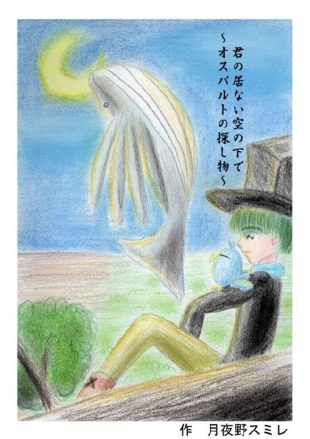
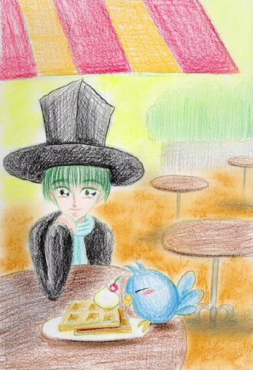
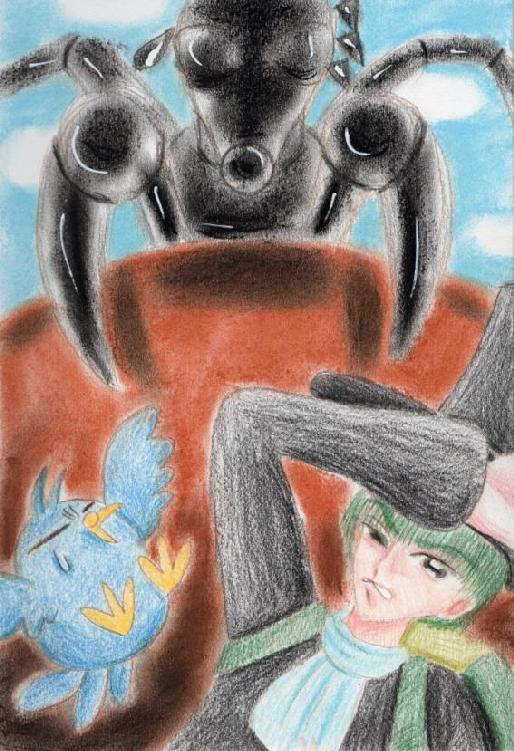
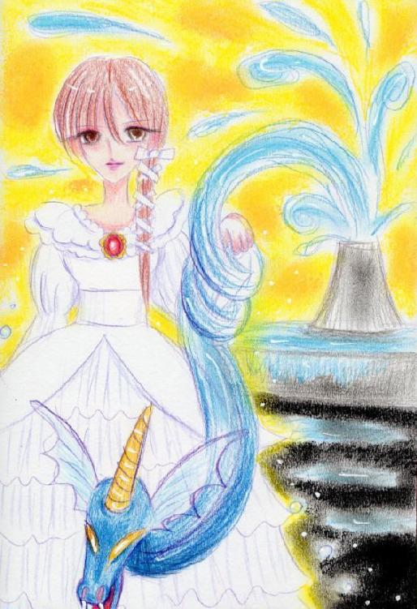
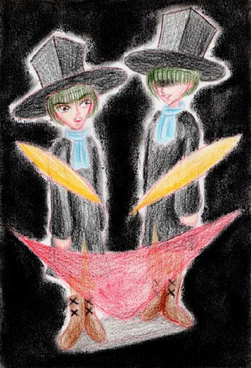
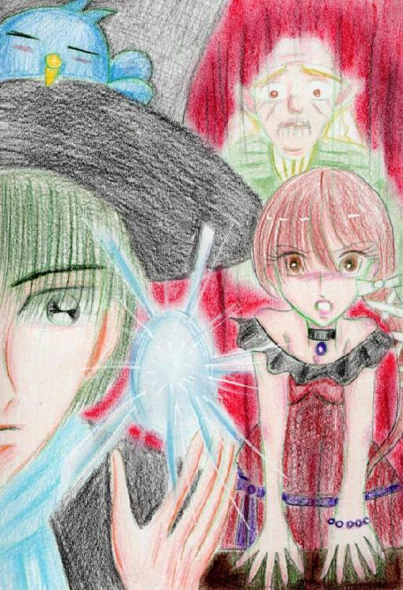
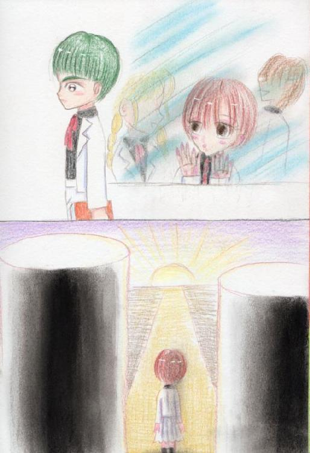
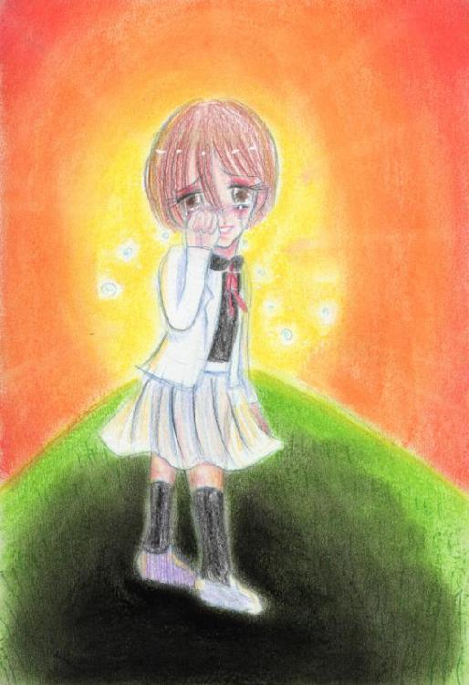
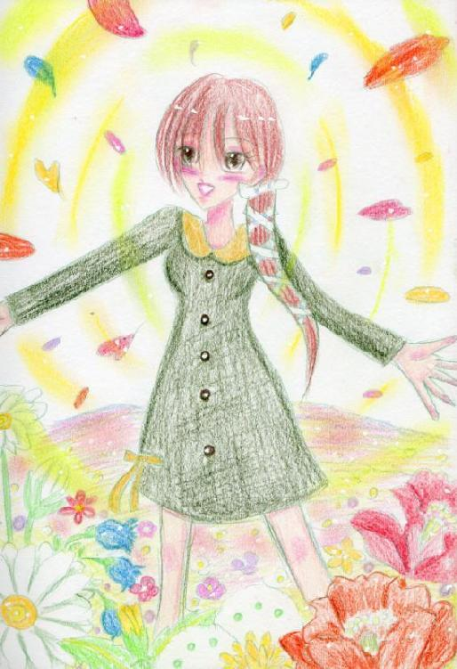
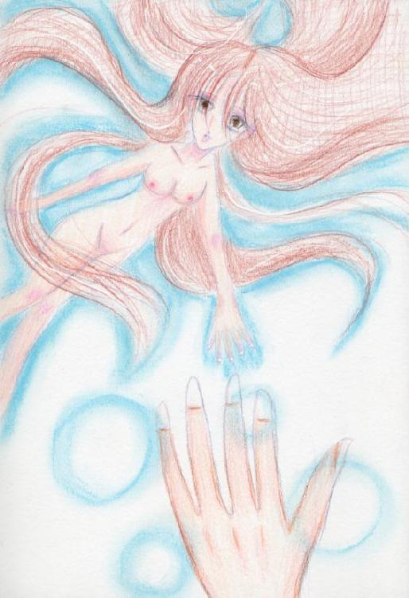

| 君の居ない空の下で ~オスパルトの探し物~上巻 君空シリーズ | |
| 月夜野スミレ | |
| tukiyonosumire (2013) | |

水の中、私がいる。いないはずの魚たちが私の視界をよぎってゆく。私はあの人を探して、光る水面をただ見つめていた。光の中、見つめる先は何も無いのか、何か救いはあるのか、私には分らなかった。
人はなぜか枯れ果てた土地に住んでいた。そんな人々が住まう土地をまるで囲うかのようにじわじわと樹海が包み込んでいく。人々は樹海を森と呼称し恐れていた。そんな世界で彼は生きていた。彼は乾期で今はねむりについたモミの森をぬけ、数少ない村の一つへと向かって行った。
彼は歩きながら手の平を空に向けた。すると手の平の上にみるみるうちに水の塊が生まれる。
肩に止まる青いカナリアがだるそうに彼に話しかけた。
「オスパルト、俺にもみず、みず～喉乾いた。死ぬ、死ぬ」
オスパルトと呼ばれた男、いや少年と言った方がいいだろう。その彼はつば広帽を傾け答えた。
「君はとまってるだけだろう？」
そう言って口に水の塊を頬り込んだ。口の中で水とかすかにミントの味がした。
「うん、昔ここはミント畑だったな」
「ゲッミント味かよ。じゃあ水は後で良いよ」
「のどが渇いて死にそうじゃあなかったのか？」
「今は乾いてない。全然乾いてない！」
ガントールは羽根をくちばしで手入れした。
「ハーブは体にいいんだぞ」オスパルトはそう言ってもう一つ水の塊を口に頬り込んだ。
「村はまだかな？ちょっと見てくる」
ガントールは空を舞い上がったと思ったらすぐに戻って来た。
「うん、もうすぐだ。村が見えた。」
「たまには飛んだらどうだい？もっと太るよ？」
ガントールは不機嫌そうに羽毛をふくらました。
「これは寒いせいだ。知らないのか？こうやって羽根をふくらまして温まるんだ。気にしてる事をずけずけと言いやがって、俺は太ってない。断じて太ってないぞ！」
「あーそうか、そうか。左肩だけずっしり来るのも寒いせいだね。本当寒い。」
「こいつ、違うって言ってるだろ、このこの！」
オスパルトはガントールの怒りのつっ突きを手のひらでかわしながらも歩き続けた。やがてガントールの言う通りに森は開き人一人通れるだけの道が現れた。つば広帽と黒いコートにリュックをしょった人影はゆっくりと村に近づいて行く。
「本当に人が住んでるのか？」
ガントールが警戒した表情で聞くのに対して、オスパルトはそっけない態度で答える。
「三日前、聞いた話では住んでるって話だよ。」
「また野盗の村じゃないだろうな？おれはもうごめんだぞ、あんな目にあうなんて」
ほんの一か月前尋ねた村は、野盗達がねぐらにしていてぐうぐういびきをかいていた。あの時は気付かれずに退散できたのだが・・・
「大丈夫だろう」こともなげにオスパルトは指さす。
幾つもの畑が耕してある。人がいる証拠だ。
「畑があるって事は普通に暮らしてるやつがいるってことだよ。」
「ただ畑仕事が好きな野盗かも・・・」
オスパルトはその様子を想像して苦笑した。
「あっ笑った！馬鹿にしたな！」
「はいはい・・・」
オスパルトは別に緊張も何も無く村に入って行った。村人たちの好奇の視線が注がれる。髪が中途半端に伸びたこの旅人の突然の来訪に戸惑っているのだ。オスパルトはその辺の村人を捕まえて尋ねた。
「私水使いですが、なにかご用はありませんか？」
それを聞いた村人は安堵した様子で話した。
「あ、ああ。水使いか。よく来てくれた。最近井戸の水の出が少なくなってきてたんだ。詳しい事は村長の家で聞いてくれよ、村長の家は一番大きなあの家だ」
オスパルトはありがとうございますと会釈し村長の家に向かった。
村人たちの話声が耳に届く。
「今回の水使いはずいぶん若い水使いだねえ。」
「こんな所まで来るなんて変わっているわねえ」
そんな言葉にガントールは「じゃあ何でこんな所に住んでるんだ？」と言おうとしたがオスパルトにくちばしを抑えられ何も言えなかった。
村長はまだ村長と呼ぶには若い男だった。
「これはこれは水使いがこんな所まで来てくれるなんて！こちらから町まで呼ぼうかと考えていたところでしたよ」
オスパルトはつば広帽を脱ぎながら答えた。
「なあに、探し物ついでに来たんですよ。ああ、申し遅れました。私はオスパルト。こっちはガントールです。」
ガントールはぺこと挨拶をした。
「ああ、そうですか。私はテグです。今日はもう日が暮れてしまう。今日はうちに泊まって下さい。」
「やった。久しぶりのまともな食い物！」ガントールは嬉しそうにくるりと二人の頭の上を飛んで見せた。
まだ日が落ち切っていない頃、テグの用意した夕食を見てガントールは一言。
「・・・しょぼい」
心なしか声のトーンも落ちていた。
テーブルには芋のスープとパンのみ。
「すみません、なにせ貧しい村なので・・・」
「いいえ、いきなりの訪問ですから、ありがたく頂きます。」
オスパルトは青いカナリアをガントール用に盛られた小さな皿に入ったスープに沈めながらにこやかに笑ってスプーンを手に取った。
それを見たテグはやや驚きながら話題を変えた。
「そう言えば探し物を探している途中だとか？」
「そうそう、こいつ大事なものなくしてやがんの・・・ぶ」
オスパルトは笑顔のまま、またガントールをスープへと沈めた。
「いいえ、別に大したものじゃあないんですけどね。無くしたままだと、気になるっていうかなんて言うか・・・・」
「ええ、わかります。私も最近は忘れ物が多くなってきて・・・・」テグの話は横道にそれ、それから何時間も話に二人は拘束された。
「ふああ～、あの爺さん話しすぎだよ」
「めったに旅人なんて来ないから興奮してるのさ」
オスパルト達はテグの家の二階にある部屋に宿をとった。コートとマフラーを脱ぎごろんとべッドの上に横になるオスパルト。
「オスパルト、探し物はどうするんだい？仕事しに来たんじゃあないだろう？」
ガントールがその胸に止まる。天井にろうそくで照らされたガントールの影が躍る。
「・・・・今日は月がはっきり見えるね」
「もうちゃんと聞けよ、オスパルト」
月が大きく窓から見える。
「聞いているさ。ついでに仕事をしていくだけだよ。その後聞けばいい。仕事をこなした後なら気持ちよく教えてくれるさ。」
そう言って目を閉じ、毛布をかけた。
「ちえっチャッカリしてるな・・・おい、寝たのかよ・・・・」
ガントールの問いにオスパルトは何も答えなかった。ただ寝息を立てていた。
「おやすみ、オスパルト・・・・」
カナリアはろうそくの灯を消した。そして闇の静寂が訪れた。
次の日の早朝、二人は村を発った。村の近くの山腹まで登っていく。オスパルトはリュックに手を突っ込み、黒水晶をくくりつけてある金鎖を垂らした。そしてゆっくりそれを見つめた。
「・・・こっちかな」
何かを感じたようにつば広帽を押さえオスパルトは駆け出す。
「洞窟かよ」ガントールがうんざりとした様子で言った。
「俺、鳥目だから暗い所苦手なんだよな」
「じゃあ待ってる？」
「まさか！ついてってやるよ、心配だから」
オスパルトはガントールの首を掻いてやった。
洞窟に入ると鍾乳洞が広がっていた。耳をすませると水音が奥から聞こえてくる。オスパルトはリュックからランプを取り出し、火をつけ闇に閉ざされた奥へと進んで行った。しばらくするとこうこうと水が流れていた。
「ここではだめだね」
人が入った形跡がない。きっと誰も森には好んではいらないのだろう。
「何がダメなんだ？」
質問に答えずオスパルトはランプを近くの岩に置き先ほどの黒水晶をその流れに浸した。またリュックから小瓶を出し、洞窟湖から金鎖を抜き取り、滴り落ちる水滴を集めた。
「まずは仕事をこなさなきゃ始まらない」
小瓶にたっぷり集めた水にトルネコの葉をすりつぶした粉を入れよく揺らして混ぜる。そしてまた石英の粉を入れる。待つことしばし液体はころりころりと音を立てるようになった。
「よし出来た」
「いつもながら何やってんのか、よくわからないな、オスパルト」
横から口を挟むガントールはいつの間にか肩から飛び立ちあくびをしながらランプの上にいた。
「いいんだよ、これで」
外に出るともう日は傾きかけていた。いや、薄暗いのは森の上空に何か巨大なものが存在しているからだ。
「あれは・・・・月流鯨？」
それは鯨に似ていた。ただし尾びれはなく、その変り大きなひれがゆっくり羽ばたいて巨体を支えていた。
「どおりで人が森に寄り付かないはずだ。ここら辺は月流鯨の巣になっているんだな。」
「オスパルト、食われる！食われる！」
「大丈夫だよ、近くで飛ばない限り間違っても口に入れられないさ」
そう言いながらオスパルトはぼんやり思い出した。昨日テグが話していた話の中で月流鯨は夜中に人の魂を食らうという話を・・・
「オスパルト、早く行こうぜ！」
ガントールもそれを覚えていたのかオスパルトをせかした。オスパルト達は洞窟を後にした。
村についたオスパルトは村の中心にある井戸に向かった。人々はそれを興味深げに見守っている。リュックから洞窟で取れた小瓶の中身を手のひらに取り出す。掌の上に石がころりと出てきた。それを井戸に投げ入れ手をかざす。するとこぽこぽと枯れかけた井戸から水があふれてきた。あの洞窟の水をここに呼び込んだのだ。
「これでしばらく水が枯れる事もなく暮らせると思いますよ」
「そうですか、ありがとうございます。これは少ないですが...」と言ってテグは小さい袋を差し出した。
「あとこれは旅の途中で食べて下さい」と焼き立てのアップルパイの包みをオスパルトに渡した。
ほんのりまだ温かい。一羽と一人はそれを確認するとにっこり笑った。
「いやあ、ありがとうございます。それでここいらへんには遺跡が残っていますか？」
「遺跡？あんな役に立たない物どうするんです？草も育たない、生き物もすみつかないあんな所に・・・・」
「そこに探し物があるかもしれないんです」
「確か、西の方に行けば遺跡があったとおもいますよ」
「ありがとうございます。早速行きます。」
「じゃあな、おっさん。アップルパイありがとうな」
オスパルトは一礼して村を後にした。遺跡があるという西の方向に歩を進めて行った。
灌木が茂り道をふさいでいた。オスパルトはその度に足をとられそうになったり枝がコートにからみついて来たのを切り裂いてゆかなければならなかった。
「なあ、ずいぶん森に近いんだな。遺跡」
ガントールはぼーと近くの枝にとまって、植物と格闘しているオスパルトに話しかけ、答えを待つ。オスパルトは巻きついてくる枯れた枝を持っていたナイフで切り落としながら答えた。
「そうだね、随分森に近いみたいだね」
「どうする？森につかまったらお前ら人間は終わりだろう？」
「僕は水使いだから大丈夫だよ」
「どうだか」
「それにあの人たちが知っているってことはまだこっちの領域さ。まあ、あまり好んで入らないようだけどね」
しばらくすると岩場があった。わずかな植物しか生えていない。二人はそこで休憩をとることにした。
腰かけるとさっきもらったアップルパイをナイフで切り分ける。口に運ぶと甘い味に満たされる。
ずいぶん辺りが暗くなってきた。日が落ちてくるにはまだ早い。
モミの木々が日を求めて移動しているのだ。それをぼんやりと見ながらアップルパイを口に運ぶ。
「おいしいね、アップルパイ。」
「そうだな、あのおっさん、料理上手だな」
「ガントール、昨夜と言ってること違う」
「そうだっけ」
「そうだよ」
そう言っている間にもモミは日照のいい場所を求め移動していく。「僕らも行こうか」
オスパルトは腰を上げて伸びをした。
遺跡は今まで一番風変わりだった。不自然に石が引きつめられ草がまばらに生えているだけだった。
「ここ、今までの遺跡と違わないか？」
「何が？」
「目的が違うっていうかなんかさあ」
「入ってみればいい事だよ」
オスパルトは一つ石畳からぱっくり口をあけている入り口を指示した。中はひんやり静まり返っていてぼんやりと薄く光っていた。辺り一面にガラスのようなものが割れていて靴を踏みならすとちゃりちゃりと音がする。
「そんなにくっつくなよ、ガントール」
ガントールは顔面に顔を押し付けている。
「だってここ、生き物の気配がしないんだもん」
「大丈夫、ここら辺に化け物なんているはずが無い。ここより外の方がよっぽど危ないだろう。ここは崩れかけたただの廃墟だよ」
「その廃墟に好んではいるやつがいるから」
ガントールはいつもの憎まれ口を言う。
「そうそう、その調子」
オスパルトはどんどん奥へとはいって行った。場所によっては崩れて入れないところもあった。
「崩れてだいぶたつね」
二人は崩れていないところを選び奥へと進む。そして目的のものを見つけた。割れたガラスの向こうに水がたまっている。
「見つけたな、さあ今回はどうかな！オスパルト、ちゃちゃっと済ませろよ」
オスパルトはうなずくと手袋を外しその液体に手を沈めた。
様々な水槽が引き締めあうその中はまるで別の空間にいるようだった。彼はいつもの調子ではなくいつに無くはしゃいでいた。
「・・・・って大きいね」
彼が私の手を取り笑って振り向く。巨大な水槽には・・・・が泳ぐのが見えた。その様子は私の中でまるで写真のように焼き付いて離れない。
「・・・・！！」
「手ごたえあり？」
ガントールの声がオスパルトの耳に届く。
「・・・・うん、すごい・・・・・こんなに、しっかり視えたのは初めてだよ」
オスパルトはゆっくり水から手を抜いた。まださっき見た感覚とだぶって視える。しばらくオスパルトはしゃがんでいた。大きく息をのむ。目を瞑ればさっき見た映像が鮮明に浮かんでくる。
「どうした？気持ち悪いのか？なんか嫌なことだったか？」
ガントールはしきりにオスパルトの顔を覗き込む。
オスパルトは首を横に振るとゆっくりと立ち上がった。
・・・・・まだ遠い。オスパルトは声に出さずに呟いた。
外に出た。外界の冷えた空気を胸いっぱいに吸い込む。二人は遠くを眺める。もう日が落ちている。昼間あんなにざわめいていた森は、今は風の音だけしかしない。遠くで月流鯨が空中を泳いでいる。まるで笛の様な声とともに。
「・・・・？」涙がオスパルトの瞳からこぼれおちた。
「どうしたんだ、オスパルト？オスパルト？」
何故かさっきの水視と今の風景が重なってとても苦しい。とてもひどく懐かしく、なんて言葉にしたらいいのか分からなかった。こんなことではガントールを心配させてしまう。しかし涙は止まらなかった。
この涙の意味は何なのだろう・・・・。
この世界に神様はいるのだろうか？もしいるとしたら罪深い私たちをお許しにはならないだろう。それでも生きたい、生きて貴方に会いたいと思う私はその度に、とてもとても罪深い存在なんだと思い知らされる。そんな私にまだ貴方は微笑みかけてくれるだろうか？
あれから数日後、北の森に近く、この世界では大きな部類に入る街エスクペリアにオスパルトとガントールはいた。エスクペリアはプラウ川に沿って作られた比較的森に近い町である。プラウ川はこの世界で流れる四つの川の一つだ。その流れはメタセ湖へと続いている。基本的に街は川、もしくは湖などの水源近くに作られる。それが渇いたこの世界の鉄則だ。
露天に近いカフェで深くもたれるオスパルト。つば広帽を脱ぎ適当に注文をする。
「ワッフルセット一つ」
「かしこまりました。」
ウェイトレスが奥へ引っ込んだ後に肩に乗っていた青いカナリアがテーブルに乗って話しかける。
「なあ、こんな所に本当にあるのか、オスパルト」
「う～ん、古い水は呼び合うはずだからこの方向でいいはずなんだけど・・・」
短いのか長いのか中途半端な髪をかき分け答えるオスパルト。懐からあの遺跡から取ってきた水が入っている小瓶を取り出す。金鎖の黒水晶を出してその小瓶に近づけると中の液体が短く震える。
「・・・・う～ん、やっぱりここら辺なんだよね」
「こんな街の中でどうやって捜すんだよ！」
「まあ、ゆっくりいこう。やっと見つけた手がかりなんだ。・・・・ああ来た、来た」
ウェイトレスがワッフルセットを持ってこっちに来る。
「今はワッフルのことを考えようよ」
「お前・・・・自分のことだろうが！」
ウェイトレスは紅茶とクロテッドクリームとイチゴが乗っているワッフルをテーブルに置く。
「お待たせいたしました」
ウェイトレスが去っていくとガントールは溜め息をつきながらワッフルに飛びついた。
「はぁ、なんだかなあ」
「・・・うん」
そう言われ、またあの水の記憶を思い出す。どこか見覚えがある様な、しかし時間がたてばたつほど記憶はあいまいに薄くなっていく。まるで夢を思い出すような感覚だ。思い出そうとすればするほどそれは別のものに変質していく。
「スピード勝負かなあ。」
「何が？」
ガントールはものすごい勢いでワッフルをつついている。
「君がワッフルを食べ終わる時間のこと」

それでも忘れられないあの人の言葉。なんてこの世には悲しい言葉があるんだろう。
オスパルトは少し早い昼食を終えお金を支払い、席を立った。
「さてと・・・・適当に古い建物から当たっていけばいいかな」
「なんだ、考えてんじゃないか」
「・・・・口にクリーム付いてる」
オスパルトは自分の裾で拭いてやる。そして、ゆっくり人込みの中に入って行った。
「おい、待てよ！」
ガントールは左肩に取りついた。
「この街は領主の館を中心に作られているって話を聞いたことがあるよ」
「詳しいな」
「街という名のつく街は全部行ってみたけどね・・・・まだそのころは水視を知らなかったから」
「ふうん、でなんか収穫あったんか？」
「・・・・ここじゃないってことが分かった。」
「なんだ、そりゃ」
オスパルトの言うとおりにエスクペリアは小高い丘に建てられた広大な領主の館を中心にして作られていた。そしてもう一つ収穫があった。「水使い募集、詳細は領主代理エニス・ドーニェルまで」壁のポスターにそう貼ってあった。
「・・・変だね」
オスパルトは人込みの中ポツリと呟いた。大きな街なら一人や二人お抱え水使いがいてもいいはずである。しかも代理ときている。
「何が変なんだ？オスパルト。ただ単に考えすぎじゃあないの？」
「うーん」と唸るオスパルト。（怪しい、怪しすぎる。師匠あたりなら喜んで首を突っ込みたがるような物件だがこっちは大事な大事な探し物をしている。面倒事は避けたい。）とオスパルトは思案した。
「やめよう、さあ他を探そう・・・・」と言いかけた時だった。
「まあ、もしかしてそこにいらっしゃるのは水使いさんではありませんか？」
まだ若い女性の声だった。振り向くと馬車から身を乗り出してこっちを見ている女性がいる。
「そうだよ、こいつ水使いだ。」と気楽にガントールは答えていた。面倒な事に！！オスパルトは思わず肩のカナリアの口をふさいだが遅かった。
「まあまあ、やーぱりそうでしたのね！張り紙に目を向けていらっしゃるからもしかしてと思ってお声をかけてみたら、まあ！ささ、お乗りください。」
馬車から黒服の男が現れた。そしてオスパルトの肩をガシッと掴んだ。またか・・・オスパルトは落胆した様子で肩をすくめた。ガントールの口の軽さは天下一品だった。前にも同じようにトラブルに巻き込まれたことを思い出したオスパルトは誰にも気づかれぬ様に苦笑した。
馬車は走る。その馬車の中オスパルト達の向かい側で上機嫌で話す女性。その脇にはむすっとした黒服がいる。
「申し遅れました。お恥ずかしい・・・・この町エスクペリアの領主代理エニス・ドーニェルですの。おほほほほ。横にいるのは執事の二コルですわ」
エニス・ドーニェルはまだ少女といってもおかしくないくらいの年齢だった。
「オスパルトです・・・このカナリアはガントールです・・・・」オスパルトの声は心なしか力が抜けていた。
「どうぞ、エニスって呼んでくださいな。」
エニスは扇を開きオスパルトを見据えた。
「よろしくな、エニス」
ガントールは軽い口調でそれに答えた。黒服はそれにぴくりと反応したがガントールは気にもせずにエニスとたわいない話で盛り上がっている。オスパルトは笑顔のままその様子を見ていた。しばらく馬車は四人を揺らしながら町を進み、巨大なゲートはオスパルト達を迎えた。エニスが謡うように紹介する。
「ようこそ、ドーニェル邸へ」
ドーニェル邸はまるで外の街並みとは別世界だった。外壁はきれいに整った輪郭で中に入ると広々としたエントランス、そして同じような部屋が続く構造、オスパルトはどこか見覚えがあるところだった。何故だろう？初めて来たはずなのに？
いたるところに高そうな赤いじゅうたんが敷き詰められているのは所有者の趣味だろうか。高そうなオブジェも飾られている。成金趣味に見えないのは流石と云おうか・・・・。オスパルトはため息をついた。
「さあこちらですわ」
エニスは執事にドアを開けさせ優雅に奥の部屋にとオスパルト達を導いた。
その体には似合わない大きな椅子にもたれるエニス。その様子がしっくりくるのは不思議だが一応彼女は領主代理だから当たり前のことかもしれない。席に座ったオスパルト達にも紅茶と茶菓子がふるまわれる。
「さあ、どうぞ召し上がって、たいしたものではありませんが」
ガントールはカップに止まり紅茶を啜った。オスパルトは手をつけずにじっとエニスを見つめる。
「まあ、どうなさったの？オスパルトさん」
先ほどから変わらぬ笑顔でこたえるオスパルト。
「・・・・領主代理という割にはずいぶん若いんですね」
「ええ、父が遠方に外出しているものだから・・・・今回の依頼はその父に関してなんですが、父は何というましょうか冒険好きで、いえ、水使いさん達に比べればそんなたいしたことないんでしょうけど。とにかく今回は遠出したようでふた月になるんですがまだ帰って来ないのですわ。父はお出かけになる前森をみて来るとおっしゃっていたのできっと道にでも迷われているのでしょう」
オスパルトは森という言葉に反応した。
「森ですか？」
「ええ、森です。それで水使いさんに捜索依頼しようと思って」
エニスは笑顔のまま答えた。オスパルトは内心頭を抱えた。いるのだ。こういう無茶な依頼をする人間が、森はこの人が入る場所では無いのだ。あんな所をみて来るやつがいるならば最初から止めた方がいい。そうオスパルトは思っていた。
「うちの水使いはあんな所行くのは嫌だと言ってきかないんですのよ」
「それでその水使いはどうしたんだ？」
エニスはガントールの問いには答えなかった。どんどん話を進めていく。
「そうはいっても気になるのは仕方ありませんわ。だって実の親子ですもの。安否が解らないのは辛すぎますわ。だからお願い致します。どうぞ私の依頼を受けてください。ああ、ただの人探しですわ。ただ無事かどうか知りたいだけですの。
簡単な仕事ですわ。だって水視しながら足跡を探るだけですもの。今回の探索には数人の館の者をつけさせますからよろしいですね」
これでは途中で逃げようとしても逃げられそうにない。
「待って下さい。」オスパルトはゆっくり口を開いた。
二人は笑顔で見つめ合う。
「はい？」
エニスは首をかしげ笑う。
「その申し訳ないんですが・・・・・この依頼お断りします。」
「ただの人探しですわ、大した依頼ではありません。貴方は実行できる力を持っているから少々貸してもらいたいだけですわ？どうぞ親を思う私の気持ち、受け取ってくれますわね？」
執事は重いものが入っているらしき袋をオスパルトの目の前に持ち出してきた。
「それは半金です。成功させていただきましたらその二倍お出しさせていただきますわ。もちろん危険なことは承知ですのよ。でもあなたならきっとできると思いますわ。お願い致しますわ。」
エニスはにっこり笑ったままこちらを見ている。
「この女かなり押しが強いぞ、オスパルト」
こそっとガントールが耳打ちしてくる。オスパルトは出来るだけ穏便に済ませようとした。
「ですから若輩者の私には無理です。森には水使いでもやすやすと近寄る事は出来ません。水使いじゃないとかそういう問題ではないんです。」
「まあ、うちの水使いと同じことを言うんですのね、ねえ、二コル？」
執事の二コルは黙って頷く。
「それではもう少し考えを変えてくれるまで家に泊まってもらってもらいましょうね」
エニスはパンと手をたたく。すると黒服の男たちが扉を開きオスパルトを囲む。ガントールは一人で逃げようとしたがあっさり捕まえられてしまった。
オスパルト達は地下牢に閉じ込められてしまった。
「気分が変わったらいつでも言ってくださいね♥」
エニス達はそういいのこし立ち去って行った。
「なんだよ、この扱いは！横暴だ！」
オスパルトは平然とガントールが怒っているのを見ていた。
「な～ここから出ようぜ、オスパルト～お前ならできるだろう？」
「こうなったのは君のせいだろう。いちいち怒るなよ。まあどうにかなるって」
「何で俺のせいなんだよ！こんな牢屋なんか嫌だ、見ろ、大空を飛べもしない！今すぐ出る！ここから出る！！こんなかび臭い場所嫌だ！！」
格子にみっちり挟まってみせるガントールを見て、もう少しダイエットしたら通れたかもしれないとオスパルトは思った、そして冷たい石畳の上にへたり込む。
そして後ろを見渡すと小さな格子つきの窓と先客がいた。
「よう」
先客は痩せた男だった。格子から光が漏れその男の顔を判別するまでしばらく時間がかかった。短い金髪のひげ面だった。
「どうも」
オスパルトは男の挨拶に答える。
「・・・・あなたが、エニスさんが言っていたエクスぺリアの水使いですか？」
「そうだ」
男は事もなしに答えた。
「俺はジェッカ。俺以外にもう一人水使いがいたんだがな・・・・そいつは領主と行っちまった。あんたは？」
「僕はオスパルト、こっちの挟まって動けないのがガントールです。」
オスパルトは動けなくて難儀しているカナリアを引き抜いた。
「あんたはあのお嬢様の言う通りにするのかい？」
「しませんよ、あなたはどうなんですか？」
「俺は辺境生まれだ。森の怖さは十分分かっている。物見遊山気取りで見に行く領主さまとは違う。」
「へぇ～そんなに恐ろしい所かねえ。やっぱり羽根がないのはつらいな。」とガントールは自慢げに飛んだ。
・・・・その自慢の羽根で食われそうになっていた鳥は誰だったけなあとオスパルトは思った。
「そうだよ、俺たちゃ所詮籠の鳥だ。だが、この籠の中なら生きてゆけるし笑いもできるし泣きもできるんだ。文句は俺にはねえよ。ガントールさんよう」とジェッカはガントールに答える。
ジェッカは背を向け寝ころんだ。ガントールは好き勝手なことを喚いていた。
「なんで茶菓子ふるまったくせに閉じ込めンだ！俺たちは客だぞ！客！親の顔が見てみたい！」
「たぶん、顔も見れないよ・・・・」
「へ？なんで？」
「森に立ちいったら普通の人は死んじゃうよ。あそこのルールを知らない人たちはね」
ジェッカが口を挟む。「まるで見てきたように言うんだな。オスパルト、入って行ったらあの世行きに決まってんだろ！ここの領主もバカなこと考えたもんだ・・・・」
しばらく沈黙が続く。オスパルトはその沈黙の中探し物の事を考えている。何か暇になるといつもそれだけを考えている。それほどオスパルトにとって捜し物は大切なものだった。
そして芋づる式に古い水の事を思い出す。
「ジェッカ、古い水を知ってますか？」
振り向いたジェッカは間の抜けた顔をした。
「随分悠長なことだな。地下牢に閉じ込められたんたぞ。・・・・・心当たりがあるっちゃああるがな」とヒゲをぼりぼりかく。
古い水といえば水使いの間では古い記憶を持つ水場をさす。水使いは水を通して水の記憶を読み取ることが出来る者もいる。ただはっきり言えば役に立たない。過去を知っても今の暮らしに反映することはできない。ただ過ちや善行を垣間見るだけだ。少しも腹が満たされることは無い。この世界では皆今を生きるだけで精いっぱいなのだ。過去を悔いたり未来に希望を持ったりするのはある程度余力がなければできないことだ。
「このフロア、地下牢を出られればの話だが、まず右に行く。すると吹き抜けのエントランスがある。その真ん中に噴水がある。この建物が立つ前からあるって話だからまあ古いちゃあ古いわな。なんでも何度も修理して使っているらしいからな。古代の物を所有しているから領主足る身分に居るってことさ。世間ではそういう力の証しが必要なんだ」
ふ～んと二人は話を聞いて思い出す。ここに来る途中、この建物も何度も修繕して使われているという話をエニスとしたことを。
オスパルトはちらりと牢の外をのぞいた。まだ見張りがいる。まだ行動は出来ない。
「そんな話聞いてどうすんだ。荷物も何もかも没収されてんだろ。やめとけ、やめとけ！あのお嬢さんの気が変わるのを待てばいい話だ！もうここの領主はあの娘だ。あの頑固な娘がな」そう言ってごろりと背を向け寝てしまった。
ガントールはなんのやり取りなのか解からず目を白黒していた。オスパルトはじっと目を瞑って探し物の事を考える。オスパルトの頭の中に師匠の声が響く。
「水使いは万能ではない。欲しいもんを掴めるのは運のいい奴だけ。お前は運がいい。力がある。それを生かせばいい。そうすればきっと道が開ける」
ならやらなくてはならない。これ以上後悔したくないから。
夜、見張りがあくびをし始めたころ・・・・それまで黙っていたオスパルトは両手を合わせた。開くと小さな水の塊が浮かんでいる。ジェッカはそれを片目で見て言い放った。
「そんな小細工で何するんだ？喉でも乾いたか？」
オスパルトは黙って水の塊をカギ穴に突っ込む。そして水を凍らせた。そのままあっさりガチャリと鍵を開けてしまった。ジェッカはずるっと体勢を崩して驚いた。
普通の水使いは水を凍らせることは難しい。何故なら水を高い圧力で固まらせる必要があるからだ。しかも鍵のように硬く柔軟性がある氷が一瞬で出来るのははっきり言って並の水使いではない。
「あ、あんたいったい？」
「・・・・起きて、ガントール。」
寝ているガントールを呼ぶオスパルト。
ガントールを肩に乗せて格子に手をかけてジェッカに尋ねる。
「一緒にきますか？」
「あ、ああ」
オスパルトは身をひるがえして見張りの男を昏倒させる。手刀でこん睡させたのだ。素早い動きだった。
ジェッカは今自分の目の前にいる少年が何者なのかと興味がわいた。しかし、ジェッカにとって今は逃げる事の方が重要だった。今まで二か月も閉じ込められていたのだ。臭う身体を拭きたい、女を抱きたい。様々な欲求が爆発しそうだった。
「じゃ、じゃあ短い付き合いだったな。俺はこれでな、またどこかであったらその時はお礼の一つでもするよ。じゃあな！」とジェッカは一階へと消えて行った。ジェッカという男は厄介事があると放り投げて逃げる癖があった。その癖で彼は見なくていいものを見ずに済んだ。彼は運が良かった。
オスパルトは物置と化している部屋から自分の荷物を取り返し暗い廊下を歩いてゆく。ガントールはうつらうつら安心しきった顔で寝ている。
ジェッカのいうとおり噴水はあった。
「・・・・この噴水は？」どこかで見覚えがあるような・・・・。デジャヴをおぼえた。僕はここに来たことがある？奇妙な感覚を覚えて噴水の縁に腰掛ける。深呼吸一つして手袋をはずす。オスパルトはただいつものように素手で水に触れた。ただそれだけのことだった。（イメージがいつものように流れ込んでこない？）そう考えたのは一瞬だった。嵐のように流れてくる感情、記憶、声。
ベッドの上に誰か寝ている。
「・・・・泣いてはいけない。皆いつかこの日が来る。だから泣いてはいけない」
男は手を伸ばし私に触れる。暖かい。
「父さんはいつでも傍にいてやるから泣いてはいけない、神様がお前を助けてくれるよ」
そう言ってほほ笑む。そんなのウソ、神様なんていない。私はこれで父とは最後だと考えがよぎる。
そしてその予感は的中した。
ああ、苦しい。いつまで私は偽らなければならないのだろう。ふとあの人の顔がよぎった。逢いたい。でもそんなばかげたことがあってたまるものか。私があんなことをいったばかりだ。きっと逢ってはくれないだろう。私の心の中は一つ穴があいたようだ。それでも気を強く持たなければならない。まだ始まってもいないのだから。私は部屋を出る。・・・・から出る。
そこには彼がいた。彼は私の名を呼んだ。彼は言った。私の様子が変だったから来てみただけだと。ただの気まぐれだと。少し話がしたかっただけだと、たどたどしく言う。彼自身なぜ私の帰り道を待っているか意味が分からない様子だ。それでもいい。いや、こんなことがあっていいはずがない。もし神様がいるならばなぜ早く裁かないの？世界はもっと私をどん底に引きずり降ろせばいい。どうしてこんな救いを与えるの、神様？
オスパルトは次第に混乱していくイメージの中、やっと気づいた。それが誰かという事に。
・・・・そうか。君だったんだね。なんで忘れていたんだろう。君の茶色い髪、いつも泣いてばかりいた小さな背中、潤んだ瞳。僕は何故思い出せなかったんだろう。君のことを僕はこんなにはっきり覚えているのに、君の声をこんなに身近に感じられたのに。
・・・・やめて、私を見ないで。
私を思い出さないで、私を責めないで！
あなただけは私を思い出さないで！
《彼女》はそれを知らされることを拒んだ。水の中の魚たちはぱっとちってゆく。全て闇へと変えられていく。この記憶も失われていく。そして深いまどろみへと落ちていく。どこまでも・・・・・
「オスパルト？オスパルト？」起きたガントールが心配そうに肩に止まり呼び続ける。しかし返答はない。向こうの廊下から人影がちらほら現れてくる。
「やばいよ、オスパルト。逃げないと！何やってんだよ！」ガントールは水中に浸してある手をどけようと必死につついた。異変はその時から始まったのかもしれない。水面が切れかけた電極の様に点滅し始めたのだ。やがて騒ぎ立てるガントールを無視して光はオスパルト達を包み込んでいった。そして、オスパルト達は屋敷から忽然と消えてしまった。
オスパルトはゆっくり目を開く。初めに目に映ったのは月だった。それから欝蒼とした木々とガントールがいるのを確認した。下は草だらけだった。どうやら街ではないらしい。
「・・・・神様？」
「なんだよ、起きて初めの言葉が神様だ？なんだよ、神様ってやつは」ガントールは悪態をつく。
「それは・・・・・」オスパルトは水視で聞こえてきた言葉でどんな意味があるのか説明しようとした。
「神様ってやつは・・・・・」
「神様って？」オウム返しにガントールが問いただす。
「なんだっけ？」
「俺に聞くな、俺に、結局なんだったんだ、さっきのは？」ガントールは月光の中あくびをした。
オスパルトは帽子をかぶり直していると、「・・・・あ、あああああ！！」突然大声を上げた。「なんだ？どうした？」
「全部、忘れている！忘れた！どうしよう！」
「え？ええ？？なになに？」オスパルトの悲鳴とガントールの声が林に響き渡った。今日の夜も空には月流鯨が躍っている。
何を忘れたのかはそれはまた別の話。
彼が探している。それは歓喜でもあり恐怖でもあった。私は自分でも気付かないくらい怯えているのかもしれない。私は水から手を出してみる。雫が水面に垂れとても綺麗。彼が川を見ていると落ち着くといったことを思い出す。あの頃は何もかも眩しくて何もかも悲しくなるほどひどく懐かしい。
オスパルト達は困っていた。それも凄く、かなり追い込まれていた。今は昼なのか夜なのか分からない。ただ暗い。闇雲に暗い。何故ならそれはドームの中だからだ。
ガントールはそんな状況下でもいつも通りだった。
「今って昼ごろだよな！このおなかの減り具合からして間違いない！」
「・・・・こ～～～～～～んなところに食べ物があると思う？」
「・・・・・ごめん。」
「いや、いいんだ。こればかりはどうしょうもないね」
オスパルトは天井というか空を見上げる。ここは危険だ。でもここ以上に外は危険だ。何とか裏をかかなければいけない。
あれは誰の所業だったのか彼らには分らない。しかし命を狙われているのは紛れもない事実だった。しかし進まなければいけない。そこにその先にきっと真実があるのだから。
それは今から二日ほど前のことだった。いつものようにオスパルトは相棒のガントールと共に探し物を求め大きな遺跡があるという村へと向かっていく途中だった。乾いた道をひたすら歩いていく。周りには木々の姿も無く、岩ばかりだった。いわゆる岩石地帯というやつだろう。
「な～んもないな、オスパルト」
「なにもないね、ガントール・・・・・暑い」
暑かった。それも物凄く日差しがきつかった。季節はずれもいいところだ。
「暑いならコート脱げば？」
「脱ぐと荷物が増えるだろう。それともここで捨ててしまえって言いたいのかい？」
オスパルトのコートは撥水性のある特殊な繊維でできている。つば広帽も同じ素材だ。水にぬれる職業柄こういう装備が不可欠だ。その素材のおかげでずいぶん風通しが悪い。仕方が無いことだが暑いものは暑い！
「見てるこっちの方がつらくなってくるから言ってんだよ」
「ああ、もう力を使おう！」
オスパルトの周りに細かい氷の粒が生まれた。さらさらとオスパルトのつば広帽の上にさらさらと氷がつもっていく。
「これでどうだ！？」
「・・・・・うん、涼しいかな？いや、暑い？でも寒い？」
ガントールは首を傾げた。しばらく無言が続く。日差しは暑いと感じるが肌寒い。これはどうすればいいのか？横から風が吹いた。ビュオオオオオ・・・・。凍った水蒸気が二人に降り注いだ。
「ひええええ！！」
「冷たい！冷たい！」
二人は村に向けて走り出した。
オスパルトは村の定食屋に入ってこう言った。
「あったか～い飲み物下さい・・・・」
「俺も、俺も」
二人は席に座りぶるぶるふるえていた。その様子を見て怪訝そうな顔をした店主がコーヒーを持ってきた。
「・・・・お待ちどう様、あっついコーヒーです！」
「ああ、ありがとう。」
二人は夢中で飲んだ。やっと一息つけた。オスパルトは自分の失態について後々考えてみれば、術を解けばいい話だったなと思った。もう遅いが。
何気なくオスパルトは店の中を見渡す。閑古鳥だ。オスパルト達以外誰もいない。ガントールは店主に話しかける。
「なんでここはこんなに空いてんだ？」
「それは・・・・・」
店主は言いにくそうに口ごもる。
「なんか言いにくい理由があるみたいだね」
オスパルトは完全に他人事だ。
「ええ、そうなんです。もうすぐこの村はおしまいですよ。」
「へええ！何？何？」
ガントールはすぐこういう事に首を突っ込みたがる。店主は近くにあった椅子にドカリと座り込む。長い長い溜め息をつくと口を開いた。
「何でも遺跡に危険な物があるらしくそれを撤去すると行って領主様がここの閉鎖を決めたんですよ。おかげで商売あがったりですよ。お客さんも何か用事があるなら早く済ませた方がいいですよ。ほんと、やってられませんよ・・・・」
ア～～と店主はくたびれたため息ともつかぬ声を発した。オスパルトはごちそうさまと言ってコイン数枚を置いて席を立った。
「あ、おい、こんなに困ってんだぞ！見捨てんのか？お前それでも男か？」
ガントールがオスパルトの肩に乗り耳元で喚き立てる。オスパルトは軽くガントールをはたいた。
「いてっ何すんだよ！」
「・・・・僕に何が出来るっていうんだい？ガントール」
「え？え～と例えばその危険な物をさあバシッとやっつけちゃえば良いんじゃないのか？」
「君ねえ、その危険な物をどうやって見つけるんだい、そんなの無駄だよ、無駄。もっとましなことは言えないのかい。僕はそんな暇はないよ。僕にとって用があるのは遺跡の古い水だけだよ。」
「遺跡に行くならついでにやっちゃおうよ」
「だからとんでもないものだったらどうするんだ、そんな事しても一文の得にもならないから僕はやらないよ。」
二人の言い争いを傍観していた店主が恐る恐る口をはさんだ。
「あの～・・・・」
「なんですか？」
少しいらついたオスパルトに睨まれて少したじろぎながら店主は続ける。
「遺跡はだいぶ前から領主様から出た命令で出入り禁止ですけど・・・・」
「え？」
オスパルトはぽかんと口を開けた。その様子がおかしかったのかガントールは笑った。
「な～んだ！残念だったな。諦めようや、オスパルト。次いこ、次」
「いや、駄目だね、あの古い水はここにも反応して居るんだから、僕は絶対遺跡の中に潜り込んで・・・うぐっ」
店主が驚いてオスパルトの口をふさいだ。
「だ、だめですよ。昼間からそんな危険なこと言ってはいけませんよ。」
「何？危険なのか？マジマジ？」
店主は首をこくこく動かして答える。
「ええ、マジです。本当ですよ。ここの領主様はとても厳しいんですから、本当にそういう発言は気を付けてください。」
「でも、なんで領主が遺跡なんて気にしてんだ？」
「知りませんよ。そんなの私たちが知る由もないですよ」
ガントールと店主が話し込んでいるとオスパルトが店主の太い腕の中でもがきながら言った。
「いい加減放してください。」
定食屋から出てきた二人は悩んだ。一応遺跡の場所を聞いておいた。まずはそこに向かってみた。
「閉鎖されてやんの・・・・」
「うん、これは厳重だね。それにしてもおおきな遺跡だねえ」
オスパルトは暢気に見て回った。金属製の柵が幾重にも作られて近寄る事も出来ない。遺跡の見た目はドームの様に出来ておりあまり劣化していない複雑怪奇な赤茶色の外観が見て取れた。この様子なら森まで続いているだろう。
「こりゃ駄目だね、夜また行こう。」
「忍び込むつもりだろう」
「誰も見ていないなら気にすることもないよ。・・・多分」
「たぶんて、お前」
ガントールはあきれ顔で羽根を手入れした。
オスパルト達はその辺の空き家に入り込み仮眠をとった。オスパルトは夢を見た。探し物を見つける夢、そう長い間探していたものだ。それは手にした瞬間とてもうれしく感じた。でも、また掌からすりぬけていく。君は誰だっけ？オスパルトが思い出す前に目が覚めてしまった。
「何泣いてるんだ？オスパルト」
青いカナリアのどアップで目が覚めた。顔に止まるのだけはやめてほしい。痛いから。
「・・・・ん、夢見てただけだよ」
「そっか、心配しちゃったぜ。・・・・じゃあ行く？」
いつもの調子でガントールが言う。それがおかしいやら和むやらでオスパルトはふふふっと笑った。
「行こう」
「で、どうすんだ？オスパルト」
「森へ行く。」
ガントールの目が見開いた。
「本当に行くの？」
「行く。そこまでは柵が張ってはいないはずだ。」
「や、やめようよ～森は怖いよ。また食われそうになるよ～」
オスパルトは子供に言い聞かせる様にやさしく話しかける。
「森だっていったって何も奥まで行くわけじゃないよ。僕は水使いだから大丈夫。君を助けた時だって何とかなったじゃないか。大丈夫だよ」
「ほんと～に～」
「本当、本当」
「じゃあ信じてやる」
オスパルトは笑ってガントールの首を掻いてやった。
「さてと森に行く準備をしなくちゃね」
オスパルトはリュックから白樺の木の粉を自分自身、ガントールにふりかける。これで匂いがごまかされるはずだ。そして闇夜と同じ色のコートをはおり、いつものつば広帽をかぶった。心の中で師匠の言葉を反芻する。
「森から目をそらすな、森はお前を見ている。森の望む方向へ歩いて行ってはいけない、そこには罠が仕掛けられているのだから」
それに夜の森は眠っている。今は動物たちの時間だ。夜が明けるまでに済ませればいいことだ。
そして、オスパルトは森へとまっすぐ歩いて行った。
夜の森は静かだった。オークの木やナナカマドをよける。いつものおしゃべりなガントールも一言もしゃべらない。ガントールは少し震えているのかもしれない。ムワリと生き物特有の熱気が身を包み込む。樹木は黙っている。黙ってこちらを見つめてくる、この静けさが不気味だ。森に生きる動物たちは皆この静けさの中暮らしているのだろうか。その静けさがオスパルトはひどく懐かしかった。暗闇の中歩いていくと赤く光るドーム状のものが見えてきた。オスパルトは足元を、気をつけながら向かっていった。ぱっくりと口をあけて遺跡は待ち構えていた。
「早く入っちゃおうぜ」
ガントールが小声で先を促す。オスパルトはゆっくり新たな闇の中へもぐりこんだ。
遺跡の中は静まりかえっていた。ただ煌々と足元が光っている。通路は場所によっては崩れてはいたが綺麗なものだった。迷路のように入り組んでおり平衡感覚が失われそうだ。
「この遺跡、生きてる・・・・」
「えっ本当？まだ生きているのか、頑丈だなあ」
ガントールは嫌いな森から離れた安心感からまたおしゃべりに戻っていた。それでも緊張感は続いていたが気にもしていなかった。
「どこに古い水があるかな～？」
オスパルトは茶化しているガントールを無視して通路を歩いていく。角をいこうとした時、通路の向こう側で人の気配がした。オスパルトはその場でしゃがみ込み人の気配を探る。
「え？なになに・・・・むぐ」ガントールのくちばしを抑える事も忘れない。
コツコツコツコツ・・・・・一人二人・・・・オスパルトは耳で数える。
「二人だね、なんとかなるかな？」
オスパルトは呟き両手を合わせ、力をイメージする。流れる水のイメージを。オスパルトの手から生まれ出た水は水流となり手の中で循環していく。ガントールはこんな少しの水で何やる気なんだと言おうとしたがまたくちばしを押さえつけられてはかなわないので黙っていた。
二人の人間はそんなやりとりも知らずにどんどん近付いてくる。道は一本道だ。このままでは遅かれ早かれ見つかってしまうだろう。角を曲がろうとした瞬間、頭上から目に何か飛んできた。水だ。水が目を直撃したのだ。たまらず二人の男たちは目を抑え、何があったのか分からずにいた。ようやく目を開けられた時にはだれもいなかった。天井を見上げる。多分雨水がどこからしみ込んできて降ってきたのだろう。
「ついてないな」「ああ」
そんなことが二人いっぺんに起こる事など珍しい。男たちは苦笑した。
「危なかったねえ～」
「そうだね、でも人間が居るって事はこの遺跡は何かに使われて居るんだろうね。」
「そうなのか？」
「そうだよ、気付かなかったのかい？昼間の会話の時に領主がここを封鎖したって言っていただろう。きっとここには何かある。でも僕には関係ないよ。何をしようとね。」
少しオスパルトは黙って居たがまた口を開く。
「どんなに過去の遺物が凄くてもそれはもう失われたものなんだよ。わざわざ使おうとするのが間違っているのさ。例えどんなに便利なものでもね。じゃなきゃ滅びたりはしないよ」
「そんなもんか？」
「そういうものさ、でもここの領主さまと同じで過去にこだわる人間は多いけどねっと」
オスパルトは懐から例の水の小瓶を取り出す。水は小さく震えた。
「どうやらこの上のようだね。どこかに階段でもあるのかな？」
オスパルトはずいぶん暢気に話していた。さっきの二人組が侵入者に気付いたかもしれないというのに。
「まあ、話はここまでにして上に上がる方法を見つけよう」
オスパルトはまた迷路のような道を歩いていく。ガントールは少し考えてこう言った。
「じゃあ今俺達いけない事しているのか？」
そうだよと悪びれも無くオスパルトは言う。自分の探し物の為ならこの男は平気でルールを破るのかとガントールはあきれた。
いくつかの部屋があったが誰もいなかった、なにも無かった。夜なので何の作業していたのか分からなかったがもう作業を終え、見回り以外誰もいないのかもしれない。さっきの二人組は見回りだったのかもしれない。そんなことを考えている暇はない。意味がない。だってそれは考えても仕方がないことだから、立ち止まっている暇はないのだから、だから歩く。先に行く。探し物がこの先にあると信じて。
歩いていくとだだっぴろい空間に出た。あのドームの大半がこの空間に占められているのだろう。オスパルトは薄暗い空間の先をにらむ。睨んだままガントールをなでる。ガントールはその手を押しやろうともせずオスパルトの好きにさせている。
オスパルト、いやこの世界の人々はかなり夜目が利く。必要以上に火を焚かないからだ。だから大きな町でなければ町でさえも街灯もなく、かなり暗い。オスパルトの黒い瞳に鎖で繋がれたそれが映し出されていく。
肌が粟立つのを感じる。これはなんだ？しかしガントールはよく見えずに事態を把握していない声でオスパルトに尋ねた。
「何々？何があったんだ？」
オスパルトは無言でドームの中の内壁沿いにある通路を歩いていく。通路の感触、きしむ音、質感からして樫の通路だった。ドーム状の遺跡とは違う簡素な後から作られたものだった。ドームの壁をなぞる。壁の感触からして通路の材質は全くの別の物だった。
オスパルトの頭に疑問がすり抜ける。この遺跡は生きているのかもしれない。だとすると今目の前にある物体は前世界の忘れものかもしれない。でも水がたまっているところはないようだ。遺跡なら高い的中率で探し物を探れるのだがここは不発のようだ。
「かえろっか・・・・」
「おいおい、ここに何がおこわれているのか気にしないのか？」
「うん、僕には関係ないね」
ガントールはその肥満気味の体を宙に踊らせた。
「あきらめんなよ、こんなに広いじゃねえか。あ！おもろいものがある～～～」
ガントールはやっと目が慣れたようで勝手にドームの奥へ飛んで行った。オスパルトはそれを黙ってみていたが結局あとについていくことにした。
一階とみられる地点についた時にはガントールは光が点滅しているボタンをくちばしでいじっていた。
「見ろ、見ろ、ちかちか点滅してやんの。」
「やめなよ、何が起こるか分からないよ」
その瞬間ドーム内に赤い光が照らされた。血のように赤い光が辺りに充満する。息を吹き返したように地面に置かれた機材が勝手に起動し始めた。
「・・・・ガントール君、君は何をしたのかな～～？」
「ボタンをぽちぽちと・・・・」
オスパルトは黙ってガントールの近くまで歩いて行って頭をはたいた。そしてガントールをつかんだまま来た道をダッシュで逃げだした。ドームの中心ではおぞましい何かがその体の自由を取り戻していた。オスパルトはドームから出る瞬間それと目が合った気がした。
それはかつてフォーンと呼ばれていた。フォーンは自分が置かれた状況を理解するべくあたりを走査する。侵入者が三人。フォーンの使命は侵入者の抹殺。それを速やかに行うべく体に取り付けられた物体を振りほどく。そして追撃が始まった。
オスパルトが振り向くとフォーン三体が迫りくるった。なるほど、人が通るには広すぎると思っていたがこれはガーディアンが通るにふさわしい広さだったのかとオスパルトは感心した。フォーンは人の背ぐらいの大きさで角が２本生え、甲虫を思わす装甲を纏っていた。なかなか追いかけられたくない代物だった。
「ギャアアアアア！！！」
ガントールは悲鳴を上げつつも肩に止まりっぱなしだった。自分で飛んで逃げるという選択肢はないらしい。
空気は湿っている、これなら空気から水を集めることはたやすい。
オスパルトは逃げながら水球を作り、水刃に変えフォーンに叩きつける。オスパルトの水刃はフォーンの装甲を削った。それだけだった。
「何やってんだよ！さっさと倒してくれよ！」
ガントールのむちゃくちゃな要求にこたえるべく水球を手のひらに集める。フォーンたちは角から光の刃を生み出し、突撃してくる。オスパルトは後ろへ下がりながら水刃を装甲の隙間に潜り込ませる。フォーンは一鳴きした後装甲に隠されていた筋肉を断たれたのかうずくまり動かなくなった。仲間のフォーンはそれをよじ登ってくるところを同じように水刃で打倒される。
「・・・・終わったかな？」
「何なんだよ！何なんだよ、この化け物！！これが森に巣くう魔物か？それにしてもオスパルト、すごい！こんな化け物倒しちゃうなんて、すごいすごい！」
「ほめたってなにもでてこないよ・・・・」
「ちぇ」
オスパルトは回りをぐるりと見渡す。どうやら道に迷ったようだ。それでも命はあっただけ儲け物だろう。
「わかるところまで戻ろう」
次の瞬間横の壁が粉砕されてフォーンたちは潰されてしまった。
もう一人の侵入者はオスパルト達が去った後、ドームの中佇んでいた。そしてコンソールを慣れた様子で押していく。これでこの男は侵入者としてではなく許可を得た者としてこの場にいることになる。そして指示を与える。それはゆっくりと体の自由を与えられ動きだす。
「さあ、事故に見せかけ殺して見せろ。過去の遺物よ・・・・」
それの腕はゆっくりとフォーンたちを握りつぶすと壁の向こうに消えていった。その巨大な腕はフォーンたちと同じ材質で覆われていた。オスパルトが恐れていたものが目覚めたようだ。そう、ドームの真ん中に眠っていたものが、遥か彼方のときの向こうで造られた物が今活動を始めたのだ。
オスパルトはガントールをちらりと見た。見事にひきつっている。
「は、ははは、早く、早く、逃げ、逃げげえええ！！！」
ガントールの声を合図にオスパルトは走り出した。
「やばいねえ～～」
「やばいってもんじゃあねえだろが！なんだよ、あんなもの昔は必要だったのか？」
「さあ？」
「さあって、あ～～怖がってたのがばからしくなってきた。」
「怖かったんだ」
「ほっとけ！普通怖いだろう」
「僕は別に怖くないよ」
「ウソつけ、あんなデカブツ、どう倒すんだよ。」
「それはここから出たら教えてあげるよ」
オスパルトの手の中にはあの金鎖につながれている小瓶が握りしめてあった。それは細かく揺れていた。
それから丸一日出られなかった。いい加減にこのドームの小道も飽きた。一睡もしていない。オスパルトはしていない。ガントールは肩に乗っているだけだからしっかり寝ていた。水の心配はないが、持っている食料はそれほど多くもないし、危機的状況なのは変わりはなかった。ガントールはあれからいつもの調子を戻して意味もなく話している。まあ、あれだけ寝れば元気なのもわかる気がするが・・・・。
しかし、あれが動き出すのは不自然に感じた。ガントールが押したタイミングより明らかに遅く動き出してきた。誰かが自分たち以外がいたのかもしれない。・・・なら降りかかる火の粉は払えばいいだけの事だ。
オスパルトは迷路のような通路から脱出するべく右の壁越しに歩くことにしていた。こうすればいつかは出口に出られるだろう。そしてあっさり出口に出られた。
外の空気はじめじめしたドームの空気と違ってすがすがしい。胸いっぱい吸う。そして気がついた。金網があって村がある。それはわかる。なぜ半壊しているのかそれは・・・・・
「ガントール・・・・・君さあ、すごいもの呼び出したみたいだね・・・・」
「・・・・ごめん」
振り返ってみればドームは卵のように割れている。その卵から生まれた雛はどうしたかというとドームの上で唸っていた。すなわち、オスパルトの背後だった。オスパルトは素早く横へ跳びそれが吐く光の槍から身をかわした。
「森へ！これ以上被害は出させないよ！」
「お前、村なんてどうでもいいって言ったじゃん。」
「それとこれは別！」
もしかしたら犠牲者が出たのかもしれない。オスパルトはそんな考えを振り払う。この村は閉鎖されると言っていた。ならその可能性は低いはずだ。今はこのデカブツを倒すのが先決。

化け物は朝日に照らされてその異形の姿がよく見えた。後ろ脚は四本あり長く細かった。顔は耳飾りのようなものが左右非対称あり、目鼻がなく魚を思わせる口だけが大きく半開きになっていた。前足だけが発達しており籠手のようになっておりフォーンたちをつぶした青い液体が付着していた。仮にこれをデスマンティスと呼ぶ。大きさはドームの五分の一ぐらいの巨体であった。人など飲み下せそうな体躯である。デスマンティスは唸り声をあげ嬉々としてオスパルト達を襲った。今まで侵入者であるオスパルトを虎視眈々と狙っていたのだ。
人々が恐れている森へオスパルトはためらいもなく飛びこんだ。木々がからみつこうとするが全速力で走るオスパルトをとらえることなど出来なかった。根が張り廻られた地面を慣れた様子で駆けていく。その後ろを、木を踏みつぶしながらデスマンティスは迫りくるった。しばらく追いかけっこを楽しんだ後、オスパルトは空に向かって手を伸ばした。
「何やってんだよ、オスパルト！！」
「こうするんだよ」
バン！！背後でものすごい破裂音がガントールの鼓膜に響いた。振り返ると背中の装甲が吹き飛んでおり緑や銀色の中身が見えていた。ぶすぶすと煙まで立ち上ってくる。
「あれ！？」
「一気に行くよ」
オスパルトは立て続けに指揮者のようにデスマンティスに向かって手を振り上げる。そのたびにデスマンティスの体の各所から爆発が起こる。あっけにとられるガントールの眼前でデスマンティスは崩れ落ちてその動きを止めた。死んだという形容が正しいのかもしれなかった。
「どう、どうなってんだ！」
オスパルトはツバ広帽を直しながら言った。
「なに、簡単なことだよ。あれの内部に古い水が入っているのはわかってたからね。その水を水蒸気に変えて内側から吹っ飛ばしたんだよ」
内部から爆発的圧力を加えられることを想定しているものは多分少ないと思われる。ちなみに人体でもできるかもしれないがミンチになる可能性が高いのでオスパルトはやらない。というかやりたくない。
「こんなに簡単に倒してもいいのかなあ？」
「さあ？でもこの水蒸気爆発、使い道を間違えると大変危険だからね、だから人に見せないように森へおびき寄せたんだよ。・・・・それにしても・・・・」
オスパルトはもうただのガラクタになったデスマンティスの上に登ってため息をついた。
「古い水、吹き飛ばしちゃった・・・」
「ああ、そういえばそうだな。」
「これでただのくたびれもうけ・・・・」
古い水がなければ水視はできない。遠くから月流鯨の声が響いてきた。森の入り口付近にいるオスパルト達のほうへと近づいてくる。
「なんか近づいてくる・・・・」
「食われる？逃げろ！逃げろ、オスパルト！」
「はいはい」
オスパルトは空を眺めていたがやがて、森から立ち去った。残されたのは瓦礫と化した遺跡とデスマンティスだけ。なぜか既視感のある嫌な風景だった。今起きたばかりの事なのに遠い過去に思える。
森が続く世界の向こう側は山になっておりこちらからは何があるのか分からない。何しろそんな状態がぐるりと円を描いて囲まれているのだから仕方がない。人々はその先には冥界があるとか、鳥と月流鯨の世界があるとか、その先には何もなく空に続いているなど空想した。そこに何があるのかは空を飛べるものだけが知っている。季節が変わる。もうすぐ雨期になり、渡り鳥達が空を彩りワッシャ湖に子育てしに来るだろう。たまにはそれを見に中央部へ行くのもいいかもしれない。そう思い、オスパルトは東の森付近を去った。
周りが騒がしい・・・・人々がまた何かやらかすのだろう。そう・・・それでいい。「生きる」とはそういうことなのだから。私達はそのつど世界の壁となろう。私の心よ、鋼のように強く、無感動であってほしい。でも・・・・彼が私の前に立つ日が訪れた時、私はどうすればいいのだろう・・・。いまだ分からない。すべては空の彼方へ消えゆくことだ・・・・・・・
雨期、オスパルト達は幌馬車に揺られていた。貸し出しなのでお金を使うが雨に濡れるよりははるかにましだ。馬車は中央の街メリクロンを目指していた。メリクロンは豊かな水源のワッシャ湖の近くの街だ。雨期は休暇と称して水使い達が多く集まりトーナメントのようなことも行われている。一休みにはちょうどいいだろう。
オスパルトは馬車から手を出す。手のひらに雨粒をため雨を水視する。そうするといつも、夢に出てくる歌が聞こえてくる。微かな歌声、雨音に消されそうな音色を耳にきざみつけながらつられて鼻歌を歌う。
「・・・・いつもその歌、雨の日歌ってんな」
「聞いたことない歌ですねえ」
御者がガントールに続いて感想を言う。歌うのをやめオスパルトは問う。
「あとどれぐらいで着きますか？」
「もうすぐですよ、まあ気楽で構えてくださいよ。貴方は大事なお客さんですからね」
そしてまた歌い始める。こうして何も考えずに水視の中《彼女》と歌っていると《彼女》に包まれているようだった。それはこの上なく幸せなことだとオスパルトは感じていた。終りが来ない歌、いつまでも《彼女》とオスパルトは歌い続ける。
ガントールもつられて歌詞を付けて歌って見た。
「じゃじゃじゃ～ん、オスパルトは意外とねちっこい～♪もう三年間さまよってます♪いつも当て外れ～～♪意外とぷちストーカー？ああどこへ行くのか、オスパルト～♪」
オスパルトは黙ってガントールを締め上げた。
「ギャアアア！！」
「誰が何だって？何かな～？その歌は～」
「俺が歌詞をつけてみました。題して《オスパルトはつらいよ》」
「人の思い出にケチつけるとどうなるか教えてあげようか？」
雑巾を絞る様にガントールをひねった。
「ギャアアア、ごめんなさい、つい思いついたから～～」
ほろ馬車は雨の中草原を走っていき、霞のように車輪のあとを残し消えていった。
メリクロンに着いたらまず宿をとった。安い宿だったが熱いシャワーが付いていてうれしかった。なにしろ大量の水を確保していなければ水浴びなど不可能だから。
そのあと、肩にガントールを乗せワッシャ湖に渡り鳥を見にいく。鼻歌を歌いながら石畳に沿って歩いていく。赤い煉瓦の街通り、たくさんの物珍しい露店の数々、来てよかった。悪い気はしない。買い物は余計な荷物が増えて身軽にはなれないからしないが、刺激があるのは楽しい。
「何か買おうぜ？」
「パンでも買う？渡り鳥にまくんだ」
「それはいい！買え！買え！」
パンを買った店に軽く礼をし深く深呼吸する。水の匂いがしてきた。もうすぐ湖に出る。ぷっつりと煉瓦は消え小高い木々が茂るのをくぐり抜けるともう目の前だ。
岸辺は整地されており石段で覆われてバルコニーで高い位置で湖を一覧できるようになっている。さすが世界第一の大きさを誇る湖の観光名所だ。対岸は霞雨で消されて見えない。
「ほお～ほお～いろんな鳥がいますなあ～」
「なんか下品だ、その言い方」
「そんなことないぞ！人がサル見ていい女とか言わないだろ！鳥の種類が違うことはそういうことだ！」
「はいはい、それにしてもいろんな種類がいてカラフルだねえ」
目の前の湖畔には繁殖期が迫って湖に飛来した渡り鳥がせめぎ合っていた。赤や青や緑、さわやかなスカイブルーまでいる。画家が見たらインスピレーションを抱くかもしれないような美しい光景だった。
オスパルトはパンをちぎり足元の水面に撒いた。するとぎゃわぎゃわ鳴きながらパンをむさぼりつくそうと我先に鳥達が接近してくる。ガントールはおもしろげにそれを眺めている。
ふと懐が震えている事に気付く。取り出してみると金鎖につながれた小瓶だった。古い水が共鳴を起こしている。なぜだかわからなかった。
周りを見渡すと傘をさしたカップルで岸辺はにぎわっている。ここの名称は恋の水辺と呼ばれるほど有名なデートスポットだ。カップルたちはそれぞれ楽しそうに秘密の会話やパンを撒いている。誰もかもオスパルトを気にしない。
誰かが古い水を持っている？それとも遺跡が近くにある？そんなはずはない。誰も遺跡なんて気にしない。第一遺跡があるのは森の近くと決まっている。辺境にしか遺跡は無い。それはこの世界の常識で誰もが知っていることだ。世界の中心であるここに遺跡と同じ時代の水など、古いものがあるわけがない。
オスパルトは頭をがりがりと掻く。シャワーを浴びて渇ききっていないしっとりとした頭髪にいらだちをぶつけても仕方ない。水視を教えてくれた人の言葉を思い出す。
「水は古い記憶から、新しい記憶へと書き換えられる。古ければ古いほど強い記憶だけが残っていく。そうして何もかもかき消されていく。まるで親から子へ、子から孫へ、ずっと続く人の営みのように・・・・・」
それでは、《彼女》はいったい誰なんだろう。オスパルトには《彼女》がいつ存在したのか分からない。ただこうしてどこでも雨の記憶を読むときまって《彼女》が歌をうたっている。だから《彼女》はここにいたに違いない。そうしてこの世界をさまよって・・・・そして、僕は・・・・・
「オスパルト！パン！」
ガントールの強い声に現実に引き戻される。右手にまだパンがあるのを思い出した。
「ああ、ごめん・・・・はい」
ガントールにパンを押しつける。
「違うって、早く撒けよ、みんな食っちゃったぞ。待ってるぞ」
水面を見てみると確かに水鳥達が非難がましい瞳でこちらを見つめている。オスパルトはパンを手早くちぎり全部放り出した。そのあとに続いて渡り鳥達の争奪戦が始まった。手元にパンがなくなったオスパルト達を見て渡り鳥は次のカモを探して青く澄んだ水面を乱していく。
「どうする？またパンでも撒く？」
「う～ん、お腹が空いたな。そろそろお昼にでもしないか、オスパルト～」
そうだねと恋の水辺を後にした。共鳴したのは何かの間違いだろうと思うことにした。だがそれこそ間違いだとオスパルトはのちに知ることになる。
大通り、オスパルトはせっかくだからたまには魚料理でもいいかもしれないと思い立ち魚の看板を見つけ入って行った。オスパルトはガントールと相談してナマズ料理を頼むことにした。冷たいオレンジジュース、蜜をたっぷりかけた菓子パンをつけて。
まだ料理が来ないので何気に店を見渡すとオスパルトと同じような服装をしている人がいる。それに気づいたのかガントールも人数を数えている。
「一人、二人、四人！」
「違う、二人の次は三人」
「わ、分かってるって、ちょっと間違えただけだああああ！！」
訂正したら大声で反論された。店内の視線が一瞬こちらに集中する。ガントールは気にしてない様子で話しかけてくる。
「何でこんなにいるんだ？」
「たぶんあれだよ」
目立つ場所に張り出された張り紙を指差す。
「ん？どれどれ～」
ガントールはぱたぱたと張り紙へと飛んでいく。そしてウェイトレスの女の子がナマズの煮込み料理を運んでくる。オスパルトはフォークを手にしたがガントールが戻ってくるまで料理を手につけなかった。ガントールはよく読んできたらしく話したそうな顔で戻ってきた。だから聞いてあげる事にした。
「どんな事が書いてあった？」
「今日、午後三時水使いのトーナメントがあるって！見たい、見たい！」
大きな街では豊富なその水源を利用して水使いのトーナメントが開かれることがある。水使いを色つきの水で戦わせる娯楽である。怪我が多いことを聞いたことがあるからしてかなり荒いことをするのだろう。だが、旨味はある。上位になれば多額の賞金が出る、名誉が手に入る。トーナメントで名を売れば一躍有名になる。そうしてお抱え水使いになったりするらしい。オスパルトには興味のないことだからよく調べたこともないし、観戦したことも参加したこともなかった。でも一度見るぐらい、いいかもしれない。見物料はとられるらしいが・・・・
オスパルトは少し考えて答えた。
「・・・・・別にいいよ？」
財布の中身は余裕がある。ほんの少し贅沢をしてもいいだろう。ガントールが旅に付き合ってくれているお礼だ。
「え！本当かよ！反対するかもしれないと思った！」
「他の水使いの技を見るのも勉強になるし、だからいいよ」
「うんうん、そうだな！」
「じゃあ食べよっか」
料理に手をつけた。ナマズの身はほろほろして結構おいしかった。
三時まで適当にアーケードの中にある露店を物食した。そして三時を告げる鐘の音色の下、オスパルトはガントールの頭をはたいていた。
「きみねえ～～」
「あれ？なんで？？」
トーナメントの出入り口には誰も並んでいなかった。むしろ出てくる人で溢れ返っている。張り紙をオスパルトは穴ができるほど見つめる。
「今日の三時は参加者受付時間ですよ？」
「へ？」
ガントールは間の抜けた声を出した。
「一時半からトーナメント開始、二回目は午後四時からって書いてあるよ！」
「ええ！？」
ガントールの読み間違え、数え間違えはよくあった。いつもは気をつけていたのだが、バカンスに来ていたためどこか気が抜けていたようだ。
「仕方がない・・・・四時に出直そう・・・・！？」
視線がぶつかった。その顔を眺めてもう一度見直す。
似ていた。
似すぎていた。
オスパルトの視線は参加者募集の列に目が釘付けになった。
そんな馬鹿なという気持ちと、やはり居てくれたという気持ちで頭が一杯になった。その人物は横向きで目の前にたたずんでいる。ほんの数秒の出来事だったとオスパルトは記憶している。まるで記憶から抜け出したように確かに存在している。列は動き、《彼女》らしき人物は建物の中に消えていった。
気が付いたらオスパルトは花に誘われる蝶のように列に割り込んでいた。
「お、おい？オスパルト？？」
「おい、兄ちゃん、割り込むなよ！」
「ひいっすいません。・・・・オスパルトも謝れよ？お～いオスパルト？」
ガントールの声も耳に届かなかった。ただ確かめたかった。背伸びして中を覗き込んだが人の頭が邪魔で小柄な彼女は見えない。左右に体を動かしなんとか中を覗こうとしたが、背の高い男たちにたちふさがれ徒労だった。そこでオスパルトは我に帰った。
それからまず発した一声は「ガントール、頬を思いっきりつついて」
「ほお？」
「いいから早く」
ガントールは、では早速とリクエスト通り右のほおを思いっきり、キツツキのようにズドドドッとつついてあげた。
ビシッオスパルトはガントールを指ではじく。
「お、おまえな～」
「ごめん」
それから少し黙ってオスパルトは宣言した。
「このトーナメントに出る」
「はあ？」
ガントールはオスパルトの顔を覗き込む。何かを決意した顔立ちだった。いつものオスパルトの顔はどこか遠くを見ていて気が抜けている、そんな顔だったとガントールは記憶している。まあ、右の頬が赤くなっているから今も様(さま)にはならなかったが・・・それからオスパルトはずっと黙っていた。ただ一言誰とでもなく呟いた。
「確かめなきゃあ・・・・・」
それから受付を受け待機部屋で待っている間、オスパルトはせわしなく広い待機部屋をうろちょろして一人一人の顔を確認していく。
「オスパルト、田舎者丸出し」
「いいよ、なんとでも言ってくれ。僕は、ここに・・・・いや何でもない」
オスパルトは歯切れの悪い受け答えをして作業に戻る。待機部屋はいくつかあるようだ。そう気づいたオスパルトは勝手に移動をしようとして見張り役に注意されていた。ガントールは昼に食べたナマズが悪かったのかと思った。
「な～どっか悪いのはわかるけどちょっとは落ち着こうよ。お前さっきから変」
「そんなことないよ、ただ確かめるだけ。そう確かめるだけだよ」
「ふ～ん、まあ、いいや。俺としてはトーナメントが見れればいいんだけどさあ」
「ならいいじゃないか。それにしてもなぜ待機部屋は出入り自由じゃあないんだ！！」
「何のために待機させるのか分からなくなるからだろ。ちょっと考えればわかるよ。お前、俺が分かることも分からないのか？」
「ああ、そうだね、ごめん」
「何謝ってんだよ、やっぱり変だよ、おまえ」
「うん、だって・・・・・見たんだ」
少し興奮気味にオスパルトは口を開こうとした瞬間、そこへ女の受付係が現れた。騒がしい待機部屋は一気に静まり返る。
「オスパルトさんはいらっしゃいますか？」
返答がないので受付係はもう一度いう。
「アリダード川周辺の村生まれのオスパルトさんです。いらっしゃいますか？」
「はい」
今度は答えた。
「こちらに来てください。」
オスパルトは促されるまま廊下を歩いていく。
「ここでお待ちください」
小さな部屋だった。席に座ってお待ちくださいと言われる。座っていると初老の男が現れた。白髪で髭を蓄え身なりは整えられいかにも紳士という風貌だった。誰かににているような気がしたが誰だか分らなかった。ふむ確かにとつぶやくと席に着いた。
「うむ、すまないね。私はこのトーナメントの責任者ギッシュだ。よろしく。」と手慣れた様子で挨拶していく。オスパルトはツバ広帽を脱いで挨拶を返す。ギッシュは手を広げ柔和な笑顔を作る。
「君は大変運がよろしい。トーナメント二十年記念受付開始人数１００人突破記念として君をわが宿舎にお招きすることにした。」
「はあ」
オスパルトとガントールはいまいち状況判断できず、気の抜けた返事をする。ギッシュは握手を無理やりすると肩をたたきながら笑みを返してくる。
「従って今君が宿泊している宿屋は引き払いたまえ。食事もこちらで用意しよう。何せ君は栄えある１００人目の参加者なのだから。たっぷりとおもてなししよう。」
「ではよろしくお願いいたします。」
宿屋代が浮くのはありがたかった。
オスパルトはいわれた通りに宿を引きさがり言われたとおりの時間に訪れた。
そして数分後。
「・・・・で？」
「・・・・うん」
「・・・・なぜ、とじこめられるんだあああああ！！！」
ガントールの声が牢屋に響く。ギッシュが檻の向こう側で柔和な笑顔でそれを眺めている。
「どういうことだあああ！！ギッシュ・・・だっけ？！」
「それはこういうことだよ、カナリア君」
ギッシュは手に持っていた紙をぺろりと見せる。そこにはオスパルトの手配書が書かれていた。エクスペリアから出たものだった。
「わが娘が失礼したようだね。オスパルトくん。」
少し考える。そして思い出した。
「エニス・ドーニェルの父親だ！」
「そういえばやっている事似てる！！」
ギッシュは苦笑いする。
「そう言われると困るね。たぶん娘は私のやり方を真似ているのだろうね」
「という事はよく牢屋に放り込む家系・・・」
恐ろしい家系だ。
「私は意味なく牢に入れたりはしない。ただこのほうが話しやすいと思ってな」
「話しやすいとは？」
「君がエクスペリアで何をしたということをだよ、牢をどうやって抜けた？どうやってあそこから消えた？」
ギッシュから笑顔が消えた。
「ただやり方を教えてほしい。そうすれば手配は解いてやる。トーナメントにも出場させよう」
なるほど、再現してみろと言っているのだ。オスパルトは肩をすくめ水球を作る。それを鍵穴に押し込める。凝縮させ、水を氷にする。そしていともあっさりとカチャリと開けた。驚くギッシュを尻目にオスパルトは解説する。
「ただ氷にするだけじゃあだめですよ。ちゃんと硬度を持たせないとね。ほら一回り水球より小さいでしょ。要所要所補強してあげるんです。鍵の形をイメージしてね。慣れるまで大変ですけどね」
「で、では消えたということはどうやったんだね？」
「それは・・・」
オスパルトにもわからない事を聞かれた。あの時のことは記憶がすっぽり抜け落ちている。
少し頭を抱えて苦し紛れにどう答えたかというと「秘密です。」
「そんな答えで私が満足すると思うかね、オスパルト君？」
オスパルトは笑った。嘲りを含めて。
「お嬢さんは森にいったあなたを気にかけていましたよ。」
「脅すつもりかね？」
「いえいえそんなつもりは、ただ誰かが、あなたがここにいると漏らすと大変なのでは？」
「ふむ、交渉に持ち込むか、見どころがあるな・・・・君は先ほどの水使いからして結構な力を持っているようではないか。どうだね、私のもとで働いてみないかね？」
「いえいえ、こちらも探し物をしているもので」
「そうか、残念だよ」
二人は笑った。ガントールはなぜか寒気がした。ピリピリと冷たいものが張り詰めているのは薄暗い牢のせいだけではないだろう。
「では消えたことは不問にしよう。その代わり、このトーナメントでふるい役を務めたまえ」
「ふるい役？」
「そうだ。使えそうな者をトーナメントから選び出すのだ。二十人ぐらいほしい」
「なぜまた？」
「君は知らなくていいことだ。まあ、好奇心があるということは素晴らしいことだ。それに度胸もある。しかしまだ甘い所があるな。切り札は最後まで取っておくものだ。」
うんうんとギッシュは髭を撫ぜながら頷いている。どうやらまた厄介事に巻き込まれたようだ。
この後、オスパルトは宿舎で今後の対戦表を眺めていた。もちろんこれは門外不出の情報だ。さすが観光名所だけあって有名どころが揃っている。水使いに疎いオスパルトでも名前の知っている人物らが沢山いる。水刃のジン、雹爪のグルート、無敗と名の知れた女傑、水竜の姫スノールまでいる。だがあくまで有名人は雇いたくはないそうだ。何をしたいのか分からなかったが言うとおりに動くしかない。それにトーナメントを観るという目的は遂げられそうである。
「ごめんな～俺が見たいって言ったばかりに・・・」
ガントールは落ち込んでいた。オスパルトはまあまあと小さな頭をさすってやる。宿舎はベッド、トイレ、シャワーが完備されていた。数日滞在するには良さそうな環境である。
ただ、出入り口は見張りが付き、きな臭いものを感じさせるが、これで手配がなくなるならそれもいいだろうとオスパルトは考えた。ぼさっとベッドに倒れこむ。考えてみればギッシュはこうなることを予想していたかもしれなかった。確かにオスパルトは「甘い」のであろう。
「明日から大変だねえ」
「また他人事みたいに・・・・さっきまでの張りつめた顔はどこ行ったんだ。」
ガントールはオスパルトの上をパタパタとんでいるが飽きたのかオスパルトの背中に着地する。
「ぐえ！」
「ひどい！その言い方傷つくぞ！・・・・なあ、あのギッシュとかいう爺さん、嘘つきだったな」
「うん」
この世界では嘘はタブーとされていた。過去、栄えた人間の世界は自分たちが自分たちを偽りすぎたため滅びたのだといわれている。だからこの世界では嘘はなるべく使ないようにしていた。また滅びがやってくることを人々は恐れているのだ。そしてそれ以前に嘘をつくほどこの世界の人々は余裕がない。生きるのに精いっぱいだ。したがって嘘は使わないことが暗黙の了承になっていた。でもオスパルトは嘘も方便だと思っている。だからたまには使ったりする。
それはそれでいいとしてギッシュはためらわず、悪びれず嘘を使ったのだ。それは異端である。領主である人物がである。オスパルトはにやりと意地悪そうに笑った。どうやらこっちにもまだ手札は残っているようだ。
「そういえば、何探してたんだ？」
オスパルトは、今度ははっきり答えた。
「《彼女》がいた。いや、似ている人がいた。」
「え、ええ！？本当にいたのか？だ、だだ、だってあれってお前の妄想の人物じゃあ・・・・」
オスパルトはガントールをぎゅっと握った。
「うお！なんだ。やるか！やんのか？」
だが手の力は入らなかった。
「そうなんだよね、僕の妄想かもしれないのにね・・・」
「で、でも水視でもいるんだろう？」
だからあきらめられない。あきらめる事が出来ない。強く垣間見ることができるからたとえ今存在しない人物だとしてもあきらめる事が出来なかった。
「まあずっと試合見るんだから君には一石二鳥だよね。」
《彼女》が出る試合を見る事が出来るかもしれない。運ばれてきた夕食を取り寝た。あんまりおいしくなかった。そもそもなぜ暑いのにシチュー？
次の日、運ばれてきた簡単な朝食をとりトーナメントの会場を下見することにした。
雨だった。ひろい石畳でできた黒い四角の闘技場、それをぐるりと囲むように観戦場がある。まるでコロシアムのようだ。やることは同じなのだから造りも自然と同じようになるのだろう。闘技場には今は止まっているが二つの噴水がある。この水源を使って戦わせる。舞台は二つありオスパルトはどちらかの試合を見る事になるのだろう。
ルールは簡単、相手が「参った」と言うか、行動不能になるか、場外に押し出されるかというもの。ここのやり方は、最初は強い者を選別する為、八人で戦わせ三人残ったところで予選は終了。そのあとは本選、つまり一対一の決闘方式となるのだという。
「なあ、オスパルト」
「何？」
「水が客のほうへ飛んできたらどうするんだ？」
「さあ？」
答えは背後から飛び出してきた。
「それはだね、水使いを使うのだよ。四方に配置してね。それでお客様に水がかからないように心掛けているのだ」
「それはご丁寧なことですね・・・・」
「お客様には最高の興奮と感動を！それが私達のモットーだよ」
振り返ると柔らかな笑顔を振りまくギッシュがいた。今日もパリッとした服装をしている。
「君の出るトーナメントは明日からだ。黒間の方に出てもらう。白間は別の人物がふるい役になってもらう。」
黒間とはきっと闘技場の色で名付けたのだろうか？だとすると案外安直だ。するともう片方は白い石でできているのだろう。
気を取り直してギッシュの言葉の意味を考えてみる。もう一人のふるい役？
「誰なんですか？」
ギッシュはふふふと含み笑いをした。
「まあ最終戦まで生き残れればわかることだがね。と、これはいけない。今日は見物するといい。今日の試合は準決勝からだよ。よく見て、水使いとして勉強するといい。本物の水使いは素晴らしいエンターティナーだからね。中には腕力で片をつけようとする者がいるから、そういうものは外していい。もう一度言う、選ぶのはそこそこの腕前で名が知られていないものだ。では健闘を祈る。」
そういうと観客席から去っていく。残されているのは掃除人とオスパルトとガントールだけ。
この日、試合を見る以外は行動を束縛されていなかった。オスパルトが逃げ出さないと見透かされているのだろうか。とりあえず準決勝戦の切符を買う。準決勝となると賭けごとの対象にもされているらしく、お金を賭けますか？と聞かれた。ガントールは意気揚々とイスオンテという人物に賭けていた。
試合が始まり、興奮気味の人々に押されながらオスパルトは席に座った。闘技場には青い噴水と赤い噴水が噴き出していた。
赤い水を拳に集めた大男が線の細い老人に殴りかかった。きっとあれにどつかれた日には生きてられないかもしれない。なぜなら当たった瞬間胸に水の棘が撃ち込まれるかもしれないのだ。老人は手を振りそれを薙いだ。すると大男は倒れた。大男の足元には青く着色された水が絡みついていた。老人は手をもぞもぞと動かす。大男の体が放り投げられた。観客たちはおおっと歓声を上げる。そのまま場外へと投げられると思われたが、大男は体を回転させ闘技場に帰ってきた。足に絡みついた水を反対方向へ弾き勢いを殺したのだ。素手に纏っていた水を立て続けに打ち出す大男。老人の眼前に迫った水弾は塵のように散らされた。
オスパルトは解っていた。雨に噴水、豊富な水源。彼らはそれを使おうとしていないのではない。互いに干渉し合う結果、ただ地面に流れているだけだ。使えるのはけん制として使っている小技だけ。観客たちは早くやっちまえ、ぐずぐずすんなとヤジを飛ばしている。ガントールも含めて。
同じ力量なのだろう。老人と大男は攻めあぐねっていた。同じ水量しか操れない二人、ならどちらが勝つ？それは技と駆け引きに他ならない。先にやり方を変えたのは老人だった。小技に集中することに転じたのだ。雨粒を打ち出して顔を狙った。もちろん大男の前によると勢いが弱まり顔にぶつかるだけだったが、それで事足りた。大男は足元の水に注意をなくした。老人は大声を上げ、手を石畳へと叩きつける。大男は倒れた。大男にはなぜ倒れたのか分からなかった。足元の水が起き上がり大男の足の裏を押したのだ。大男にしてはいきなり坂道に変わり、天地が逆になったように感じたに違いない。倒れた横に水の槍が何本も生まれる。大男は串刺しにされる前に横へ逃げる。水を操る一瞬の隙も許さず次々に水の槍を生み出す老人。大男はかわすことしかできずついに場外へと追い詰められてしまった。大男は生き残るか、串刺しになるか選ばなければならなかった。男は生き残ることを選んだ。
「参った！！俺の負けだ！」
だが言うのが遅かった。胸を貫かれた。
「ぐわ！」
老人も無言で崩れ落ちる。力の使いすぎだった。救護班が現れ彼らを運んで行った。判定は・・・
「リックの勝ちです」
場内は悲喜こもごもの騒ぎになる。ガントールは凍りついた。これでガントールの今月のお小遣いはゼロである。
それにしても荒いとは聞いていたがここまで危険なものだとは思わなかった。オスパルトにはなぜ人気があるのか分からない。格闘技のノリがあるからだろうか？それとも賭けごとだからだろうか？それから生死が気になるところだが全く教える気もないようだし、周りの人々も無関心だった。
オスパルトは途中で席を立ち街へと繰り出した。露店でクレープを買いガントールにつつかせながらワッシャ湖へと行く。ガントールの呪詛を聞き流しつつ歩いていく。水たまりには不機嫌そうなオスパルトの顔が映っていた。恋の水辺は雨にもかかわらず人だかりができていた。オスパルトはバルコニーから身を乗り出し湖と空の境を見つめる。水きりでもやりたい気分だがここは観光地、そんなことをしては失礼にあたる。ぐっと我慢する。
心の中に乱れが生じていた。
嫌な場所だった。人を傷つけて楽しむ、何か嫌悪感を持った。この世界にはそんな所がないと思っていたのに・・・今度からは必要な時以外見ないようにしようと思った。明日からあれをやらなければいけない。もしかして《彼女》と当たるかもしれない。傷つけるかもしれない。嫌だった。
ガントールはまだ「お小遣い、お小遣い」と念仏を唱えている。
良い風が吹き付ける。雨粒が頬を叩くがいい風だった。心の迷いが消えていくようだ。後、ここに来たのはもう一つ、理由があった。
「ねえ、ガントール。君に頼みがあるんだ。僕が黒間をみている間、白間を見ていてほしいんだ。そして《彼女》を見つけてほしい。」
「どんな人だっけ？」
「茶色の髪は肩まである。割と小柄で黒い瞳をしている。そして・・・・」
「そして？」
「歌が上手い」
「おいおい・・・・どんな顔だよ、それだけで探せって言うのか？」
「わからない」
「わからないってお前」
「わからないんだ。でも一目見ただけで《彼女》だとわかった。・・・・まあ女の人は珍しいからきっとすぐわかるよ。」
「何でここで言うんだ？」
「ギッシュにもう弱みを握られたくはない。ここなら気にせず話せるからね」
しばらく湖を二人で眺めた。それから食事しに街へと戻った。オスパルトは白いレンガでできた広場のカフェの立て看板に書いてあった貝とスズキのパイ包みとフルーツグラタンにしようと決めた。オスパルトは切り替えが早いのである。
私はあなたがいれば幸せな気持ちになれる。友達と隠れながらその背中を見守っていた。わざと貴方に近づいて何でもない振りして話しをして、胸の高まりを抑えることに努力した事もあった。私はあなたが生きてくれれば幸せ。ねえ、今あなたは幸せ？
トーナメント当日の朝、オスパルトは愛用の帽子とコートを羽織る。山歩きにふさわしいごつい靴に足を通す。戦闘準備は完了した。あとは鳥のくせに寝起きが遅いガントールを叩き起こすだけだ。ガントールの脂肪がついた腹をぽんぽんと叩く。・・・・起きない。ポンポン・・・・なかなかいい感触だ。羽毛付きの温かいスポンジのよう。ぽぽんがぽーん。オスパルトは調子に乗って叩いた。ガントールはカッと目を開き不届きな手に制裁を加えた。
・・・・・すこし喧嘩したがすこぶる調子がいい朝だった。これなら勝てるだろうか？何分初めてなので力加減が分からない。戦略は少し考えてあるのでそれに賭けるだけ。勝たなければここに居続けることは難しいだろう。《彼女》を探す前に退場は避けたい。何とかごまかしながらやるしかない。
「ガントール、白間はよろしくね。僕は黒間に行くから。」
「おう、きばってこい！！」
今は目の前のものを見るしかない。予選を潜(くぐ)り抜ければ一対一になる。今はそれを目指すだけ。
オスパルトはゲートを潜り抜けて決闘場の上に立つ。今日は晴れ、雲ひとつない。人々の歓声がオスパルトの鼓膜に響く。そして次々に現れる水使い達。もうすでに水を集めているものもいる。きっと開始の合図が始まった途端、誰かにぶつけるつもりだろう。
《彼女》はいなかった。なら遠慮はいらない。自然と全員が距離を取る形になる。ぶしゅうと色つきの噴水が噴き出る。
「試合始め！」
紫色のフードの男がオスパルトめがけタックルを仕掛けてきた。オスパルトはひらりとかわしたが上半身裸の男にぶつかってしまう。
「失礼！」
オスパルトは素早く青色の水球を作って上半身の男の頭に叩きつけた。男は倒れた。脳を縦に揺らしたのだ。脳震盪を起こしてしばらくは動けまい。残りは七名。一人あっという間に倒したオスパルトに男たちの注目が集まる。オスパルトは二つの噴水の水を集め、多少の水の小細工ならはじき返せる高速の流れをもつ紫のマントを作る。これでオスパルトは回りにある程度の力の持ち主だと誇示したのだ。やっていることは人間ミキサーだが。
水使いは拡散した意識を互いに感じ、それぞれ思うまま攻撃を加える。赤や青の水が宙に舞う。互いの攻撃を相殺し、又は受けて昏倒した。それでも数人の男は体勢を整える。立っているのは残り五人。あと二人倒れれば試合は終わる。
その時だった。オスパルトの足元に誰かの足元が、先ほどの上半身の男だ。もう回復したのか？男はオスパルトを羽交(はが)い締めにする。するとどうなるか、答えは弾かれるに決まっている。
男は場外へと飛ばされていった。しかしおかげで水流マント（オスパルトが勝手に名付けた）が壊れてしまった。瞬時にまた紫色の水流マントを作る。これで見本も見せつけられたので、手を出してくる者は少ないだろう。オスパルトは残ったメンバーの力量を図るため立て続けに水撃を撃ちだす。ある者ははじき返し、ある者はかわし、ある者は散らしてみせる。オスパルトは一人優位な位置に立ちテストを続けた。
数分後、立っているのはオスパルトと二人の男だけになった。
「試合、終了――！！」
人々の歓声で幕を閉じた。
黒間と白間の中間の通路でオスパルトはギッシュに使えそうな人間を報告する。
「あの上半身裸の男もかね？」
ギッシュは少し怪訝そうな顔をした。
「そうです。あの状況でなんて羽交(はが)い締めなんて水を操ることに自信がなくては出来ない行動です。ただ失敗だったのは僕の力量を見誤った事ですね。あと水撃を散らした人は力が強い証拠です。今の試合ではこんなもんですよ。」
「よろしい。では次の試合は試合の様子を観察して逸材を捜したまえ」
「はい」
ギッシュはまだ動こうとしないオスパルトを見やる。
「・・・・・まだ何かあるのかね？」
「別にありません。」
「そうか・・・答えが知りたいなら私たちの仲間になるかね、それはできないだろう。君は君の目的があるのだから。少年よ、存分に悩みたまえ、ハハハハハ」
手をひらひらさせて歩いていく。きっと向こう側のふるい役と話すのだろう。
ギッシュと入れ替わる形でガントールが飛んでくる。
「はぁはぁた、大変だあああ！！」
ガントールは大声を張り上げる。
「大変だ！オスパルト！俺の知っているやつがいた！！」
「誰？」
「・・・・なあ名前なんだっけ？」
ガントールは後ろの人物に尋ねる。
「ひどい言い方だな、ガントールさんよお」
その人物は金髪をオールバックで固めていたがその髭には見覚えがあった。
「・・・・ジェッカ？」
「それそれ」
「おお、思い出してくれたんだな。オスパルトさんよう。なあ、元気だったか？」
牢屋に閉じ込められたころとは別人のように血色がよかった。ぶんぶんと力いっぱい握手してくる。
「どうだい？いっしょに昼飯でも？もちろん、恩人さまには飯代なんて出させないさ。おれのおごりだ。」
なら話は早かった。
外で水タバコを吸うおじいさんをよけナマズを食べた店で昼飯を食べる事にした。のれんをくぐりテーブル席に座りそれぞれ注文する。
「ビールだ！まずはビール、それからつまみにポテトフライだ！」
「俺パンケーキ！」
「僕は川魚のオレンジソースがけ、リンゴジュースも」
「いや～なんか悪いねえ、おごりなんてさあ」
「ありがたくいただきます。」
「いやいやこうしてトーナメントに出られるのは全部オスパルトさんのおかげだから気にすんな！ハハハ、ビールはまだか？」
「昼間っからビール・・・」
「飲んでもいいんですか？」
「構わねえ、構わねえ！もう今日の試合は終了！！ペイも出たしな！気にせずじゃんじゃん食べてくれ！」
「は！？」
二人は間の抜けた声を出した。
「報酬が出るんですか...」
「へ？あんたらももらったんじゃあないのか？さすが繁華街！一回戦勝っただけでこんなに出しやがった！ははははは！！ああ、あと、あんたは恩人なんだ。ため口でいいよ。お？来た来た！」
ジェッカはおいしそうにビールを飲む。その前の席でがっくりくるオスパルト。宿舎と朝食と夕食を差し引いても安い仕事だったようだ。
ここに来た経緯をガントールは全部しゃべってしまった。ジェッカは笑いながら聞いていたが話が終わるころには笑顔は消えていた。
「ふうん・・・なんかきなくせえ話だな。話持ち出されたら俺も気をつけようっと・・・待てよ、消えたってどういうことなんだ。あんた、俺と別れたあと水視するっていたよな！何があったんだ。いってみろ、なあ、なあ」
酔っぱらいを撒くにはオスパルト達は経験不足だった。オスパルトは分かっていることをすべて話した。解らなくて話したくないことは話さなかった。
「つまり、ある人を探している、その人を思い出したと思ったら全部忘れて瞬間移動した。う～ん、あ！！・・・・なあ、最後に覚えていた《神様》っていう言葉、俺も聞いたことがあるぜ」
「ええ！！」
「どっかの学者の爺さんがそんなこと言っていたぜ。まだ生きていれば手がかりになるかもしれないな。何でも《神様》は古語らしい。昔、人類が栄えていたころの言葉だっていう話だ。あんまり興味なかったから相手しなかったけどな。」
ガントールはパンケーキの屑を顔にくっつけて叫ぶ。
「じゃあ！その爺さんに聞けば！うえっげほ！！」
むせたらしい。勝手にオスパルトのリンゴジュースを飲んでいる。オスパルトがそのあとを続ける。
「《神様》が何なのか分かる・・・」
「場所は～あ～昔のことだからなあ・・・・酔いが回って頭がまわんねえ！すまねえ。明日、しゃっきりしたら教えに行く。宿はどこに取ってんだ？」
「ああ、僕たちは宿舎に泊まっているんです」
「へえ、いいところに泊まれたんだな」
「別に」「いい所じゃあない」
二人はシンクロした。
「そうか？じゃあ、明日な」
ジェッカは代金を払って人波に消えていった。
テーブルのものをすべて平らげてオスパルト達は店を後にした。また気の滅入るトーナメントで使えそうな人物探しである。オスパルトには辺境の村々を渡り歩くのが合うようだ。文句を言っても始まらないので闘技場に入りチェックを続ける。その日、《彼女》らしき人物は見つからなかった。後の頼みの綱はガントールだけだ。第一戦は今日中に終わる。だから必ず《彼女》はトーナメントに出るはずである。
夜宿舎に帰ったオスパルト一行は夕食そっちのけで話し合った。
「見つけたぞ、茶色い髪をした女二人いた！」
「本当？」
「うん、まず小太りで・・・・」
「待てい」
「なんだよ。」
「小太りっていうのは・・・」
「言葉の通りだ。太ってた。むしろすごく太ってたかもしれない。」
オスパルトは頭を押さえた。オスパルトが知っている姿は過去の姿なのだから違うといえないが、あの時見たのだ。そのままの姿の《彼女》を。だからパス。
「次は？」
「茶色の髪で右が短くて肩ぐらいで、左は長く背中まであった。長い髪のほうはリボンを巻きつけてあった。」
オスパルトが見たのは右側だったから短く見えたのだろう。ガントールの言葉に聞き入る。
「それから黒い瞳でなんか派手にやってた。すごいむちゃくちゃ強かった。」
・・・少しイメージが違うような気がした。
「なんかフリフリの白いドレスで客に受けが良かった。有名人みたいだった。それから名前が・・・」
オスパルトはぐぐっと耳を寄せる。自然とこぶしを握りしめる。
「スノーだかなんかそんな感じだった」
ここでガントールの説明が終わる。がんと派手な音を立てオスパルトはテーブルの角に頭をぶつけた。そのまま気絶したほうがよかったのかもしれない。急いで名簿でスノーとつく名前を探す。一人しかいなかった。オスパルトは座っていた椅子にもたれる。あ～～と気の抜けた声を出す。
「ど、どうした？なんか言っちゃあ悪いこと言ったか？おれはお前の言うとおりに探しただけだぞ。なあ、俺がんばっただろ♥お小遣いくれ♥オスパルト～」と勝手なことを言っているガントールを無視してショックから何とか起き上がる。
スノール、通称、水竜の姫。本名不明。無敗伝説のある彼女にはいろんな噂がオスパルトの耳に飛び込んでいた。
噂その一、十歳の時、生れ出た村の男全員伸(の)した。その後、トーナメントを荒らしまくる。
噂その二、十五歳で稼いだ金で南のキャブレッタ近くに巨大な屋敷を建造した。
噂その三、トーナメントで稼いだ金はすでに一生遊べるほどの巨額になっているらしい。
噂その四、彼女が操る水竜からは鋼鉄をも削る勢いの激流を吐き出すらしい。しかもたちが悪いことに一匹ではなく、最大十匹近く生み出す。派手なのでトーナメント主催者からは喜ばれるそうだ。
噂その五、彼女と知らず襲った者はすべて血祭りにあげられてしまった。
噂その六、立ち去る時、決まって空に雪に見立てた氷を降らせる。それでいつの間にかスノールと呼ばれたらしい。
噂その七、一匹狼で神出鬼没。ふと現れる白いドレスは血に汚れない自信の証なのだ。Etc・・・
それをガントールに伝えるとまた硬直した。ぶるぶるとおもちゃみたいに震えだす。
「お、お前の、探し、物ってつくづく...」
「わかっているよ。いいたいことはわかる。うん、すごく分かる。」
ガントールをぽんぽんと叩く。事前に渡されていたトーナメントの組み合わせ図をテーブルに広げる。
どうやら、決勝戦までいかないとスノールにぶつからないらしい。残念のような安心したような複雑な心境だ。
「よ、よかったな～」
ガントールも胸を撫で下ろす。よく考えてみればスノールは《彼女》ではなく《彼女》の近親者かもしれない。捕まえて話さなければいけないだろう。
用意された白身魚と芋のスープをパンに浸しながらすする。そして、ベッドに横になり明日の予定を考えた。
（明日はジェッカが《神様》の手がかりの学者を紹介してくれる手はずになっている。休暇に来たはずがなんだか盛りだくさんになってしまった。・・・・こうも立て続けに厄介事が続くと夢にさえ《彼女》がでてこない・・・・）
いつの間にかオスパルトは寝てしまった。ガントールは蝋燭を消した。
夢を見た。もう何度も繰り返し見た夢。だからどこから始まって自分が何をしているとわかっている。知りたいのは夢の中で何をしたという事じゃない。ここがどこかなのかでもなく。この夢の先を知りたい。知りたくて知りたくて仕方がない。それでも夢はいつものところで終る。終わればまた始まりから始まる。まるでオルゴールだ。だとするとできの悪い代物だ。答えを隠してわかりきったところばかり見せつける。夢の中の自分はそれでも一生懸命走って誰かを探している。それが無駄だと知っているこちらにしてみればそれは痛いだけなのに。この夢はいつか終わりが来るのだろうか？
オスパルトは起きた。起き上がり水を器に流し込み顔を洗う。そして鏡の顔を覗き込む。不機嫌そうだ。それはそうだ。あの夢は寸止めもいいところだ。
窓を開ける。宿舎の四階にあるこの部屋からは、まだ東から日が昇りきっておらず薄紫の靄を醸し出している。オレンジ色の屋根が続くメリクロンの町並み。西をみると闘技場とワッシャ湖が見える。この世界は美しい。そう思う。例え渇きにみちていても、森に覆われて不安が付きまとっても、美しい。ガントールが聞いたら笑うのかもしれない。
今日からは自由にしていい。そう、ギッシュは言った。
「君たちのおかげでずいぶんいい人材が集まったよ。感謝する。君はどうする？このままトーナメントに出るのかね？私としては不戦勝では盛り上がらないからそのほうが嬉しいがね。」
「出ますよ。」
「そうか、よろしい。ただし、君は黒間だけで戦いたまえ。そう仕組んでおこう。個人的に君がどれだけの力を持っているか試したいのでね。手配書はこちらから無効にしておこう。」
「森から手配してと見せかけてですか？」
「そうだ。娘にはこのまま森にいると思ってもらう。くれぐれも気を付けたまえ。もし娘に近づいたらただではおかんからな」
そう言い残しギッシュは立ち去ろうとした。
「ギッシュさん！」
オスパルトはその背に言葉をぶつけた。
「報奨金出してくれますよね？」
「ふっ・・・・以外と細かい所に気づく」
ギッシュは汗を一粒流す。
「笑いごとじゃあねえよ」
ガントールは毒づく。
「そうだな、ではこれからは出す事にしよう。もちろん優勝賞金もできるのなら出そう。」
「ならいいです。ありがとうございました。」
「うむ、宿舎はよかったら終わりまで使いたまえ。ではとりあえずさらばだ」
ギッシュは手を振り去って行った。
昼にジェッカとあった。ジェッカの頬に擦り傷ができていた。やはり並みの水使いには大変らしい。
「思い出したぞ、ヨセミューテの街近くの村だ。森に近い。場所が場所で結構見つけるには難しいからな。俺も付いて行ってやろうか？」
「あ～いいんですか？」
「いいよ、いいよ。ただし二回戦突破しちまったからな。いつまでかかるか、分かんねえぞう？」
「大丈夫でしょう。あの水竜の姫がいるんだから」
「そうだった。スノールが居やがったんだ。忘れてた。なあ、いつ俺はスノールとぶつかるんだ？」
「後二回勝ち抜ければぶつかりますよ」
「げっ！！」
「かわいそうに・・・」
ガントールが小さく呟いた。そんな会話をした後オスパルトはスノールを探した。今日は試合がないが、ライバルたちをチェックする為来てもおかしくないはず。しかし居なかった。神出鬼没の噂は本当なのかもしれない。
次の日、オスパルトは試合があった。オスパルトは水流マントを纏(まと)いながら直径三メートルの水の塊を相手にぶつけて場外に押し出す戦法で勝った。この方法はすぐ片がつくわ、誰も傷つけないわ、楽だわの三拍子そろった素晴らしいやり方だとオスパルトは分かった。ただし、力の強いものには効かないだろうとも思った。
その後もオスパルトはトーナメントでこの戦法を主軸として戦っていくのである。オスパルトの懐は暖かくなり、不名誉なリング名も付けられた。《津波のオスパルト》ガントールは初め聞いた時、笑って笑いすぎて笑い死ぬところだった。
ジェッカのほうは散々のようだった。三回戦で相討ちになりそこでトーナメント終了したらしい。ギッシュの勧誘も来たらしいが、断ったと言っていた。
肝心のスノールだが、まだファーストコンタクトを取れずにいた。何しろ有名人なので試合が終わるとサインをねだる、握手を求めるなどの人だかりができ近寄れたものではなかった。オスパルトはすっかり辺境暮らしで人ごみに耐性を無くしてしまったようだ。反対にスノール自身は慣れたものでその人ごみの中、悠々と去っていくのである。
トーナメント終了が近くになるとガントールがこういい出した。
「俺がアポを取りつけてやるよ！！」
オスパルトは頭の隅で不安がよぎったが空を飛べるガントールにしかあの人ごみを乗り越えて話しかけることはできないだろう。ジェッカにも頼んだが、怖がって断れてしまった。わかる気がするが・・・・。
ガントールはオスパルトの肩を飛び立ち、人ごみの中心に飛んでいく。しばらく人の声がごちゃごちゃ通路に響く。突如静寂が通路を支配する。オスパルトは何事かと覗こうとした途端、人々がざっとある人物を通す。スノールだった。カツカツとハイヒールを響かせてオスパルトの目前に迫る。
こうして近くで見ると少し幼げな整った顔立ちだと分かる。やはり似ている。《彼女》が髪を伸ばしたといわれてしまえばそうだと信じてしまうくらい似ている。思わずオスパルトはかける言葉を無くしてしまう。あれほど考えていた会話の内容もどこかに吹き飛んでしまったようだ。しばらく二人は見つめ合った。
スノールの赤い唇から言葉が漏れる。
「あなたがあたしに喧嘩を売りに来た馬鹿？命知らずとはこのことね。」
オスパルトは耳を疑った。茶色い瞳から誰でも殺せそうな視線をオスパルトに注いでいた。三年間探してきた少女から発した言葉はエキサイティングだった。
「ならばあたしの前に立ちふさがる愚か者がどうなるか、その身を持って知ることになるでしょうね。死で償ってもらう。決勝戦で逢いましょう。」
ガスッ！足に鋭い痛みが走る。ヒールで踏まれたのだ。穴が出来て血が出ると思った。スノールはぐりぐりと念入りに踏んでくれた後、苦悶に満ちたオスパルトの顔を見て満足げに去って行った。オスパルトは何も言えなかった。
ガントールが戻ってくる。
「いや～苦労した。最初怖くて丁寧な言葉で話しかけてたんだけど、何言っても無視するもんだから思わず言ってやったね。《勝負しろ！オスパルトがお前を負かしてやるぞ》っていったり《負けたら言うこときけ》と言ったりした。そしたらあの女、俺を捕まえて握りつぶしながら《どこの誰かしら？》っていってさあ、答えたら俺を遠くに投げ飛ばしやがった。ひどい女だ！聞いてんの？オスパルト」
ここは心に素直になって思いっきりガントールをはたいた。
人々の好奇の視線がオスパルトに突き刺さる。オスパルトは少し頭を抱えたがその場を後にした。人のうわさは広がるのが早いというがあっという間にオスパルトは有名人になった。食事する時も宿舎に戻るときも視線を感じる。すぐにもこの街を発ちたいがこうなっては仕方がない。男らしく腹をくくって決勝戦に臨むしかあるまい。
オスパルトとスノールは順調に勝ち進みついに決勝戦になった。ジェッカも駆けつけ何やらにやにやしていた。
「なんだよ、オスパルトさんよう、あんな女のどこがいいんだ？まあ、顔だけ見れば結構可愛いかもな。それにしても勝てばなんでも言うこと聞かせるだ？やら～し～い～なあ！ええ、この青少年！！」
オスパルトの気も知らずにバンバンと背を叩いて観客席へ向かっていった。ガントールはまた懲りもせずに賭けごとにお金をつぎ込んでいた。
「まあ、あんまり無茶すんなよ。死んだら元も子もないんだからな」と言って肩から飛んでいく。
いつものようにツバ広帽をかぶり直し闘技場に歩いて行くと耳が痛いほど人々が騒ぎたてている。観客席はどこも満員状態であった。
この日、無名の水使いと水竜の姫スノールの騒動の結末を見ようと街の大半の人々が闘技場へ駆けこんだと記録されている。その水使いは誰だったのかなぜか記録に残っていない。
スノールはいつもの白いドレスと高いハイヒールで臨んだ。このスタイルは一歩も動かず敵を粉砕する彼女の自信の表れであり、能力の高さを物語っていた。
「よく来たわね、逃げなかったことは褒めてあげる。でもね、あなたはいけないことをしたの。それをじっくり教えてあげる。命は尊いものだと知るでしょう。・・・あの世でね」
「お手柔らかに」
オスパルトは帽子を傾ける。スノールはフンと鼻をならす。
「この勝負、あたしには何のメリットもないわ。あなたが持ち合わせているものなんて、あなたの命なんていらないもの・・・・あたしはあなたを殺せる。たやすくね。だからこんな会話、無駄ね。」
「僕の望みはただ一つだけ。それを手に入れられるなら君にさえ勝ってみせる」
「ふうん・・・・さすがここまで来るだけあって度胸はあるわね。でも、私に勝てる人間なんていないのよ・・・・」
茶色の瞳を細める。その顔でその表情をされると少々心苦しい。
それにオスパルトはこう答えた。
「僕に見覚えはない？」
「無いわね・・・命乞いはしないの？もうすぐ試合が始まる。あなたと話す時間もこれっきり、今なら言っておけるから言っておいてあげる。さよなら」
オスパルトは肩をすくめた。どうやら勝たなきゃ答えはもらえないようだ。そして試合が始まる。

曇った空はいつ泣き出してもおかしくなかった。そんな空の下、色つきの噴水が立ち昇る。二人は噴水のそばに陣取った。スノールには水滴がかかることはなかった。水がよけるのである。その避けた水はスノールの後ろに固まっていく。やがて竜になった。青竜の口が開く。鋭い水流が穿たれる。
オスパルトは手をかざす。ある程度の距離になったところでただの飛沫に変わる。オスパルトはずぶぬれになった。独特の染料の香りが鼻につく。
「この程度では死なないわ。でも肋骨は折れるかもね。楽しみ。みな最後は血泡を吐き出しながらのたうつの。」
スノールは竜をまた一匹、一匹増やしていく。
「これで防ぐのが難しくなった。あなたにはあたしの最高の力を見せてあげる」
竜が増えるたびに水撃は増えていく。オスパルトは青の染料に濡れながら待っていた。勝負をかけるその時を。オスパルトは背中越しに大きな水球を生み出しスノールにぶつける。たちまちに水竜によって切り裂かれる。次の瞬間、オスパルトが駆ける。
スノールは竜を一匹放つ。オスパルトの足元に絡みつこうとするがオスパルトの右手が放った氷の手裏剣によってぐずぐずにされ石畳を青一色に染める。
オスパルトの動きは止まった。スノールは竜たちに命令を下す。オスパルトは飛び、彼がいた石畳は様々な形に切り取られる。オスパルトは元いた噴水の陰に隠れる。スノールは少しため息をつき狙いをつける。
次の瞬間、噴水は粉々に破壊され、赤く染色された水が噴きあがり水撃がオスパルトの胸に直撃した。
「オスパルトーーーー！！！」ガントールの声が曇った空に響いた。
オスパルトは崩れ落ちた。
「おかしい・・・貫く感触がしなかった。しくじったか？」
ぽつりぽつりと雨が降り出す。あっという間に豪雨になった。
その音を上回る歓声が嵐のように響いた。
「スノール、スノール！」男たちの声にスノールは手をあげこたえた。そんな中、一人ガントールは涙をため相棒の名を呼ぶ。
「オス、オスパルト、が死んじまった～～うわ～ん」
「では、今回の優勝者はスノールさんで・・・・」司会がそう言おうとした時それは起きた。
オスパルトの手がぴくりと動いた。石畳に張った水が一挙にスノールを襲った。
「キャッ」
スノールは少し焦ったがよければいいことだ。左足を後ろに踏み出す。そこで石畳とは違う感触だと気付く。氷。ハイヒールなのでバランスを崩し水竜で体制を整えようとしたが水竜が破裂した。オスパルトの一念がスノールの念を打ち破ったのだ。僅かな奢りが過ちだった。闘技場のありとあらゆる水がスノールに殺到する。
「きゃあああああ！！」彼女はぐるぐると回りながら場外へと落ちて行った。
スノールは呆然と紫に染まった自分の服とオスパルトを交互に見やる。観客たちも何が起きたのか分からず沈黙が支配した。
スノールは、ゆっくりと立ち上がるとオスパルトの元へ歩いて行った。そしてオスパルトをひっくり返し胸の部分を見る。
その後のスノールの行動に誰もが驚いた。オスパルトを立ち上がらせたのである。観客席から「おおっ」と驚嘆の声が聞こえる。
立ち上がらせるとスノールは左手でオスパルトを支えて右手で水撃に打たれた胸を殴った。その次は腹、顔、また顔と殴った。観客席から声が途絶えた。オスパルトは吹っ飛んだ。
「よくも、サル芝居に持ち込んだわね。あたしのドレスを紫に染めた罪は重い。殺してもいいのだけれど約束があるから殺しはしない。あたしの前にまた顔を出せる勇気があるならあたしの家に来るといい。貴方なら尋ねられるでしょう。こんなくだらないトーナメントではなく、純粋な力で語り合いましょう・・・ではごきげんよう」
そして、空に手をかざす。雨は牡丹雪に変わり紫色のスノールは準優勝の賞金も受け取らず去って行ってしまった。残されたのはぼこぼこにされ気絶しているオスパルトだけ。しんしんと雪が彼の上に積もっていった。
のちの書にこう記されている。水竜の姫、スノールが生涯敗北したのはこれが最初で最後であったと。
ガントールは心配そうにオスパルトの上に乗る。じゃりっとした感触がした。いつものざらついたコートの感触と違う。見るとコート全体に鎧のように四㎝もある分厚い氷が張りついていた。胸のあたりの氷は粉々に砕け散っている。そう、オスパルトは軟らかい氷と硬い氷を何重にも重ね合わせ水撃に耐えられるようにしていたのだ。そして噴水とオスパルトの念で弱められた水撃をわざと胸に直撃させた。そんなことをわかるガントールではなかったが彼が生きているということは分かった。
「よかった～」
心からそう思うガントールであった。
ちなみにガントールがかけた賭け金は恐ろしい金額で返ってきた。スノール９対オスパルト１のオッズだったらしい。
表彰式は準優勝者と優勝者が不在という前代未聞の形で執り行われた。オスパルトはあれから四日間、寝込んでしまった。服を脱がしてみると胸に青あざができていた。顔も腫れ上がってしまった。腹は氷が防いでくれたらしい。幸いなことに骨は大丈夫なようである。これなら多少、痛みは残るが旅に支障はない。報奨金はガントール達がしっかりもらっておいた。金額は何とオスパルトが三年間稼いだ金の三倍だった。恐るべし、ギャンブルの世界。
「じゃあ、いこっか？」
オスパルトは赤く腫れた頬をさすってメリクロンを立ち去ろうとしていた。ジェッカとガントールを引き連れての旅の再開である。町と荒野を隔てる門をくぐりぬけようとした時ある人物が彼らを待ち受けていた。
「君はなかなか素晴らしい力の持ち主だね。ふうむ、おしい、おしい！君はスノールに勝ってしまった。これで君の名は世間に知られてしまうだろう。私としては時間をかけてじっくりと仲間に入れたかったのだがね・・・良い旅を」
「そちらこそお元気で・・・」
そう言ってギッシュとすれ違った。
「これからどこへ行くんだ？」
「そうだなあ、あの村に行くにはここからだとピニオン川を越えるか、アリダード川を越えるルートでいけるな。」
「それならアリダード川の方へ行こう。会いたい人がいるんだ」
「ふうん、スノールはどうすんの？」
オスパルトは首をぶんぶんと振った。どうやらトラウマになったらしい。何気ないガントールの言葉にジェッカは顔をしかめた。
「あれは今会うのはやめた方がいい。怒らした女は怖いからな。しばらくほとぼりが覚めるのを待った方がいい。」
どうも教訓じみた言い方である。オスパルトとガントールは怪しんだ。ジェッカはあわててごまかす。ガントールはジェッカをからかう。もう雨期は終わりである。これからは暑くなるだろう。三人の旅人は北のほうへ消えていった。
この世界は長い時をかけ人々から多くの物を奪い去ってしまった。言葉、技術、差別。何が失われたのかさえもう誰も覚えていない。それゆえにこの世界は人々から《忘れた世界》と呼ばれている。オスパルトの旅はこの世界にやがて大きな波紋を生み出すのだが、それはまだ先の話である。
第一章 忘れた世界 了
第二章 君の居ない空の下で
皆の幸せな世界を創ることはできなくても、たった一人のための幸せな世界なら創れる。それは他の者にしたら、都合の悪い世界だろう。でもいいと思った。私は私の騎士に尋ねる。
――ねえ、私は正しい？――
騎士はいつものように答える。
――そう、貴女は正しい――
まるで頼りない子供のよう。思わず笑ってしまう。
オスパルト達はアリダード川を渡っていた。比較的浅い川なので腰までつかる事もなく渡れた。人が住んでいるところでは橋が架かっているが大概はこうして渡るほうが近道だった。この世界では人々が暮らす場所は水源が豊かな川沿いに作られることが多く旅人の一つの目安になっていた。別の言い方をすればこの世界のほとんどの土地が人に適さない。
「あはははは・・・・ほら、ガントール。冷たくて気持ちいいよ。君も浴びなよ？」
オスパルトは清い流れに足をつけてはしゃいでいた。何しろ乾いた大地をしばらく歩き続けたものだからこうして川の流れがあるとついつい火照った脚を水につけたくなるものだ。
「何遊んでんだよ、オスパルト？水なんて水使いのお前といれば好きなだけって冷たい！冷たい！」
オスパルトは青いカナリアのガントールを川のせせらぎにつけてあげた。
「アーいい気分だな。足でも冷やしながら釣りでもするか？あ～でも今は何もせずこうしてだらけていてえ～～」
ジェッカは足を川につけたまま木陰に寝ころんでいた。
日が高く気温は高くなり久しぶりの川となれば人間遊びたくなるものである。無邪気にオスパルトは太りすぎてうまく飛べないガントールに水をかけて楽しんでいた。
「ぎゃあ！ぎゃあ！何やってんだよ、さっさと目的地まで行けよ！」
ガントールはうまく避けられず水をかけまくられるのに気分を害して声を荒げる。
「ん～そうなんだけどね、帰りにくいというか・・・・」
オスパルトは手を止め川に写る自分の顔を見る。ガントールは何も言わなくなったオスパルトの顔を覗き込もうと近づく。
「えい」
ばしゃばしゃとガントールに水をかけた。
「ぎゃおおおお！！きえ～～～、いい加減にしろーーーー！！」
ガントールの声が川上へとこだました。
オスパルトとジェッカはたっぷりと川を堪能した。ぶーたれているガントールを肩に乗せ目的地へ歩いて行った。
「あ～あ、すっかり日が暮れた。これもそれも全部川が悪いんだ、ぶつぶつ・・・・」
ガントールのボヤキが消えたころ村についた。
簡素な村だった。きっと名前さえないのだろう。オスパルトはゆっくりと周りを見渡して深呼吸一つした。ついに辿り着いてしまった。できれば会いたくなかったけど会わなければならない人。
昔の悪戯を思い出すように、バツがわるそうにオスパルトは村の北側にあるこじんまりとした家へ歩いていく。そこには一人の長い髪を束ねた女性が花壇の花に水をやっていた。女性がこちらに気づいて視線が合う。褐色の肌に濃い緑色の瞳が映えた。オスパルトは自然と石のように動かなくなった。女性は何も言わず家の中に入っていった。
「・・・・なあ、オスパルト。何立ち止まってんの？」
「・・・・これから起きることを想定して動けないだけ...」
ジェッカがオスパルトの頭を小突く。
「さっさと行ったほうがいいんじゃ...」
バンッと力強く、ドアがあけ放たれる。先ほどの女性だ。
何か鈍器のようなものを携えつかつかと近づいてくる。
「っの馬鹿弟子がーーーーー！！」
見事なスイングでオスパルトの頭に薪を叩き込んだのだ。速すぎてガントールとジェッカには見えなかった。
オスパルトお気に入りのつば広帽に見事、薪はめり込んでいた。そのままのびたオスパルトを引きずりながら、家へ女性は入って行った。家に入る前に女性は笑顔でガントールとジェッカを招き入れた。２人は戦々恐々としながら促されるまま家へ入って行く。
家の中は広いとは言えなかったが調度品もそろっており温かな家庭の匂いがした。
彼女は気絶しているオスパルトを軽々と椅子に座らせて同じテーブルにいざなった。そこに黙って座る二人。だって怖い。
彼女は手のひらを宙にかざす。すると水がめの水が彼女の指示のもと、やかんに注がれていく。
「水使い！！」
ガントールの驚きの声とともに彼女は名乗った。
「はじめまして、私はオルガ。そこのアホの水使いの師匠です。紅茶がいい？それともコーヒー？」
ジェッカは戸惑いを隠しながら、ガントールは条件反射でコーヒーと答えた。
オルガは戸棚からクッキーを皿に盛りつけながら名前はと続ける。
まず初めにガントールがもう何も考えずに答えた。どうやらさっきのことは忘れたらしい。気楽な性分だ。
「俺、ガントール、よろしく」
続けてジェッカも名乗り自分たちはオスパルトの旅の連れだと言った。それをオルガは朗らかな笑顔で返した。
「まあ、突然飛び出し三年間姿をくらました馬鹿たれの旅の連れですか？それはいろいろと迷惑をかけていることでしょう」
「いや～そんなことないない。こいつ、うまいもの食べさせてくれるし～」
「そうでしょうね～。言いつけを破ってトーナメントに出たりとずいぶんご活躍しているみたいですからね～」
「・・・・・師匠～、ずいぶんな言い方ですね」
「その通りでしょ。いきなり出て行って、いきなり帰ってくる。三年間音沙汰なくこっちは死んだのかと思っていたわ。」
いつの間にかオスパルトは起きていた。帽子に食い込んでいた薪を暖炉へ投げ込み必死に帽子の形を直している。よほど気に入っているのだろう。
湯が沸く音が聞こえ始めた。オルガはコーヒーを入れ始めていた。
「それで？なぜ帰ってきたの？貴方は《彼女》を探しに行ったんじゃなかったの？」
「・・・・《彼女》と瓜二つの顔を持つ女性に会いました。」
オルガはコーヒーを入れる手を止め振り返った。
「ほんとうにいたの・・・・」
「でも《彼女》ではないと思います。僕は森でもどこでも水さえあれば《彼女》の歌声を見つけられます。でもそうすると《彼女》は森まで移動したということです。普通の人間が森に行くなんて考えられません。僕が読めるのは断片的な《彼女》の記憶、そして師匠にも言った歌声。
無礼を承知で頼みます。もう一度教えを請いたいのです。水視とは何か、水視とはどこまで読めるのか、教えてほしくてここまで来ました。」
オルガはコーヒーを口に含む。香ばしい香りが鼻腔を包む。
「本当に言いつけを守らない弟子だ・・・・まったく教えてもいない水視まで覚えてくるなんてどうしょうもないやつね。」
頭を抱え手元を探るオルガ。
「おっと今はやめているんだった。危ない、危ない。水視か・・・私もしばらくやってないからね、うまく教えていないけれどやってみようか。」
オルガはみんなの元にもコーヒーを並べていく。
「砂糖、搾りたてのミルクもあるわ。お好みで調節してくださいね」
オルガはジェッカに尋ねる。
「あなたも水使いですね」
「へっな、何でわかるのです？俺は何も力なんて使ってもいないのに・・・・」
「だってあなたも旅人でしょう。だから自分で水を確保しなければならない。でもあなたの荷物には水筒も何もない。すなわち自らが水分を手にできる知識か、力を持っている。そしてトーナメントが終わってまだ日が浅い。となると連れは水使いの可能性が高いというわけです。」
ジェッカは半ば関心しながらこうも言った。
「でもオスパルトが水を確保してくれるということは・・・・」
「それはないでしょう。このアホは自分で精いっぱいだから周りを顧みるなんてできるわけがない。まあ、カナリア君ぐらいはどうってことないでしょうけどね」
ガントールに目配せしながらオルガも席に着く。
「それでジェッカさんはどのくらい水視ができるのですか？二人で教えられればそれに越したことはないのですが・・・・」
「いや～俺はそういうデリケートなやつは苦手で・・・・」
「まあ、そうですか。覚えておくと人の探し物、訪ね人と、重宝できるのですけど。まあ知りたくもないことも知ってしまうからお勧めしませんけどね」
オルガは窓から外の様子をのぞき見る。
「夕飯まではまだ時間がある。今日はレクチャーだけにしておきましょうか。」
「あ、ありがとうございます。」
オスパルトは頭を下げた。ガントールが不満そうにオルガに言う。
「え～こいつ、もう許しちゃっていいのか～もっとびしばしやんないのかよ～」
「さっきの一撃で全部の不満をぶつけたからいいのよ。渾身の一撃で恨みを晴らして後はきれいに水に流す。これが正しい恨みの晴らし方よ。カナリア君。」
道理で激しい一撃だったわけだ。オスパルトは頭をなでる。こぶができていた。そんなオスパルトを置いてオルガは話しかける。
「まず、水視三大禁忌を教えておきましょうか？三大禁忌、知っている？」
オスパルト達は首を横に振る。オルガはあきれたように溜息をついた。いや本当にあきれたのだろう。
「じゃあ《彼女》に似ている娘を直接読んで《彼女》かどうか違うのか、それで解決しようとしたとか考えてないわよね」
「はい、考えました。」
「はあ、それをやると彼女は確実に死ぬし、貴方も狂い死ぬわ」
オスパルトは冷や汗だらけになった。スノールをどうにか説得して水視してそれで解決だと本当に軽く考えていたのだろう。
「第一禁忌、その一。人を視るな。まあ、簡単に言うと動植物を直接読むとその対象物は死んでしまうの。でもこれが確実に記憶をたどる方法。
でも生き物を水視する、すなわち記憶を読むとなると脳内の水分を操ることになる。それはつまり脳の破壊。対象物は死ぬし、術師は脳をめちゃくちゃにさせられる記憶、感情を読み取ってしまうの。多分正気を保つことなんてできないわね。」
「は、はあ・・・・ジェッカ知ってた？」
「いや、だから俺は専門外だって言ったろ。お師匠様の貴重なご鞭撻、ようく聞いておけ」
「第二禁忌、その二。未来を視るな。これも知らないのよね。貴方、《彼女》に会えるとか水視したりはしてないわよね・・・・」
「いや、それはしていません。」
オスパルトは《彼女》に会いたいとか思っていない。ただ答えが知りたいと、探し物を見つけようと思っていたのだ。《彼女》に逢える、そんなことを知りたがる必要などなかった。それが幸いしたらしい。
「それは重畳。もし、そんなものを見ていたとしたらあなたの水視全部嘘になる可能性があるわ。未来を読むとその術師の願望が現れる可能性が高いの。
わかりやすくいうと、明日、花が咲くのか？と水視するわよね、すると私の希望として花が咲いてほしいと考えてしまうもの。するとそれが視えるの。または毎日水をやっていなかったという悔いがあると花は咲かないと視える。
でもそれは明日になっていないと分からないもの。決めるのは天気と花の気分しだい。だからその水視の結果は全く役に立たない。自分のことを占えない占い師と同じね。」
「要は未来を読むと自分自身が補完してしまうということですか？」
「そのとおり。最後の禁忌は、大昔を視るな。オスパルト、《彼女》を視るのはいつごろ？」
そう言われてオスパルトはあの歌声はいつのものなのか分からなかった。どこから響いてくるのか分からない。ただ耳に拾っていただけだった。ほかの水視は違う。明確に年代を測定できるというと語弊が出るがいつぐらいわかっていた。なぜか《彼女》のことだけわからない。
それを視てオルガは嘆息した。
「やっぱりね。かわいそうに。本当にかわいそうに・・・貴方に水視を教えた人物は誰かしら。そいつを殴ってやりたいわね。そうすればこんなに時間をかけることもなく答えに辿り着いたのに。」
「僕は・・・・ただ水視は出来ないのかといわれてやったらできて、簡単にできて感謝されて。いろんな人からいろいろ聞いて自分なりに覚えていっただけです。誰も悪くないです。悪いのは知らなかった自分です。」
オルガはオスパルトの頬をそっと撫ぜた。
「そうだったわね。貴方は自分で考えて動く子だったわね。きっと無理やり聞き出しても貴方は口を閉ざしてしまうでしょうね。
・・・話を元に戻しましょう。想いが水視に関係あるというのはさっきの説明で解ったわよね。想いが強いとそれに引きずられるの。それで解らなくなるのが最も多いのが時間なの。あとは場所も正確に測れないこともある。
貴方はいつどこで《彼女》に会ったのか分からないのでしょう。それを真っ先に調べたはず。でもわからない。だから今まで探していたのよね？それはこういうこと。万能ではないのよ。
大昔を視るなは大概問題ではないの。なぜなら水使いが生きているうちで水見する時の流れはその水使いが生きている時間からせいぜい数十年だけ遡るもの。ましてこの大地に生きる人々はあまり過去に執着したりしない。今を生きるのが精いっぱい。昔をほじくり返そうなんて人はよほど暇人か変人ね。
でも例外がある。それが私たち水使い。やり方によっては、大昔を、本を読むように見ることができる。でもそれが何になるの？ただの人のプライバシーを侵害しているだけ。墓標を掘り起こしていることにすぎない。知ったことは今の生活の何も役に立たない。自分のためにも誰かのためにもならない。事実はただ死んでいるだけ。」
オルガはいったんコーヒーで口を湿らせる。そしてまた手元を探っている。
ジェッカが口を挟む。
「そういえば昔話があったな。水視ができる女の子が格好いい男の子を探してあちこち水見して。好みの男の子が見つかり、恋をするがその男の子は死んでいて後を追う話だっけな。
・・・・救いようのない話だと思ったが理屈が通っている話だったのか」
オルガは頷きながら話を進める。
「それによほど強い想い、出来事でないと過去の出来事は薄くなっていくのが鉄則よ。大概がきつい内容になるわ。殺人、事故、裏切り、いやなことのほうが多い。だから誰も視ようとしない、そして視ようとしても力が伴わなくて視られないということ。
まあ三大禁忌にしては、最後はお粗末な部分もある。でもそれを誰も調べたりしない。それだけのこと。さっきも言ったけど何もメリットがないもの。これに関しては禁忌ではなく自粛ということかしらね。
とここまでが、三大禁忌のお勉強は終わり。明日、《彼女》の記憶を探ってみましょう」
「できるんですか！？」
オスパルトは思わず立ち上がった。
「ええ、できるわ。だからかわいそうといったの。あのまま私の元で正しく学べばすぐ答えが出たことでしょう。さあ、今日はここまで。食事にしましょう。もう日が暗くなってしまったわ。オスパルト、手伝って」
「はい、師匠！」
オスパルトとオルガは台所に行く。それを見たガントールはつぶやいた。
「なんか師匠っていうよりお母さんみたいだな」
「そう言ってしまうと身も蓋もないな」
オルガは玉ねぎを刻みながら横でレタスをちぎっているオスパルトを横目で見て心の隅でつぶやいた。
本当は、水視は最後に教えようと思っていたのだけどもう遅かったわね。
「師匠？どうしたんですか？」
「何でもないわ、食器を出しておいて」
「はい！」
食事はガントールの分も数えて四人前、テーブルの食器は五人前。
「一人、多いわ。オスパルト」
「だって、ガーフィールドさんの分が・・・・」
「ああ、言わなかったかしら？彼、今は出稼ぎ中なの。もう一人家族が増えるから」
「へ？誰、誰？」
ガントールが間の抜けた声を上げる。オルガは少しおかしそうに答える。
「ガーフィールドは私の夫。そう、オスパルトが弟子になった時はもう結婚していたわね。それに今、四カ月目なの」
「えー！本当ですか？道理でたばこがトレードマークの師匠が一本も吸わなかったはずだ！」
「何だ、結婚していたのか、そうか・・・・」
「？？？だから何？何が起こっているの？」
食事の内容は鳥のソテーにライ麦パン、スープにサラダ。ガントールが頭をひねらせている間、三人は夕食をとりながらオルガの子供のことや旅のことを話した。しかしオスパルトとオルガは問題の彼女について何も話さなかった。
食事が終わって皿洗いをオスパルトがしているとオルガがついに尋ねた。
「・・・・それで《彼女》に似ている人ってどこの誰なのかしら？」
オスパルトは視線を外し気まずそうに答える。消え入りそうな声だった。
「・・・水竜の姫、スノールです・・・・」
危うく皿を落としそうになったオスパルトを背中越しに見て、オルガは大体のことはわかったような気がした。トーナメントの結果はこの村にも伝わっている。スノールに勝ったのが誰かは知っていた。スノールの噂も知っていた。
だから何が起きたのかはすぐに理解できた。そして手詰まりになり自分のところへ戻ってきたのだろう。やっぱりまだまだ未熟者だ。オルガは少しからかってやることにした。
「スノールには又会うことになるかもしれないわよ～。なんたって容姿が似ているということ、それだけで《彼女》の水視に有利なのだから。
あなた、スノールから逃げてきたでしょ。それじゃあ駄目よ。時には嫌なことも立ち向かわないといけないわ。一体スノールに何をされたのかしら？言ってご覧」
オスパルトは無言のままアワアワしている。変わっていない。よく《彼女》のことを突っ込んで聞くと顔を赤くして今のように慌てていたことを思い出してオルガはくすりと笑った。無言で慌てているオスパルトの代わりにガントールが答えた。
「えっとなあ～、ハイヒールでぐりぐりされて一撃喰らって、更に腹に一発きついのをお見舞いされたんだよな～」
ジェッカも続ける。全員からかう気だ。
「そうそう、あと罵詈雑言浴びせかけられていたな。人前であれはかわいそうだった。」
オスパルトの顔は赤くなり始めた。
「スノールはあなたが探している子じゃないとは一概には言えないわ。なんてったって《彼女》の情報が少なすぎる。ひょっとしたら近親者なのかもしれない。だったらどうする？スノールがあなたの探し物を持っている可能性は高いわよ。・・・・ああ、持ってるっていう表現もおかしいか」
ジェッカが難しい顔で聞く。これもわざとだ。
「さっきから気になっていたんですがオスパルトの探し物って何ですか？俺は少ししかオスパルトと面識がなくてわからないんですが。教えてもらえませんでしょうかね？」
オルガとガントールは顔を見合わせる。
「ガントール君だっけ？君は知っているの？」
「ああ、知ってる、知ってる。こいつ、後悔しながら探してるんだよな～。俺ならあきらめちゃうよ～」
「へ～よく話したわね。私なんか三日三晩問い詰めてようやく話してくれたわよ。スノールがどんな顔なのか実際見てみたいわね。」
オスパルトは顔を真っ赤にして暴れだした。それでも皿を割らないように置いてからだったが。
「いいじゃないですか！何も僕だけじゃないでしょうが！探られたくないことぐらい一つや二つあったっていいじゃないか～！！みんなの・・・・みんなのバ～カ！！」
オスパルトはお休みなさいと乱暴に叫んで二階へ走って行った。
「からかいすぎたわね・・・久し振りだからやりすぎちゃった♥あいつの面白いところはちゃんと挨拶していくところよ。まあ、今多分布団かぶって落ち込んでいるんでしょうね」
「ふうん、ずいぶんパターン知ってるんですね。」
「ええ、からかい尽くしたから。あいつを困らせることに関してはよく熟知しているわ」
「うわ！帰りたがらないはずだ。あいつしぶって来たからな。本当は知りたいことがなかったら一生帰らないつもりだったのか」
「いいえ、旅の結果が出たら一回帰ってくると思ったわ。あいつはそういう子よ。帰りたがらなかったのは結果が出なかったからにすぎない。まあ、見つからないと思ったけど」
オルガはコーヒーをすするとガントールを見た。まっすぐに見た。
「あの子が探し物を人に話すなんて、ああ、鳥か。まあ、どっちでもいいわ。貴方はオスパルトにとって特別なのね。少し羨ましい気がするわね。私たちと暮らした日々はそんなに長くなかったけど楽しい日々だったわ。
あの子は本当はすごく寂しがり屋なのよ。でももう失いたくないから一人でいるのかしらね。だから仲良くしてあげてね。ガントール君。」
「うん、じゃあ俺あいつ慰めに行くよ。お休み～」
ガントールも二階へと飛んで行った。
ジェッカもゆっくりと腰を上げて立ち上がる。
「じゃあ少し早いが俺も寝かせてもらうか～まあ、オスパルトの探し物なんて俺には関係ないか・・・・そうそう少し聞きたかったんだがあいつはどんな弟子だったんですか？」
オルガは目をつぶる。過ぎた日々を思い返すように。
「・・・・天才よ。私が数年かかって覚えたことをたった三カ月で習得してしまったわ・・・・知識があの子より多い。ただそれだけ。力はあの子に及びはしないわ。師匠としては失格ね。あれから数年たっている。どれだけ成長しているのか・・・」
「・・・そうか、そんな事だと思ったが、実際聞くとすごいな・・・きっと良い弟子であったんでしょう」
「ただのバカ弟子よ。ほんとうに・・・」
きしむ階段が遠くなっていくのをオルガは確認すると戸棚を開ける。そこには一着の服があった。それを懐かしむように広げる。
（きっと今は成長して着れないだろう。しかしいつ見てもこの服は・・・・）
「オ～ス～パ～ル～ト～・・・・本当だ！！本当に布団に潜ってる！ぎゃははは！！おもしれ～」
「なに、笑ってるのさ・・・・どうせ僕はしつこいですよ・・・僕はみんなの笑い者ですよ～」
ガントールは窓から差し込む月の光を頼りにうずくまった布団の上に乗っかった。
「なあ、言わなくていいのか？話難しくてよくわからなかったけど、昔のことを調べるのはいけないことなんだろ？だったら古い水を頼りに探しているお前は悪いことをしているのか？俺、わかんないよ・・・止めるべきなのかなあ？」
むくっと起き上がり顔を出すオスパルト。もう先ほど見せた醜態の影はない。
「・・・・それは大丈夫。天罰が下るなら僕にだけだから君は大丈夫だよ。それに大昔を視るとどうなってしまうとかは師匠の説明では何も無かった。つまり自己責任ってやつだよ。師匠の言うとおり過去は確かに役に立たない。でも、それでも欲する者は確かにいる。僕がそうだね。だから間違いでも先へ進む。そこに何があっても・・・」
２人はそれっきり何も言わない。言う必要がない。
「おやすみ、ガントール」
「おやすみ、オスパルト」
そしてカーテンが引かれ闇が訪れた。
「さあてあなたの訪ね人を探してみましょうか？」
翌日、朝食の後オルガは少しおどけて見せる。
「貴方は精神の親和性というものを知っているかしら？水視している時、互いの肌を触れていると他人もその水視をのぞき見ることができるの。でも力がないものと触れると不純物として水視は視にくくなる。逆に力を持つ者同士なら増幅できる。大人数であればある程その効果が増すわ。といっても理論だけらしいけど。実践してみましょう。」
食器を水につけオルガの家を出る。
「オスパルト、あなたは昨日こう言ったわね。
《僕は森でも《彼女》の歌声を見つけられます。でもそうすると《彼女》は森まで移動したということです。普通の人間が森に行くなんて考えられません。僕が読めるのは断片的な《彼女》の記憶、そして師匠にも言った歌声。》と。ならここでも視えると思う？」
指差したのは村の井戸。オスパルトは頷く。
「ならおかしいわね。だとすると《彼女》はここにも立ち寄ったということになる。それとも貴方の思いが強すぎて場所がぐらついているのか・・・まあ、まずは実験。ここで私と水視しなさい。それですべてすっきりするわ。」
釣瓶を入れ、水を汲む。それだけなのにオスパルトの手には汗がじっとりと滲む。やっと解るのだ。見つけられるのだ。緊張しない訳がない。水に右手を入れる。左手はオルガと繋がる。
そしてオスパルトは水視をする。《彼女》は歌う。聞こえるメロディー、遠くで歌う。近づきたいのに近づけない。もっと、近くで！もっとはっきりと！深く渇望する。
オルガは年代を測定するべく時の流れを見た。・・・・十年、二十年、三十年、四十年、五十年？七十・・・・八十・・・・これ以上深く自分は視れない！？オスパルトはもっと時の奥底まで潜っていく。手を離してしまいそうだ。どこまで視れるのか！？この子は？これ以上は自分は辿り着けない！！だがオスパルトに引きずられてしまう？
「やめなさい！オスパルト！！」
「ひゃあ！？」
ガントールが驚く声で水視は終わった。
オルガはしばらく髪をかきあげ手元を探る仕草を何度も繰り返す。顔は蒼白だ。
「ああ、いらつく！吸いたい時に吸えない。まったく厄介ね。まったくこの子は・・・・っ！私にもっと力があれば・・・・いや、それより問題は・・・・」
オスパルトの左手を強くオルガは握りしめる。引きずられて千切れそうだった師弟の手は繋がれたままだ。
「師匠？どうしたんですか？ねえ、師匠、三年前言ったとおり《彼女》は歌っていたでしょ。《彼女》は歌っているんだ。でもなんて歌っているのか分からない。
ねえ師匠、いつ《彼女》はいましたか？」
その言葉にオルガは反応した。オルガの目には必死に《彼女》を追い求めている子がいる。真実を伝えなければ、自分が落ち着かなければ。まったく予想をしていたがここまで自分が力不足とは情けない。笑う。笑うしかなかった。そして状況を判断する。まだ朝早く誰もいない。ジェッカは家で待っててもらって正解だった。
なら話は早い。
「オスパルト・・・貴方は三大禁忌に抵触している。いや、してるでしょう。ここでの会話はなかった事にしなさい。」
「はい？」
「ガントール君もね。黙っててね。」
「うん、わかった」
「《彼女》の記憶は私の見立てによると八十年以上経っているわ。貴方がどこでそれを見たのか私には分からない。けれどあなたの出生を考えてみるとそれも自然なのかもしれない。《彼女》に、探し物に辿り着くには普通のやり方では追いつかない。だから・・・」
オルガはオスパルトに耳打ちする。ガントールも聞き耳を立てる。
数分後、オスパルトが今度は青くなっていた。
「し、師匠・・・・それを実行しろと・・・・？」
「そうよ！それしか考えが浮かばないわ！大丈夫！少しぐらい破ってもいいはずよ。それとも何？何かいい案が思いつくの？」
「・・・・いいえ、思いつきません。師匠の豪胆さと思慮深さには感服します・・・・」
「えー？できんのー？かなり難しいぞ。よくわかんないけど」
「難しいというか滅茶苦茶というか・・・・」
「感謝しなさい。本来なら破門してもいいものをわざわざ提案までしてあげるなんて！私はなんてよい先生なんでしょう！」
ガッツポーズを決めるオルガと対照的にしょげているオスパルト、ガントールもよくわからないままガッツポーズをした。
家に戻ろうとすると、朝仕事をする村人たちが現れ挨拶をしていく。それをにこやかな笑顔で答えるオルガ。
「相変わらず村人さんたちは愛想がいいですね。」
「そうね。今乾期だから特に大切にされているのよ。ここのような土地には水使いなんて来ないからね。口を酸っぱくして言ったでしょ？水使いは貧しい人を助けるのが仕事よ。トーナメントなんて馬鹿でもできるのだから参加しない！」
オスパルトはふと思いつき師匠に質問する。
「もし、水視を逆に辿れる人がいたらどうします？」
「いないわよ。水視はこの大地の記憶を読んでいるのよ。記憶を遡ることができ、なおかつ介入できる者？もしいたらそれは化け物。もはや人とは呼べない、別の何かよ」
オスパルト達はジェッカと合流した。ジェッカは二度寝していたらしい。これで後は（神様）について調べに行くだけである。その後は・・・・
オルガはお弁当を用意してくれた。
「愛情弁当よ。用ができたらさっさと行ってしまう薄情な弟子のため、腕をふるったわ」
「はあ、ありがとうございます。嫌味が効いていい感じです」
「それじゃ行きますか。お前、結構恩知らずなんだからよく謝っとけよ」
「そうだね・・・・本当に今回はありがとうございました。」
「いいのよ。また数年待たされるだけだもの。今度はお兄ちゃんになっているのだからちゃんと見つけてくるのよ！」
お兄ちゃんと言われただけでオスパルトは真っ赤になった。それをガントールがからかう。そうしてオスパルト達が去っていくのをオルガは見えなくなるまでずっと見ていた。
「なあ、何で師匠のこと、怖かったの？」
「これも修行の一環だあーーって井戸に放り込まれたことがあってね・・・・」
「うわあ・・・・」
後ろを振り向くと月流鯨が空を舞っている。きっと森へ帰るのだろう。
好きって気持ちって呪いのよう。世界中この呪いで満ちている。誰もかれも誰かを呪っている。だとするとあなたを呪ってしまうのかしら？いくらでもあなたのことをこの小さな手のうちに隠してしまいたい。私はあなたを愛してる。愛してる。愛してる。愛してる。愛してる。愛してる。愛してる。愛してる。愛してる。愛してる。幾度も唱えても終わりが来ない。私って馬鹿だからあなたを傷つけていないか心配だ。
夢を見た。いつもの夢、いい加減に飽き飽きした。それでも夢の中の自分は当てもなくさまよい続ける。
だが、楽しい楽しい追いかけっこは突然終わりを告げた。オスパルトは暗い闇の中一人佇んでいた。そして、目の前にいるもう一人の自分。そいつは闇の中、にや～と口を歪めた。ここは夢の中だと自覚はあった。だからオスパルトはそいつにおびえる事もなく恐れることもなく問いただす。

「君は誰だ？」
答えはあっさりしたものだった。「僕は君だよ」
「そんなこと聞いていない。僕は一人だけ。そんなことも分からないなんてガントール以下だ。君はいったい誰だ。」
「僕は君であるし、また僕以外でもない。当たり前のことを聞くなよ。」
「もう一度聞く。僕は君なんかじゃあない。僕は僕一人だけだ。二人いるわけがない。」
「おいおい、自分を否定するってことかい？いいかい？君は僕だ。その証拠に君のことをようく知っているよ。」
「例えば？」
オスパルトは自分が驚くほどに冷たい声で聞き返す。もう一人の自分は呪文のようにつぶやく。冷やかに嘲笑を持って。
「エグザ・ハルミュトン。」
ざわりと体の芯が凍りつく。しばらく言葉を反芻していた。何の意味があるのか分からなかった。それでも耳に聞き覚えがあった。体が知っていた。長く耳にしなかった言葉。それゆえに衝撃が強かった。
ポタリ・・・・しずくが暗黒の大地に落ちる。それが涙なのか汗なのかオスパルトには判別できる余裕はなかった。手を見ると震えている。震えを取ろうと力を入れるがうまく握れない。意識が飛んでこの世界から霞んでしまうほどに動揺していた。
「な、何を・・・言っているんだ？」
「君は今の言葉を知っている。よ～く知っている。僕は君だ。だから僕は君の罪もよ～く知っている。君は自分から目をそらしてはいけないのさ。なぜって？」
もう一人の自分は言葉を区切った。口が裂けるほど笑った。声を出さず、まるでチェシャ猫みたいな笑顔を浮かべた。すなわち目は笑っていない。
「君の探し物は君自身の中にある。何を遠回りしているんだい？ねえ？いつまでここに立ち止まっているんだい？死ぬまで？」
そこで夢は終わった。
オスパルトは意味をなさない言葉を叫びながら起きあがった。昨日野営した大木の下だった。ガントールがうるさそうに眼を覚ました。
「うるせえな。なんだよ。こんな朝っぱらから」
夢の内容を思い出そうとしたがよく覚えていない。木漏れ日の下、寝ぼけた頭で空を見上げる。空には大きな白い鳥が飛んでいた。
「・・・・白い鷹？」
「ギャアアア！！食われる、食われる！！」
ジェッカも起きだしてきた。
「ん？なんだ？あれは鳶(とび)じゃないのか？珍しいな、白い奴なんて。」
しばらく二人はガントールを押さえながら、話し合ったが二人とも鳥にそれほど造詣が深いわけではなかったので結局判別できなかった。その白い鳥は大木の上を旋回していた。ガントールを狙っているのだろうか？しかし、大木が邪魔して狩りには向いていないはずだが・・・・しばらくして、白い鳥は北の森の向こうへ消えていった。
オスパルトはそれを見送っていると一つ夢の中の事を思い出した。
「君の探し物は君自身の中にある。何を遠回りしているんだい？ねえ？いつまでここに立ち止まっているの？死ぬまで？」
そう、立ち止まってはおしまいだ。オスパルトは笑って立ち上がる。何を恐れていたのだろう。答えを見つけにここまで来たはず。答えを目前にして立ち止まる。それこそ愚か者だ。心のわだかまりがすうっと溶けていくようだ。この後の決断をあっさりと下した。
喉が渇きオスパルトは水球を作り口に放り込み歩き出す。ガントールが右肩に乗る。
「なあ、朝食はどうするんだ？」
「忘れてた」
後ろを向くとジェッカがあきれ顔で見ている。少し気まずかった。オスパルトは笑って誤魔化すしか無かった。
ヨセミューテの街近くの村についたのはその日の午後だった。やはり街に近いとあって活気が満ちている。ジェッカが紹介してくれる学者とはどうやら有名な人物だった。ある人は立派な人物だといい、ある人物は気が狂った老人と言った。
「相変わらずキレているらしいな・・・・」
「どういうことですか？」
「科学者なんてそんなもんさ。俺たち庶民から見たら訳わからん事ばっかりやってのける。しかも役に立つのかは二の次。成功するのが何よりの報酬だとさ」
村の角に異様な雰囲気の家が佇んでいた。少し傾いている。トゥーレの実験室と掲げられた看板がノブに吊り下がっている。怪しい。
「さて生きているかが問題だが・・・・俺が取り次いだほうがいいよな」
「はい、よろしくお願いします。」
「しっかしなあ、あのへんくつ爺さんか・・・役に立つのかな」
ジェッカはドアを開けてずかずか入っていく。待っている間ガントールと話す。
「ねえガントール。どんな人なんだろうねえ」
「変な奴じゃないか？だって誰も手入れしてないぞ。この家」
「まあ、どんな人物でも今は《神様》について知っているなら大歓迎だよ」
「じゃあ賭けようぜ。変な爺さんに今日のパンケーキを賭ける」
「やめなよ、君の賭けは悪趣味すぎる」
げんなりとした顔でジェッカが戻ってきた。
「なあ、何か食料持ってきてくれないか・・・餓死しそうなんだと」
どうやらガントールの勘が当たったらしい。
オスパルトは紙袋いっぱいに食料を買いため戻ってきた。
そしてトゥーレの実験室に踏み入れる。もわりと埃がたち、それから少しかび臭いインクが変色した何とも言えないにおいが充満した中、それはいた。もう立てないらしく本の山の上に突っ伏している白髪の頭頂部がつるつるのおじいさん。なぜか手には月流鯨の模型を持ちひたすら飛ばす遊びをしている。頬はこけ土気色をしている。きっと何も食べていないのだろう。ジェッカがそばで意識があるか必死に尋ねている。
「ああ、戻ったか。悪い。大体の事情は話しておいた。後はオスパルト、お前しだいだ。悪いがもうこの爺さんには俺はついていけない。話を聞いているだけで気が狂いそうだ・・・がんばれ！！」
ジェッカは風のように逃げて行った。その背は見る見るうちに遠くなっていった。
「あ・・・・これでお別れ？」
「そんなことよりこの爺さんをどうにかすべきだろ！？」
あまりにもつれないジェッカの仕打ちにオスパルトはあっけにとられた。それは確かに案内してくれると言っただけだけど、もっと何か別れ方があってもいいんじゃないかと思った。
気を取り直してとりあえずおじいさんにチーズを与えてみた。おじいさんは力強くつかみオスパルトが買ってきた食糧をむさぼり始めた。あらかた食べ終わったらこちらを見てこう言った。
「しばらく寝る。夕方になったら起してくれ」
・・・・・
オスパルトとガントールは外でぼんやりと外を見ていた。
「あの爺さん役に立つのかよ・・・いきなり名乗りもせず、寝るって正気かよ。礼儀ってもんがあるだろうが！」
「君の口から礼儀って単語が出てくるとは思わなかったよ。でも本当あの体勢で寝るんだもんなあ」
・・・・シューーーゴポゴポ・・・・・妙な音がオスパルトの耳に聞こえてきた。
「何か変な音しない？」
「あーそういえばするかも・・・・」
音源を辿るとそれはトゥーレの実験室からしてくるのだ。耳を澄ましているとバンッという破裂音が辺りにつんざく。
オスパルトは急いでおじいさんの元へ駆けだした。中に入ると何かが燃えたような匂いがした。
「ああ、先の黒衣の少年かのう・・・・何、気にするな。水素で遊んでいたら種火に引火して爆発しただけじゃ」
そう言っておじいさんはランプの灯を消した。貴重なガラスの破片があちこちぶちまけられている。
「やっぱりいかんのう。水素は体内ではため込んでも無害なはず・・・しかしこう燃えてはいかんか。といっても火種はないからやっぱり可能性はないとは一概に言い切れん。問題はどうやって浮上、下降するかじゃが・・・」
「もしもーし、何言ってんの～爺さん」
「むっそうだった。先ほどは馳走になった。儂は真理を追究する科学者、トゥーレ。今は月流鯨を研究しておる。少年、あれはどう見る？」
「あれって何ですか？」
「あれとは月流鯨じゃ。若いくせに柔軟力がないのう。あれは何だと言っておるのじゃ」
憮然とした態度で白くなったあご髭をさする。どうも礼儀とかいう前に考えをぶつけてくるタイプらしい。オスパルトは何となく懐かしい気がした。どうといわれても困るが、科学者というこの老人の纏う空気がなつかしい。自然と自分の答えを話してみることにした。
「あれは生き物だと思いますが・・・・」
自分でも不思議だった。オスパルトは初対面では少し構えた態度で接する人間だ。なぜこうも自分の考えをさらけ出したのだろう？きっと笑われる。
月流鯨は死の使いだ。他にも地方によって様々な役割を担う特別な存在だ。なぜなら彼らと鳥だけが、空を飛べるものだけが森を越えてくるのだ。この閉ざされた世界では特別視される人間とは別格の存在。
だが老人は少し笑みを返してきた。
「ほう、どうやらここいらの人々のように死を運ぶもの、子供と風を運ぶものなどとは考えていないようじゃな。わしもそう考えておる。・・・・でものう、それでは説明できんのじゃ。まず水！どうやって水を確保しているのか、そして餌。何を食べて生きておることやら・・・あの巨体を維持するには相当食べるはずなのじゃが・・・・わしが長年研究しても何かを捕食しておるデータは得らんだの。」
これではきりがない。やはり経験則的にオスパルトは思った。ここいらで自分の聞きたい事を聞くのが妥当だろう。それがこの人種との付き合い方だ。
「あーあのーもういいですか。僕たちオスパルトとガントールと申します。僕たち《神様》について調べているんですが・・・」
トゥーレは刮目した。そして本の墓場から一冊の書を抜き出す。三人とも抜いた衝撃で崩れた本の山に押しつぶされた。
「何だ！なんだ！いったい何だ、これはあああああ！！何したいんじゃい、このくそ爺！！」
オスパルトは怒り狂ったガントールを押さえつけ、話を待ったが一向に話を始めない。
「・・・・・」
トゥーレは気絶していた。
オスパルトはかわいそうなこの老人のために部屋を掃除してあげた。
「う、うーむ・・・・」
トゥーレは目覚めるときれいになっている自分の実験室に気がついた。それはトゥーレにとってはそれこそどうでもよいことであったが、礼を目の前の少年にすることにした。
「なにからなにまで世話になったようじゃな。心より感謝する。・・・・礼はしたから話の続きをしてもよろしいかのう？」
どうやら説明したくてうずうずしていたようだ。オスパルト達は頷く。もとよりそれを聞きに来たのだ。
トゥーレは窓に目をやって移りゆく空を見ていく。昔を懐かしむように。
「・・・・あれはまだわしが若かったころ、一つの書物に出会った。そこには神なるものに祈りをささげる人々が描かれていた。神は全知万能、すべてを把握し人々を時に許し、時に厳しく罰するものだと記載されていた。
・・・だが当時のわしは、いやこの世界ではそんなものはないと教えられてきた。だから若かりし日のわしはその神なる存在を探してみることにした。だがすべては徒労に終わった。
神という存在を古代の人々は信奉していたようじゃが、その存在は確認されてはおらぬようじゃ。まあ、この本はその時のことをまとめたものじゃ。質問があれば一つ一つ答えて見ようかの？」
本をぽんぽんと叩いてみせる。ずいぶん自信があるようだ。オルガが言っていたことが正しいなら昔のことを調べるには書物などの記録を調べるしかない。きっと宣言したように現存する書物を自身なりに調べつくしたのだろう。
「神様はなんなのですか？神様っていたのですか？」
トゥーレは少し片眉をあげた。
「むう、難しいことを言う。つまり簡潔にいえば居ないのだ。居ないが存在すると信じ崇め奉る。
不思議なもので古代の人々は我々が知らざるものも知り、星の海も渡ったようじゃが、なぜか我々はその技を失った。神も忘れた。だから《忘れた世界》なんて呼ばれる。まあ、その由来を知るなんて者も珍しいがの。
だがそんな力を持った古代の人々はなぜか神という架空のものをずっと信じていたのじゃ。不思議じゃのう。自分たちは大いなる力があるのにそれでは満足できなかったのかもしれん。何しろ情報が少なすぎて解らん」
「はい、は～い。俺も質問。なんかすごい古代のやつらはどうして神や力を忘れたんだ？」
「それが最大の謎でのう・・・・さっぱりわからんのじゃ。年代がはっきりしないほどぷっつりと無くなってしまう。だから誰も知らない。謎じゃ！その後のことも誰も言及することもない。誰も口を塞ぎ死んでしまった。世界は圧倒的に謎に満ち溢れている！！これをわしとわしの仲間は《世界の厄災》と名付け探し求めた！
しかーし！その後に作られた本といえば料理のレシピ、生活の知恵、昔話、おとぎ話、作り話！話にならん！！わしが知りたいものはそんなものではな～～～い！！
世界の厄災の前のことはただ書物だけがわずかに語るばかりじゃ。なぜか、神が載っている蔵書ばかり残っていてのう～。まるで何かからすがるようじゃ。・・・・まったく謎じゃ！しかも神はかならず一つかと書いてあれば複数あると書いてある物もある！！意味が分からん！！
それなのに、それなのにこの村はわしを物知り爺さんとしか見ておらん。わしは便利屋でも長老でもな～～～い！！何で、何でそんなに朗らかに生きているんじゃ～～～！！目の前に謎があるのに誰も手をつけん！！
世界の厄災の謎がわかったらこんな田舎暮らしも捨てて何もかもすべてほうり投げて世間に宣言するのだ。古代の謎を解いた稀代の科学者トゥーレとして！！」
ぜいぜいと息を切らせ脂汗を流しながら、手を広げ仁王立ちで宣言するトゥーレを見てガントールは素直な感想をつぶやく。
「キレてる・・・・」
トゥーレはにやりと笑い親指を立てて膝をつく。
「・・・・すまんが水を汲んできておくれ・・・」
「はい。」
オスパルトは水を手のひらに集める。それを見たトゥーレはつまらなそうに眼をそらす。急にオスパルトに興味を無くすトゥーレだった。
「ああ、なんだ。お前さん、水使いか・・・・また冷やかしじゃろ？そんなに面白いか？仲間を失い財産をただ食いつぶしている老人が・・・・
まったくお前らが本気で探せばすべての謎は解けるものの、何が三大禁忌だ。ただの保身じゃろ？知るのが怖いんじゃろ？そんなに今の生活を続けることが大切か？昔のように栄華を誇ってみたいと思わんか？」
オスパルトとガントールは首を横に振った。まったく思わない。今の世の中は完璧というわけではないが、不満があるわけじゃあない。医療はそれなりに発達しているし、力を合わせていけば明日を生き延びることもできる。言ってしまえば平和の一言。無残な殺しのニュースもなく、蔓延している病気の類もなく、あると言えば泥棒が出たとかそのレベルだ。第一盗まれるものなど二人は、一般人は持っていない。だから盗賊団はモノより食料を欲する。でも武装すれば防壁を作ればそれで防げてしまう程度のかわいいものだ。これ以上のものを想像するのも難しい。
オスパルトは水をコップに入れ渡す。トゥーレはおもしろくなさそうに一気飲みする。
「・・・聞きたいことはもうないか？ないなら出て行ってくれんか？わしはまだ月流鯨の研究を再開したいからのう」
「ではお世話になりました。お元気で・・・・」
「じゃあな、くそ爺」
トゥーレはぼんやりとオスパルトの漆黒のコートの後姿を見ていた。そして、急に大声をあげた。
「待て！！どこで神のことを聞いた？」
ガントールがつぶやいた。
「こいつが意味不明なことを言っただけだし・・・・」
トゥーレは立ち上がり食い入るようにオスパルトを見た。ガントール、自重してほしかった。でももう遅い。この人は聞いてしまった。
オスパルトは夕日へダッシュした。トゥーレも走りだす。赤い空の下、村人の不審と好奇の的の中、二人は追いかけっこした。ジェッカの選択は今なら解る。聞きたいこと聞いたら逃げればよかった。この人は危ない。
「待つのじゃあ！！なぜ知っている！ど～こ～で～聞いたああああ！！？」
「さあ、本でも書いてあったかなあ？ねえ、ガントール？」
「なに、嘘言っているんだ？本当のこと言っちゃえばいいだろう、むぐぐ・・・」
オスパルトはこのおしゃべりな鳥を黙らせるため口ばしをつまんだ。後ろを見るとどういう体力なのかトゥーレが肉薄して居た。
「遅い遅い遅い！毎日、わしは月流鯨を観察するため１０kmは走りこんでいるのじゃあああ！！」
目が血走っている。この場合は体力というより根性で走っているのだろうか？鬼気迫るものがある。オスパルトは寒気を覚えた。こんなに戦慄したことは久し振りだ。やはり師匠が言っていた通り昔のことを調べるのは悪いことなのだろうか・・・・。
「まだまだ若いもんには負けーーーん！！いっくぞううう。はっ！！」
一瞬力をためたかと思ったらものすごい跳躍力でオスパルトに跳びかかった。
「ぎゃーーーーー！！」
「・・・・お、重いです。」
オスパルトはトゥーレに馬乗りにされてしまった。
間近で見るとその暑苦しさは耐えられないものがある。この暑い気温の中、全力疾走してきたのだ。汗が滴り落ちてくる。荒い息、トゥーレはオスパルトの胸倉をむんずとつかむ。
「さあ、はぁはぁ・・・・話してもらおうか・・・なぜ知っている・・・・教えてくれればわしの頭脳が答えを導いてあげよう・・・ふふふふ。神の新たな文献を見つけるのは十年ぶりじゃわい」
オスパルトは黙っていた。この老人などに話すいわれなどない。ただ神がどういう存在か分かればそれでいい。居ないものなら興味はない。なぜ自分がそれを知っていたかは確かに解らない。でもそれがどうした。失われたものなど呼び起こしてどうする。
トゥーレはそれを読み取ったのか怪訝な顔をする。よほど冷たい目をしていたのだろうか。いや、違う。オスパルトは怒っていたのだ。神という手がかりが役に立たず落胆し、その苛立ちを目の前の人間にぶつけているだけだった。
「な、なんじゃ。わしが何か悪いこと言ったか？わしが悪いのか？」
「十分悪いだろ。早くどけよ。このくそ、もがもが・・・」
「いえ、何でもありませんよ。よっと・・・・」
オスパルトは猫のようにするりとトゥーレの下から抜け出た。そして興味なさそうにトゥーレから遠ざかる。トゥーレは唖然としている。簡単に逃げられると思わなかったのだろう。
その間に歩みを進める。これで大概はあきらめるだろう。自分をさらけ出すのは苦手だ。しかし、数歩歩いたところで手に押さえつけられているガントールは頭だけ出しこう言った。
「本当にいいのか？お前、助けが必要なんじゃないか？このままどうするんだ？俺はよくわかんないけど、一人じゃ何もできないんじゃないのか？あのくそ爺、知識はあるみたいだから話してみたらどうなんだ？俺ばかりに話してないで大人に聞いたほうがいいんじゃあないのか？」
そう言われて昔オスパルトは誰かに同じことを言われた気がした。そういえば師匠も何も言わなかった。本当はいろいろ聞きたいことがあったのかもしれない。でも自分自身から言うまで待っていたのかもしれない。だが、自分は異端者だ。言えば必ず迷惑がかかる。でもトゥーレはどうだろう。彼の考えはあまりにも真直ぐすぎる。周りからは敬遠されるほど。ならば過去に囚われて狂った者同士、気兼ねなく遠慮もいらないのではないか。この平和で、静かな世界で解り合える唯一の人なのかもしれない。
トゥーレのほうを振り返る。そこにはまだしつこい科学者の姿がある。先に口を開いたのはどちらだったろうか。
頭の中で考えているだけではだめだ。行動しなければたどり着けない。なら過去を思い続ければ、過去を再現させれば今と結びつけるだろうか。やってきたことはすべて無駄じゃないなんて人は言うならこの愚昧な思いも正しいというのか。それは違う、世界は残酷に真実を浮かび上がらせる。ただ白いページに愚かな僕を浮かび出すだけだ。それでもいい。走れ、どこまでも走れ。無限と思えるこの向こうに《彼女》は居る。
その夜、トゥーレの研究室で二人は話し合った。ガントールは寝ていたが。
朝が来た。トゥーレは机に向かっていままでのことをまとめている。結論は出なかった。それでもオスパルトは心なしかすっきりしていた。思えば誰かにこうして素直に水視の結果の数々を話したことも無かった。必要に応じて小出しにしていた。だから皆不思議だと思っても追求はしなかった。全ての結果はガントールに思い出したように話すだけだった。トゥーレは嘘のような水視と自分に起きたことを信じてくれた。さすがにオスパルトは自分の過去や夢の事を話してはいなかったが、それでもいい。ずいぶん前進したと思う。
「おはよう～」
ガントールが起きてきた。何気ない大切な言葉をくれたのはこの小さな生き物だ。・・・・ありがとう。言葉にはできず代わりに頭を撫ぜた。ガントールはくすぐったそうに眼を細める。
トゥーレは書き物が終わったらしくいつの間にか後ろにいた。彼は考えをまとめるときはいつもノートに書き込むらしい。トゥーレは静かにオスパルトに言う。
「やはりオスパルト君の師匠の言うとおりにしたほうがいいのかもしれない。だが二三注文をつけたいのう。まず、《彼女》から反応があったところで行うといいと思われる。だが、何が起こるか分からん。もしかすると何も起こらないかもしれない。もしかすると街ごと消えてしまうかもしれない。だから初めは反応がなかった遺跡から始めるとよいじゃろ。
不可能だったことを実現させる《彼女》は不確定要素が高い。君は我々では理解できない存在を感じ取っているのかもしれん。もしかすると神様、いや天使か、それとも悪魔かも知れんのう。ふぉふぉ。
もう一つはスノールにもちゃんと理解させること。危険なのは彼女も同じなのだからね。まずは話すことから始まる。話さなければ人間は解り合えないのじゃ。」
「スノールとは話しにくいです。なんか殺されそうで・・・」
「安心するがいい。わしも付いていこう。一人より二人、二人より三人じゃ。三人寄れば文殊の知恵とゆうてのう。必ず良い結果を掲げて見せよう。」
トゥーレは力強くオスパルトの手をにぎりしめた。その力強さから彼の意志の強さを感じるようだ。ここに来るまでオスパルトはこうも考えていた。自分は狂っていて物事を正しく見ていないのではないかと。それもトゥーレに話した。だが、彼は否定した。狂った人間は自分のことを疑ったりはしないと。だから君の言葉すべて信じると。その言葉は安堵とはまだ言い切れないが不安をぬぐい去ってくれるようだった。
「君とわしは同士だ。だからもう他人行儀な口調はやめてくれんか？これからは大いなる女神の秘密を探る共なのじゃからな。」
「月流鯨の研究はどうするんですか？・・・じゃなくてどうするの？ってやっぱり言いづらいです。今のほうがいいです。」
少し焦りながらオスパルトは言う。それを可笑しそうにトゥーレは笑った。
「ふぉふぉ・・・なあに、生きていればまた再開できるし、ちょうど詰まっていたところじゃったんじゃよ。いい機会じゃ。別の事を思案するのもよいじゃろ。」
「一晩でずいぶん仲良くなったんだな。昨日はあんなにふて腐れていたのにさ」
「それは話し合い分かち合ったからじゃ。志を同じくする者同士腹を割って話せば仲良くなるもんじゃ」
「ふうん、そんなもんか。で、次はどこへ行くのさ。」ガントールの呟きに2人は答えた。
「スノールの館に行く。そして協力者になってもらう。それができなければ先へと進めない。」
「ま、まじ・・・？」
「もう決めたんだ。逃げ回るのはやめたんだ。僕は彼女を説得する。そんなに怖がる必要はないよ。僕が全員守ってあげる。それに師匠には悪いけどまた言いつけを破ることにしたよ。それを餌にする。」
「うむ、スノール相手なら効果的じゃろ。だが安心なさるな。彼女のテリトリーは噂では・・・・」
そして真理を求め二人と一羽の旅が始まる。
手を伸ばせばすぐ届く。でも、それは、できない。私の存在自体が罪なのだから。でもうまく伝えられないこの思いはどこに行くのだろう？私は深く沈んでいく。
私は怯えてる？そんなバカな！あの日、私は自分自身で決め、選び抜いたのだから、そんなこと無い。あるはずがない。
スノールの館は南のキャブレッタ近くにあるという。今いるヨセミューテの街は北の方角にありまったくの正反対ということになる。そして老人連れ。なので一念発起しヨセミューテの街で馬車を購入することにした。オスパルトはあれこれ迷ったが若い白馬のついた馬車を買うことにした。これからの寒い時期を乗り越えるにもちょうどいいだろう。ガントールはうれしそうに白馬の頭に乗ったり、馬車に潜り込んだりしていた。後で漏らしたがいつも野宿が不満だったらしい。夜露がしのげることはトゥーレにも喜ばれた。白馬の事をオスパルトはクォーターと名付けた。
それから旅は比較的スムーズに進んでいった。やはり人の足と馬では速度が違う。だが急がなくてはいけない。また雨季が来たらトーナメントが開催させる。するとどこかの街にスノールは出かけてしまうだろう。貴重な岩塩が採れるクイゼ山が視界に見えてきたらスノールの館があるキャブレッタまでもうすぐである。
「おー山だ。山だ。珍しいなあ」
「この世界は平坦な土地が多いからのう。確かに珍しい。しかしあの山から湧き出るコンタミ川は死の川じゃて。酸性が強くてその関係で生き物が少ない。だから飲み水、生活水を確保するために水使いたちがたくさんいるのじゃ」
「さすが博識ですね。コンタミ川沿いには村が少ないのはそういうわけでしたか。」
「何言ってんのか訳わかんねえよ」
感心するオスパルトと理解できなくて頭をひねるガントール。
「うむ。わしは地質学も齧っておったからな。水使いではない者は水を確保するのも大切な旅の知識だから当たり前といえば当たり前じゃがのう。オスパルト君、あとで地質学も聞きたくないかのう。良ければ教えて進ぜよう。」
「機会があればよろしくお願いいたします。」
「それでこれからどうすんの？」
「まっすぐ来ちゃったからこのままキャブレッタの街に行こう。食糧とか現地の情報とか必要だからね」
「な～んの情報？」
「スノールの事だよ。」
そう言ってオスパルトは手綱を振った。
曰く、スノールの館には食料の積んである馬車だけが出入りする。スノールの財宝目当てに賊が入るらしいが誰も帰ってこない。スノール不在でもそれは変わらない。故に人は言う。スノールは太古の怪物を飼いならして賊を餌にしていると。
「俺は見た。水使いが入ってそれっきりでてこなかった。」
「私の耳には不用意に入った人間は何も与えられず水竜の相手を死ぬまでさせられて骨と皮だけになるってさ」
そんな噂を街で耳にした一行はどうやって入るか議論していた。オスパルトは堂々と正面から入るといい、ガントールはこっそり忍び込めといい、トゥーレは食料の積まれた馬車とともに入るべきだと言った。
オスパルトはガントールの意見を無視してトゥーレの意見を聞いた。約束事をしているからには普通正面からはいっても大丈夫だろうが、念には念を入れて・・・
「まず食料というからには受取人がいるはずじゃ。その人間に取り次いでもらえば少しは不安が解消できるじゃろ？駄目なら普通に正面から挨拶しに行くのが定石じゃ。どんなお宅でもまずはファーストコンタクトが重要じゃ。へりくだった態度ではなく堂々としていくと好感度アップじゃ」
「へえ～まともなことも言えるんだ・・・・」
「だてに歳は取っておらんよ。わしはこうやって世界中頭を下げ続けて書物を集めたのじゃ！！」
「えばれないですよ」
「見直した俺がバカだった・・・・」
オスパルト達を乗せた馬車は結局トゥーレの言うとおり馬車が通りかかるのを待っていた。が、夕方になっても馬車は現れない。そして、問題のスノールの館は街にいた時からぼんやりと見えていたが近くに行くととても広大ということが分かる。高さは二階位だろうが、広さが半端ではない。ゆうに一つの村ぐらいはあるだろうか。それを高い塀で囲んであるのだ。中をのぞこうにものぞけずあやしさ抜群である。さらに盛り上げてくれるのが男たちの悲鳴や奇声が上がっている。スノールが何をしているのか疑わしくなるのも頷ける。門は二つありどちらも小高い茂みに隠れ馬車がやっと通れるぐらいの道があるばかりである。
「なあ、やっぱり帰らないか？ここ、なんかやな感じがする・・・・」
「今更どうするんだよ、ガントール。ここまで来たら行くしかないよ。君が飛んで様子を見てくれればいいんじゃないかな。どう思います。トゥーレ」
「うむ、飛べるのはガントール君だけなのだからそれも一つの道じゃ。ゆけ！ガントール君よ！」
鬼畜な発言をする二人を非難気に見ていたガントールだが覚悟を決めたのか翼を広げた。
「い、いい、いいだろう。やっちゃろうじゃないか！お前ら二人見返してやる！！」
丸い体を宙に浮かせ塀の向こうに行ったガントールを見て二人はガントールに聞こえないようにつぶやいた。
「相変わらず乗せられやすいなあ・・・・」
オスパルトは苦笑したが同時に不安だった。ガントールとスノールの出会いは最悪だったということを。それでまともな話もできずトーナメントが終わってしまったということを思い出していた。そんなことを知らないトゥーレはまるで他人事のように構えていた。
「まあ、なんとかとハサミは使いようと言うしのう」
二人は耳を澄ますとガントールの声がする。何かもめているようだ。風のように塀を飛び越えてきたのはガントールだった。オスパルトの手のひらにポトンと下りた。
「やっぱり何かあったんだ・・・」
困ったように頭をかくオスパルトに非難の声を上げるガントールだった。
「わかってったんなら行かすな！！ぜぇぜぇ・・・・いきなり窓から山猫が降ってきやがった。危うく殺されるところだった・・・・はぁはぁ・・・」
俺はもう行かないと宣言したガントール。オスパルトはやさしくガントールを撫ぜながら聞く。
「どんな様子だった？やっぱり古代の化け物はいた？人が食われていた？」
「・・・・上半身裸のむさい男たちが騒いでた。何やっているのか知らないけど・・・・」
「なんじゃ、つまらん・・・・」
「詰まるもつまらんもねえよ。俺は殺されかけたんだ！本当に本当に危なかったんだぞ！」
ではどうすればいいのだろう？門は冷たく閉ざされノブをノックしても、大声を出しても誰も出てこない。オスパルトの脳裏にある言葉が引っ掛かってきた。
――貴方なら尋ねられるでしょう――
確かにスノールはそう言った。だとすればオスパルトにしかできないこと。
言い争うガントールとトゥーレをほおっておいて門に手をつけ水を感じ取る。大きな池のようなものを感じる。そこに合図を送ってみた。
しばらくすると門は大きな音を立てて開いてゆく。
一羽と老人もいつの間にか黙って見ている。あんぐりと口を開けて。
門の向こう側には一人の老紳士がオスパルト達を迎えた。
「ようこそ、月光の館へ」
月光の館は豪奢な作りではないが簡素で合理的な内部になっていた。よく考えられて作られている。まるで洒落た学校のようだとオスパルトは思った。通ったことはないが。
老紳士はくつくつと笑った。
「あんなに大きなサインを出したのは貴方が初めてですよ。それにしても面白かった。水で作った大きな手でジェスチャーで開けてほしいと頼んだのは前代未聞ですよ。あれは語り草になる。」
それにオスパルトはどうもと返した。
老紳士に連れられ歩いて行くと窓から様々な年齢の男女が見えた。みな熱心に何かをしている。それは水使いのオスパルトにとって懐かしい風景でもあった。みなもっと強くもっと多くの水を使えるようにと鍛錬をしている。
「はぁ～いろんなオスパルトがいる・・・・」
「どういうことだよ、それは？」
「よくわかんないことしてるってこと」
呑気にそう答えたガントールに降り注ぐ影一つ。
「ぎゃああああ！？」
「ガントール？」
それは白い山猫。オスパルトのコートに引っ掛かり舌なめずりをしている。目標は青いカナリア。丸々太っていておいしそうだと目を光らせる。しっぽを振り上げオスパルトを駆け上がる。
「痛い？痛い！！」
「ぎゃあ！ぎゃ！！逃げろ、オスパルト！振り払え！」
ガントールはつば広帽に潜り込み山猫はそれを取ろうとオスパルトの顔に張り付いている。オスパルトは帽子を押さえ相棒を守ろうとしている。
「そんなこと言っても、爪が服に食い込んではなれないよ～～！」
しばらく山猫と格闘していると女性の声が響く。
「キール、離れなさい。そんなもの食べたらお腹を下してしまうわ。」
キールと呼ばれた白猫は嬉しそうに尻尾を立て女主人の元へ行く。
「来たわね・・・・かわいい、私のキール、あんなもの食べたら美しい貴方が太ってしまうじゃない。それはとっても人類にとってもったいない話・・・・」
山猫を拾い長い睫毛を伏せ頬ずりをする女性、スノールは淡いロングワンピースを着ていた。その微笑はかわいらしいがその内面が滲み出る毒の言葉はオスパルトにはやはり強烈だ。
「あら、あきらめてこないと思ったらずいぶん男前になったわね。傷があるほうが顔がしまってよいのではなくって？」
「オスパルト、顔、顔！！」
そういえばズキズキする。大分引っ掛かれたようだ。青ざめたトゥーレに渡された消毒薬で吹く。吹いた布は血だらけだ。だが構わない。こんなことであきらめることはできない。
「約束通り来たよ。スノール。君に話したいことがある。」
「あら、あたしも話したいことがあるの。奇遇ね。さぞ面白い事になるでしょうね。さあ、お茶会にしましょう・・・・」
スノールは二階へと続く階段を歩いていく。
「よくこの館の入り方が解ったわね・・・・」
「君がヒントをくれたからね」
「それほど馬鹿では無いと？・・・・笑わせるわね。今、あたしはこの場で貴方の首を切り落とせるわ。気づかないの？」
そう言われオスパルトは周りを見渡す。そしてそれに気づいた。
「あら気づいて無かったの？ずいぶん悠長です事。のんびり屋さんは自分が殺されるかもしれないなんて考えないのでしょうね。」
穏やかな顔に冷ややかな視線が現れる。キールはふぎゃと主人の肩からオスパルトに向かって威嚇する。
「・・・そんな甘ちゃん、反吐が出るわ。いいかしら、あたしがあの場で殺さなかったのは私より強いのかそれをはっきりしたかっただけ。それだけ。
貴方は子供ね。本当に駆け引きも何もない。ただ馬鹿みたいに答えを求めるだけね。」
「へ？この女、何言っているんだ？殺すものなんて何もないじゃないか？」
ガントールの問いに、自分の周りに気を張り巡らしながらオスパルトは答えた。
「見てごらん。この館は要所要所水が配置している。必要以上に・・・」
そう、オスパルトの言うとおり花瓶が美しく活けられている。されどここはスノールの館。彩るためにあるのではない。すべてはカモフラージュのため、水は水使いにとって武器になる。この館は要所要所に水という剣が研ぎ澄まれているのだ。
だがガントールには少し難しかったようだ。頭をかしげている。トゥーレのほうは気付いたらしくオスパルトとの距離をある程度保っている。それでも心許ない。いくらオスパルトが水使いでも一羽と一人をかばっていくのはきつい。なら攻めるまで。オスパルトは前に出た。
「ちなみにそこのネオウィズも水使いよ。それなりのね。気に入らない人間は殺せと命じてあるのだけど・・・・まあいいわ。ネオウィズ、紅茶を持ってきてちょうだい。」
「了解しました。スノール様。マフィンもお付けしましょう」
後ろにはネオウィズが居た。これではなぶり殺しされてしまう。会話とは裏腹に念波を感じる。何か仕掛けるつもりか？そうオスパルトが構えるとスノールは人差し指をくいっと動かす。
「さあ、ゲームを始めましょう・・・」
ゆっくりと階段を上った正面にあるドアが開いていく。スノールは緊張した面持ちの面々を尻目にそのドアの向こうに消えていく。振り返りスノールは笑って見せた。
「何を怖い顔してるの？このドアは水圧を利用して開けるの。あたしがいきなり殺そうとすると思った？
・・・・・こんな風に！」
いつの間に作ったのかスノールは小さな水弾を弾くように発射した。小さい水弾は本当に小さかった。問題はそのスピードである。オスパルトがそのスピードを緩めなかったら確実に額を貫いていただろう。水弾はオスパルトの眉間の間で止まる。警戒して良かった。
「あら、いい反応・・・・ゲームの始まりにしては上出来ね。話を聞くわ。ここのやり方でね」
通された部屋は赤で統一されていた。一番奥に座りスノールは席に着くよう促した。老紳士ネオウィズはどこかへ歩いて行った。アフタヌーンセットを取りにいくに違いない。
「あなたたちがあたしに何の用事があるのか知ったことではないわ。まあ、まずルールを教えてあげる。あたしが何か発言する。同時にあたしは水を撃ちだす。誰かを狙う。貴方達はそれを止めるか、かわせば会話続行できる。それだけ。会話が終わるまで死ななければあなたたちの勝ち。もちろん、あたしに向かって水を撃ち出してもいい。でも、それで会話ができるかなんて考えないほうがいいわね。そんな真似をしたら殺すわ。
さ、いいたいことをどうぞ」
きっとオスパルト専用ルールなんだろう。よっぽどどちらが強いのか固執しているらしい。ガントールは右肩でぶるぶる震えている。どうやらまだ白い山猫キールの殺意はやまないようだ。舌なめずりをしてスノールの肩から降りていく。
みんな沈黙している。スノールは黙ってこっちを見ている。怖い。仕方がないのでオスパルトが切り出すことにした。
「僕はずっと探している人がいます。その人に貴女は似ているんです。それを利用して水視をして過去を探りたいんです。どうか協力してください。」
オスパルトは帽子をとり頭を下げた。トゥーレも援護する。
「オスパルト君はもう三年間探し続けているのじゃ。だけど答えが出んのじゃ。しかも状況が特殊でのう・・・・水視を逆に読むということをその探している人物は成し遂げたのだ。どうやったらそうできるのか、まして逆に読むなど我々にはできぬこと。唯一できることは現場の検証。それでも足りぬと思う。
だからどうしても今の状況を打開するにはお主の助けがいるのじゃ」
スノールは茶色の左側の長い髪を弄び外を眺めている。
「くっだらないわね。いい年した爺さんと若造が何探しているかと思えば人探し？水視なんて無駄なことをしていたの？馬鹿じゃない、もう少しましなことを言いなさい。呆れて物も言えないわ。」
水撃が容赦なくオスパルトに降り注ぐ。それを受け止めるが僅かに顔に飛沫がついた。
「過去に逃げているだけじゃない。貴方は現実から逃げているだけ。ほら、何も言えないでしょう？貴方はそうやって優しい過去に目をやって現実を見ようともしないの？もう先へも進めないわね。ご愁傷さま」
オスパルトは一言はっきり言った。
「《彼女》を忘れることが強さの証明なんかじゃない。《彼女》が誰なんていつ居たなんて僕は興味ない。《彼女》は僕にとって大切な人に変わりないのだから」
真直ぐにスノールの目を見返す。スノールはオスパルトの目を見つめ返した。嘲笑をこめて。
「へえ・・・・いうじゃない。さっきまで罪人みたいにあたしの目を見なかったくせに・・・」
「君と話をするとまるで《彼女》と話してみたいだからね。けど解った。君は《彼女》じゃない。《彼女》に少しも似ていない。別人だ。《彼女》はそんなことを口にしない！！」
「会ったことがあるから言うのかしら？教えてほしいわね。どんな聖人君子なのか？」
「あったことないぞ、こいつ」
ガントールが呟く。スノールは舌打ちする。彼女にしたらあったこともない人物のせいで付きまとわれるのは不本意らしい。それはそうだろう。だが、引かない。引くわけにはいかない。
「《彼女》には記憶の隅でしか会ったことがない。本当に居るのかさえ分からない。でも《彼女》の声を聞いた。忘れることができない。」
「ずいぶん恥ずかしいこと言うのね。あたしだったらすぐに忘れてしまうわ。今、この瞬間より強く、より幸せに生きることのほうが大切だもの。見なさい」
ほっそりとした指先の向こうは窓。数人が水使いの練習に励んでいる。さっきも見た風景。彼らとスノールの間にはきっとその数だけ物語があるのだろう。
「彼らはみな過去を捨てここで強くなろうとしているわ。あたしを殺して名乗りを上げようとした奴もいる。弟子にしてくれと押しかける奴もいた。気に入らない奴は殺したわ。生き残った奴等は館を守ると言い出して、頼んでもないのに世話を焼き始めた。そしていつの間にかこんな風に魂で結ばれるようになった。
今を生きるということはこういうこと。昨日ばっかり見ている人間に明日はないわ。貴方は三年間死んでいたも同じよ。ふん。ずぶ濡れね。いい気味・・・・紅茶が来たわ。飲んだら帰って」
老紳士が茶菓子を持って現れた。しばしにらみ合いが続く中、老紳士は紅茶を注ぎ始めた。オスパルトは防ぎきれなかった水撃で顔から水が滴り落ちている。その水滴は赤かった。キールに引っ掛かれた傷も癒えず、顔には血が滲んでいた。
「スノール様、紅茶を入れました。どうぞ冷めぬうちに」
「そうね・・・・馬鹿の顔を見るのも嫌になったからちょうどいいわね。水撃の強さを調節してどのくらいの能力なのか分かったし、もう興味も無い。今のうちに言いたいことでも言えば？捨て置いてあげるから・・・」
「頼んでも駄目なの？」
「駄目ね、大体何のメリットもない。それにもし《彼女》が生きているのなら《彼女》のプライバシーを傷つけていることになる。いわゆるただのストーカーね。女性としては加担したくないわね」
「いやそれは心配ご無用じゃ。多分この世にはいまいて。《彼女》の記憶は80年以上となっている。」
「ならなおさら無駄ね、さっきも言ったけど死人に口なしっていうじゃない。いまさら何を調べても無駄よ。せっかくの紅茶も台無しね。もっと実のある話をしてほしいわね。
それに三大禁忌《大昔を視るな》ぐらい知っているんでしょう？力の無い、限界を感じた人間が創ったものでしょうけど、正しいことを言っていると思うわ。あたしは過去など興味もない。
それともその《彼女》とやらはあたしの家系だと思っているのかしら？だったらおあいにくさま。父の家系も母の家系も金髪よ。あたしは隔世遺伝というわけ。所詮他人の空似よ。諦めなさい。」
「君は水視に詳しいの？」
「それほどではないわ。過去を蒸し返すほど暇な人生送っているわけ無い。例え誰かのことを好きになっても過去はその人のものだもの。そっとしてあげたいわね。ただ知りたいなんて子供じゃあるまいし・・・・ああ、本当にしつこいわね。黙ってお茶も飲めないの？」
「君が好きなこと聞けって言ったじゃないか・・・・」
スノールはピクリと眉を吊り上げる。一気に空気が変わった。それでもオスパルトは口を止めない。
「君は正しいのかもしれない。けど知るべきだ。決してあきらめない人種がいることを。人間はいろんなタイプがいていろんなことを考える。だから先へ進めるんだ。」
「そうじゃのう。そうやってなんでも決めつけてはせっかくの若さがもったいないわい。安全な道ばかり通らずもっと間違えてもいいはずじゃ。一度きりの人生なんだ。もう少し冒険してもいいはずじゃ」
「ふうん・・・・それって男の考えよね。家庭も顧みず自分の事ばかり主張する。夢ばかり空想する。幾つになっても男なんてそんなものかしら？ねえ、ネオウィズ？」
「さて私にもそんなことがありましたか、何せ昔の事ですので・・・・」
「なにを言ってんの！それがあたしを殺しに来たことのある人間の言うことかしら。あっはははは・・・・」
スノールは目が笑ってなかった。いつ斬りかかってきても可笑しくはないだろう。この女の子はオスパルトの心をズタズタにするつもりなのかもしれない。そうガントールとトゥーレが半ばあきらめかけた時オスパルトは切り出した。ゆっくりと紅茶に手をつける。砂糖とミルクを入れる。一口飲み感想を漏らす。
「おいしい紅茶だね。ガントール」
「へっ？何言ってんの。オスパルト」
「もったいないけどこれを使おうか？」
そう言ってオスパルトは紅茶を水球にする。それを四散させてみた。スノールとネオウィズは何気なく見ていたがそれに気付く。四散させたのではない。

「ス、スノール様！」
「落ち着きなさい！！オスパルトとかいったわね。オスパルト、もう一度やって見せなさい。」
オスパルトはもう一度やって見せた。それを食い入るように見つめたスノールは突如怒りを露わにした。テーブルを強く叩く。
「ふざけないでよ！あなた手加減したわね・・・・っ！この水竜の姫相手に全力で戦わなかったというの！？そんな能力があればあの勝負はもっと違う展開に、完全にあたしの負けになっていたと言いたいの！？」
オスパルトは反対に優しく諭すように言う。
「そうは言っていないよ。ただこれができるという事だけでそれ以外は君のほうが強いだろうし・・・・器用貧乏なんだ、僕は。君が知らなかったのは無理もないよ。この技はこの世界の水使いたちの間で確立していないことなんだから・・・僕はたまたまできるだけ。ただそれだけ」
確立できていないこと、それは水を水蒸気に変えること。水を氷にするには力任せに圧縮すればいい。水の分子の動きを止めればいい。そうすれば氷は簡単にできる。しかし水使いの力で水を水蒸気に変えるには水というものを分解するということになる。それには水の分子というものの正しい形を理解しなければならない。それはこの世界では誰も見たことも無い物なのだ。
水を熱することはできる。水の分子を細かく動かし熱を発する。ただしそれはそこまで、沸騰までの温度は誰も成し遂げないことなのだ。
このどちらかを目の前の少年は軽く成し遂げてしまったのだ。水使いの二人から見ればオスパルトは天上の人に見えただろう。さらに言うと純粋の水ではなく不純物の入った紅茶で行ったことも衝撃を与えた。オスパルトはミルクも砂糖も入れていたのである。不純物が多ければ多いほど操るのが困難になるのは自明の理だ。
「さて、君が言う通り、君には何のメリットもないよね。こうしないかい？僕は水を水蒸気に変える方法を教える。覚えるかはどうかは君次第。その代わりきみは僕の探し物を見つけるのを手伝う。
どう？君たちはより強くなろうとしているんだろう？なら悪い話ではないはずだ。スノール、君がもしこの技が危険だと思えば封印してもかまわない。でも覚えるだけなら邪魔にならないよ。むしろ君のほうがうまくなるかもしれない。僕が話をしに来たのはこういう訳。」
スノールは少し思案して堅い空気を解いた。
「食えない男ね。案外曲者か。今まではあたしと同じで様子を見ていただけ？
・・・・面白い。乗りましょう。あたしは必ず覚える。知らないより知っていたほうが得をするもの。そしてその時改めて勝負しましょう。お互いのすべてをぶつけて、どちらが強いか・・・・」
「それは遠慮しておくよ。女の子の泣く顔は嫌いなんだ」
「ふふふ、ネオウィズ。紅茶のお代わりをちょうだい」
スノールにとって水蒸気爆発は例え三大禁忌に触れることを差し引いても魅力的なものだった。スノールはおもしろそうに紅茶を飲み干した。それを物珍しそうに見つめる白い山猫と青いカナリア。ガントールは気付かなかったがキールはすぐ後ろまで迫っていたのだ。このやり取りが無ければ襲われていただろう。オスパルトも空のカップに紅茶を注いでもらった。こうしてスノールとの駆け引きは終わった。
スノールはこの館に泊って行けと言うと自己紹介を求めた。そういえばお互い名乗ってもいなかったのだ。簡単に自己紹介をすると満足げにスノールは頷いた。
「よく解ったわ。過去に囚われた二人と何も考えていない一羽・・・しばらく旅をするには飽きないメンバーね。あたしの事はご存じのとおりスノールでいいわ。ここの人間にもそれで通っている。改めてよろしく。オスパルト」
「よろしく、スノール」
「さっそく水蒸気爆発を教えろと言いたいところだけど貴方の言う通り、危険な技には違いないわね。旅の楽しみとしておきますか・・・・今日はゆっくり休みなさい。明日出立する。さあ、ネオウィズ、皆にも伝えなさい」
「はっスノール様」
スノールは山猫を抱き寄せ優雅に館を歩いていく。ネオウィズはオスパルト達に部屋を案内しがらこうつぶやいた。
「あの部屋がなぜ紅いのかお分かりですか？」
「へっスノールの趣味じゃねえの？」
「・・・・あれは血しぶきで汚れてもいいように紅いんですよ。貴方がたは運がいい。スノール様が紅茶を飲むまで生きてこられたのは珍しいことですよ。あの方は猫のようにきまぐれですから。よほど負けたことが興味を持つきっかけになったのでしょう。でなければあんな反抗的な言い方をしたら即首が飛んでますよ。」
ガントールは自分の耳を疑って考え込んで何か言おうとしたり、叫んだりしていたがオスパルトは聞き流していた。不安と期待が胸を締め付ける。ついに《彼女》が何者なのか、いつ居たのか、探し物が見つかるかもしれないと頭の中がいっぱいになった。三年間探し続けたもの・・・・それはこの命を投げ出しても惜しくないもの。
夕食時には食堂に五十名ほどの人間が集まっていた。みな水使いだという。個々の能力差があってもこれだけ集まるのも珍しい。噂通り盗人が入ってきてもスノール無しでもこの館はきっと撃退してしまうだろう。席に座った途端に隣にいた水使いたちはその鍛え上げられた肉体を自慢するようにオスパルトに話しかけてくる。
「やあ、お前はどんな手でスノール様のテストを合格したんだ？」
「俺は半殺しにされかけたぜ！！」
「私は二週間寝込んだよ！！」
「俺なんか裸にひんむかれた！こんなに強い人間は初めてだった・・・・そこで俺達はこの人についていこうと思ったのさ！！」
男たちはさも自慢げに自分の恥ずかしい過去を胸を張って話してくる。
「だが俺たちはどんなに修練をしてもあの方に追いつくことができない。俺たちにとってあのお方は天上の光なのさ！！」
きっとオスパルトがスノールに勝った人間だと言えば殺される気がしてくる。いや気のせいではない。みなスノールを崇拝し切っている。《彼女》が死ねと言えば死ぬのだろう。そんなことはどこ吹く風かスノールは涼しい顔でスープをすすっている。
スノールは一言大きな声で食堂内に呼び掛けた。
「彼はオスパルト。肩のデブ鳥がガントール、隣のおじいさんがトゥーレ。彼らは新入りではないわ。私の旅の連れになる人間よ。」
一気に空気が変わる。ものすごい視線がオスパルト達に集まる。視線で殺される気がするのは初めてだった。
「スノール様の旅のお供だと！？」
「スノール様とあろう方がお供を！？」
「自分らが志願しても断るのにお供！？」
「一体何者だ？俺たちより大事なんですか？俺たちが必要無いんですかあああああ！！」
「私たちよりこの細っこいのがいいんですかあああああ！！」
「こんなもやしっ子がスノール様の趣味なのですかああああ！！」
悲壮な声でわめく水使いたち。見渡せばテーブルについているのは女性もいることはいるがほとんどが若い男だ。結局はスノール目当てなんだろうか？
スノールは黙りなさいと低い声でささやく。するとぴたりと静まり返る。《彼女》と同じ顔でこの様子はなかなかオスパルトにとって複雑なものがあった。
「彼らはただの連れよ。今回はたまたま。そんなに大きな声を上げないの。あたしは帰ってくる。長旅になろうが必ず。お茶でも飲みながら気楽に待ってなさい。あたしは約束は違えない。解ってるわね。なぜなら、ここには・・・・」
「みなまで言わなくてもわかってます！！スノール様！！」
「一生ついていきます！！」
「男磨かせてもらいます！！」
感涙を流して男たちは席を立ち敬礼する。二人と一羽はかなり引いた。夕食は悲喜こもごもな様子で終わった。
スノールは誰もいない中庭に立っていた。月光に晒されているのは一つの墓標。木に囲まれ静かに建っている。
「行ってまいります。お母さま」
スノールは一輪の花を墓標にささげた。
オスパルトはげんなりとした様子でベットに倒れて居た。
「どうしたんだ？なんか悪いもん食ったか？オスパルト～」
「う～ん、ちょっとあの濃い集団に揉まれて疲れただけだよ・・・・ねえ、ガントール？」
「何だ？」
「もしスノールの言う通り何もなかったらどうしよう・・・」
ここでいったん言葉を切る。調べることは解っていることは途方もない昔の事、それを探っても仕方がないのはオスパルトにも解る。そして探し物が見つかったらどうなるか、どうにもならない。そんなことわかっている。しかしいざ人を巻き込むとなると今までのように何も考えずに無鉄砲に進むわけにもいかない。不安に苛まれているのかもしれない。誰かが傷つくことになることになるかもしれない。それは避けたいことだった。しかしガントールはこう言った。
「みんな自分の都合で来るんだからいいんじゃねえの？みんな自分のことしか考えていないんだから気にせず巻き込めば？」
「そうだね・・・・なんかそんな言い方されると身も蓋もないけどね」
明日の事は明日考えればいいか・・・・急に考えるのが馬鹿らしくなった。ベッドは暖かく眠りを誘う。
それは《彼女》に逢える少ない時間でもあった。記憶の海の中で《彼女》はオスパルトに言う。あの日、そのままでの姿で。口をゆっくり動かす《彼女》。その言葉を理解するにはまだまだ足りない。オスパルトが意味も解らずその言葉を受け取ると《彼女》は闇の中へ掻き消される。オスパルトはその言葉を反芻する。
「なぜ《彼女》がこんな事を言わなければいけないんだ？」
闇の中叫ぶ。誰も答えてくれない。そう、答えを探さないと、君がなぜそんなことを言わなければいけなかったのか知らなければ、一歩も進めない。君がそんな言葉をいう意味なんて解らない。解りたくない。どうしてそんなこと言うんだ！君は何も悪くない。僕はそれを知っている。だから・・・・
「ぐえ！！」
急に腹に重いものが押し付けられた。
「朝だぞ～朝だぞ～オスパルト～」
ビョウン、ビョウンとガントールは布団の上を飛び回る。
オスパルトは不機嫌そうに起き上がる。すかさず飛び回るガントールをでこピンする。
「いて！！何しやがる。せっかく起こしてやったのに！！」
「君はもう少し丁寧に起こせないのかい？僕はもっとまどろんでいたかったんだけどね・・・・」
「何言ってんだ。これから謎を探しに行くんだ。俺たちに休息はいらんのだ！！」
「君肩に乗っているだけじゃないか・・・・」
オスパルト達は馬車に荷物を入れる。今まで空に近かった馬車は満載された状態になった。スノール専用のクッション、スノールのトランク二個分、なぜか樽二個！！
「樽なんてどうするんだ？酒盛りでもするつもり・・・・」
ガントールが軽口をたたくや否や水弾がガントールを狙い撃たれた。オスパルトが止めなければ死んでいただろう。
「口を慎みなさい。次は必ず当てるわよ？」
「はい・・・・」
「それにしてもその格好・・・・」
「何？文句でもあるの？」
「いや無いけど地味だなあと・・・」
スノールの格好は質素な物へと変貌して居た。なんら村娘と変わりなかった。
「馬鹿ね、あの格好で外をうろついてみなさい。盗賊の目に引っ掛かるわ。それに砂煙で台無しになるわよ？移動するときはいつもこの格好よ。いつも街に入ってから新しくドレスを買って着飾るのよ。」
「じゃあこの荷物は・・・・」
「男が細かいこと気にするもんじゃないわ。さっさと出発する！」
「はい・・・・」
こうして館の主を見送る住人たちに見守られながら館の門をくぐり馬車は出立した。
貴方はそのままでいい。その笑顔、その仕草何もかも懐かしい。きっとあなたは幸せに暮らしているはず。貴方は何も知らなくていい。私があなたの弱さ、もろさ、すべて受け止めてあげる。
何も苦しまずに縛られずに生きて、それが私のたった一つの願い事。
道中、スノールは何かとオスパルトに文句をつけた。
「どうしてそんなに甘いものばかり食べる必要あるの？」
それは夕食の事だった。オスパルトがクッキーの山をガントールとともに取り掛かっている時だった。
「いや、何でって言ってもおいしいからに決まってるよ！」
「そうそう甘～いお菓子は最高だぜ！」
スノールはそんなにこやかに答える二人をにらみつけるとオスパルトのコートをひんむき胸倉をバンと叩く。オスパルトはいきなりの事で何がなんなのか分からなかった。スノールはやっぱりと溜息をつく。
「自分で自覚してないの？ガリっガリじゃないの！オスパルト！甘いものがおいしく感じるのは体がカロリーを求めている証拠よ！食事バランスを考えなさい！」
「そういえばコート脱ぐと明らかに痩せてるのが分かるのう・・・」
オスパルトがコートを脱がなかった理由はここにあるのかもしれなかった。そしてダボダボの黒い服を着てまわりを威嚇しているのかもしれない。スノールは旅をして数日でそれを看破してしまった。痩せているということはスタミナ不足ということ、スノールは油ギトギトの料理を進めてきた。豚肉と野菜の油いため。どうみても脂身が多くオスパルトの好みでは無かった。
「食べなさい。体力が尽きてそれで終わりじゃ生きていけないわよ」
オスパルトは嫌そうに口に運ぶ。脂っぽい。
ガントールもそれを食べようとするとスノールの鉄拳が飛ぶ。
「あんたはそれを食うな！それ以上太ったら肝硬変で死ぬわよ！あんたはこっち！」
草の種。ガントールは信じられないような非難がましい視線をスノールに注ぐ。
「あら？何か文句があるのかしら？カナリアの正しい食料よ。なんなら青菜もつけましょうか？あんたは動かない、甘い物の食べ過ぎ、だから丸いのよ！これからあたしが正しいカロリー計算して二人を元の体形に戻してあげるわ。不健康なのは気に入らないわね。水使いは、いえ、生き物は体が資本。それではいつか倒れるわよ」
「うわーん。俺にこんな物食わせようとするなんて・・・こんなのいやだあぁあ！！」
「ガントールは人間の食べ物が好きなんだよ。スノール」
「カナリアはカナリア！人間は人間！分別をわきまえなさい！」
オスパルトはスノールが出した料理を平らげるとガントールにささやく。
「ガレットにすればガントールも食べられるよね」
「うん」
「甘いわね、オスパルト。・・・甘味料無し、油を控えなさい！野菜を入れて食物繊維多めで！」
「はいはい」
そんなこんなで目的地に着くには一騒動があったけれど比較的にスムーズに目的地に進んでいた。
「それにしてもずいぶん各地を動き回ったもんじゃな。西へ東へ大移動じゃ。」
「無計画に行動していましたからね。何しろ古い水を目印に旅してきましたから」
「その前は遺跡の噂だけで歩いてたよな」
ガントールが手綱を引いているオスパルトの帽子に乗っかる。
「君は乗ってただけだよね。・・・っと」
石を踏んでしまい馬車がぐらつく。そろそろ森が近いので草の数が増えてきて地面がよく見えなくなってきた。どうも馬車の扱いは不得手のようだ。それを見かねたスノールが座席に乗り込んでくる。スノールの横顔は見るたびどきりとする。
「よそ見しないで・・・あたしが教えてあげるわ」
慌てて前を見る。右側にスノールが座りレクチャーを始めた。
「慌てることは無いわ。馬の目を信じて。自分が行きたいところに行かせるのではなく馬に指し示すように動かせばいいわ。この馬はおとなしそうだからそんなに気にしなくても変な方向へ行きはしないわよ。いい？相手は生き物なのよ。疲れたら走らせるのをやめる、お腹がすけば草を食べさせる。簡単なことよね。
馬もあなたを見ているわよ。」
「本当に？」
意外そうにオスパルトはスノールに話しかける。
「そうよ、馬の目って案外広く見えるのよ。よくこっちの様子を覗いてるんだから」
「馬に詳しいんだね」
「それほどでもないわ。あたし、遠出する時いつも一人で馬車で移動するから慣れているのよ。・・・あなた、さっきからあたしの顔見ないわね」
別に意識しているわけではないつもりだったがやはり横顔も似ている。では声はどうだろう。思い出してもよくわからない。
「ねえ、聞いている？」
オスパルトは少し安堵した。スノールに逢うのを躊躇う理由の一つが《彼女》とダブらせてしまいそうで困るからだ。こうして穏やかに話しているとまるで《彼女》と話しているようだ。でも・・・
スノールは答えを待たずオスパルトのあごを持ち上げた。
「あたしの問いにはしっかりと答えなさい。」
これならダブらせる心配はなさそうである。
「呆れた。話そうと思っていたことも今ので話す気、失せたわ。また後にするわね。」
スノールは後ろの席に戻っていく。
「あの女怖ぇ～」
ガントールはやり取りを見て感想を漏らす。
「本当にね・・・」
オスパルトは苦笑する。
遺跡に行くには馬車で強行するわけにはいかず徒歩で向かうことにした。馬車は物語に最初に寄った村に預けた。モミの木々がざわついている。
「森に近づくと植物は変化するのじゃ。多くの物がなぜか動く物に絡みつくようになるのう。受動的な生き物である植物がじゃ。中には締め殺すものまである。だから馬車などは森の近くを通れないのじゃ。」
「変化するんですか？ただの草が？」
トゥーレは年齢とは裏腹に足取りはしっかりとしていた。慣れた様子でツタを切っていく。そこで小さな草を見つける。
「見ろい。この草を、これは牧草でおなじみのクローバーじゃ。それがここら、森の近くに生えると・・・」
トゥーレの指に触れるとクローバーはくしゃと丸く固まった。
「これはまだ可愛いほうじゃ。森に近ければ近いほどわけのわからんものに変化する。森に入らないのは何が起こるかわからんからのう。一回死にかけて懲りたわい」
「死にかけたんだ・・・」
ガントールの突っ込みを流してトゥーレは続ける。
「うむ、仲間がいなければわしはその時死んでおった。いい奴じゃったが・・・おっと話がそれた。その時調べたんじゃが、植物をよそから持ってきても変化したんじゃ。つまり森の土地自体に問題があると突き止めたんじゃがのう。それまでじゃ。一回油で焼き払おうとしたら火にむしろ挑むように伸びてきてのう。あれは正直しんどかった。」
「焼き払おうとしたんだ・・・」
森に近づかないのが人々の暗黙のルールなのになんというマッドサイエンティストだろう。みんな呆れた。
遺跡につきオスパルトは先頭を切って歩いていく。水たまりにつき、水視の準備に取り掛かる。
「スノール、ほら、手をつないで」
「これでいいかしら？」
満身の力で握ってきた。爪が食い込む。
「他には？」
「大丈夫、もう君はやることは無いよ。後は僕が導く。君はそれを視る。結果を覚えてくれれば十分。行くよ」
「ずいぶん、簡単なのね」
「目をつぶって・・・」
そして二人は《彼女》の歌を聴くことになった。
その唄の歌詞がどんなものなのかオスパルトは知らなかった。ただメロディーだけ聞こえてくる。しかし、今回は違った。はっきりと歌詞まで聞こえる。やはり外見が近くて水使いとして強い力を持つスノールと繋がっていることにより増幅され、《彼女》に対する水視が強まったことをひしひしと感じ取った。
――貴方は髪の長い白い猫。いつも一人ぼっち。触れても触れても貴方は知らんぷり――
風景が視えてきた。幼い《彼女》が同い年の子供たちと歌っている。《彼女》は窓際のところで歌っている。《彼女》は指揮者から少しよそ見をした。一人の少年が大人にひきつられ歩いていく。それを《彼女》の大きな瞳は追っていく。
――その眼には何が映っているの？青い海？白いカサブランカ？――
歌声が外にも聞こえているにもかかわらず少年はまっすぐ前を見て歩いていく。窓から少年の姿が消え《彼女》の頬は少しばかり紅く染め上がっていた。ゆっくりとしたメロディーとともに風景は移ろいでいった。そこまでだった。

同時にスノールが視た物は全くの別物だった。
――貴方は髪の長い白い猫。いつも一人ぼっち。触れても触れても貴方は知らんぷり――
確かに《彼女》は歌っていた。ただし一人で。
他には誰もいなかった。子供も、大人も、老人も誰も居なかった。一人ぼっちで《彼女》は歌い続ける。辺りは真っ暗で何も見えない。《彼女》は後ろ手に組み真直ぐに歩いていく。やがて朝日が照らされ《彼女》の顔を照らされていく。スノールの見たことも無い風景。白い円筒形をした建物が並ぶ町並み。綺麗に舗装された道路。その真ん中を《彼女》は歩いていく。
――その眼には何が映っているの？青い海？白いカサブランカ？――
その顔はスノールとほぼ同じだった。違うのは《彼女》が泣いていることぐらいだった。無表情で涙だけ流している。その顔は悲しいくらいに決心している顔でもあった。そこまでだった。
二人はそれを話した。歌は同じ歌なのに歌っている場面が食い違いすぎた。そして謎が増えた。トゥーレは喜び勇んだ。
「素晴らしい！！古代の町並みはそんな感じであったか！これは大いなる一歩じゃ！！全く素晴らしい！しかも《青い海》？なんじゃ？それは！わしも、わしも見れたらのう～～～」
「喜んでいるところ悪いけど、いきなり叫ばないで。頭がガンガンしているのに・・・」
スノールは頭を押さえている。
「まあ、最初はそんなものだよ。・・・でも変だね。二人とも歌を辿ろうとしたのに結果が違うなんて」
「そんなこともあるんじゃないか？よくわかんないけど」
「きっと古いことだからブレているのじゃろう。」
それならとオスパルトはまた水に手を浸した。
「もう一回いい？今度は古代の街の事を探ってみよう。」
「またやるの？あたしまだガンガンするけど・・・・まあいいわ。何か負けるみたいで嫌だものね。やりなさい」
しかし、何も見えてこなかった。水視は失敗だった。
オスパルトとスノールはため息一つついた。どうやら気付かなかったがオスパルトの水視は古代の事になると《彼女》限定のようだ。
「これじゃあ、他には探れないね。さあ、考えるのは後にして村まで戻ろう」
オスパルトは立ち上がり埃をはらった。ガントールが耳にささやく。
「探し物はいいのか？」
「君ねえ、最初視たのが探し物の事だったんだってば、結果は同じだよ」
「あ！そっか・・・」
「待ちなさい」
スノールが髪をかき上げながら呼びかける。
「ここで言ったほうがいいわね。あたしたち、つけられてるわ」
みんな黙りこんでスノールを見つめる。スノールはつまらなそうに続ける。
「そんなにびっくりしないでよ。あたしがあなたたちの旅についてきてからずっとよ。気付かないほうがおかしいわね。鈍いのね。生き残れないわよ。」
オスパルトに思い当たることがあった。ドーム状の遺跡に感じた違和感、それがこの事だったかもしれない。
「いつ言うか考えたけど、ここがいいわね。ここなら、森近くなら水源が確保できる。オスパルトがこの旅のリーダーなのでしょう？なら決めなさい。追跡者を殺すかどうかを。さあ！」
名指しで呼ばれたオスパルトは諭すように言う。
「なぜ殺すんだい？まだ目的も解らないし、そもそもたまたまなのかもしれないよ？」
スノールはそれを否定する。今までスノールが修羅場をくぐり抜け磨き上げた勘がそう告げているのだ。誰がどう言おうとスノールは止まらない。
「甘いわ。追跡だけで有罪よ。一定距離を保ってついてくる。そんな偶然は存在しない。貴方達はともかくあたしの目を欺こうにも馬鹿げている。降りかかる火の粉は振り払う。闇討ちされる前に追撃する。貴方がやらないというならあたし一人で殺(や)るわ。それまで待っていればいい。」
「ちょ！ちょっと待てよ！落ちつけよ。ええとスノール・・・様・・・・」
ガントールはスノールの眼光に押され声が小さくなっていった。
「あなたたちは誰かを傷つけずに生きていくつもり？ずいぶん優しいのね。生きるってことは誰かを傷つけ何かを殺すことよ。だからあたしは障害物をつぶす事なんてためらわない。
・・・・あたしはあなたの力を認めてるからあなたの意見を聞いているのよ。あたしを満足させる答えを出しなさい。この旅にあたしの力が必要ならば！」
スノールはまっすぐオスパルトを見据える。しばし沈黙が訪れる。たまにスノールが左側の髪をいじってこすれる音が遺跡に響く。オスパルトは視線を落とし答える。
「わかったよ、でも殺すのは無しだよ。いきなり殺したら目的もわかんないから、様子見てそれから身ぐるみ剥ぐなり袋叩きにするなり、どうすればいいのか決めようよ」
「それもひでえな・・・」
ガントールをでこピンしてからオスパルト達は今後の事を話しあった。
トゥーレとガントールが話しながら村へ進み、気配を殺したオスパルトとスノールが追跡者の動向を探りその場で決めるというものだった。スノール一人行かせないのはその場で殺すかもしれないからだ。
遺跡から出て巨木を横切ると二人はその巨木に身を隠した。スノールが手で指示を出しガントールとトゥーレはいつも以上にでかい声で話しながら指示された方向から村へ歩いていく。オスパルトは耳を澄ます。モミの木がざわめく音、二人の会話、それ以外の音を探った。鳥が羽ばたく音・・・・別方向からサクと土を踏む音が聞こえた。スノールのほうを向くと頷いてくる。スノールはすでに水竜を造っている。
（確かに誰かいる！）
深呼吸して獲物を待つ。二人が飛びだそうとした瞬間その誰かは来た方向へ逃げだした。スノールは舌打ちをする。
「ずいぶん、勘がいいわね・・・貴方もあたしも気配は絶っていたはずなのに・・・動物並みね。追いかけたら逆に罠に追い込まれる可能性があるわ。こういうやり取りはチェスと似てるわね・・・ふふふ。面白い。次に来たら必ず殺すわ」
不敵に笑うスノールと反対にオスパルトは胸をなでおろす。《彼女》と似ているスノールが人を殺す場面を想像して正直焦ったのだ。それに人を殺す経験はオスパルトには無い。突如、覚悟しろと言われても決心がつかなかった。
「トゥーレと合流するわよ。あの二人が襲われたら防ぐ手立ては無い。」
「はぁ～い」
その場を駆け足で立ち去る二人だった。
場慣れしているスノールは次々にオスパルトに指示を与えた。
「さっき離れの空き家を借りたわ。そこで今日は泊まりましょう。これで襲撃が来ても村に被害は無いはずよ。さあ、樽を運んでちょうだい。」
オスパルトは水の感触を得たので水使いの力で持ち上げた。
「裏口と正面に置くのよ。これでセキュリティは安心」
「何がどういう仕掛けなんじゃ？」
「簡単よ、木の樽に無数に杭を打ち込んであるわ。中には水。敵が来た場合、来た方向に破裂させれば相当のダメージが与えられるわよ」
「怖っ！！」
スノールが考えた殺傷能力が高いトラップのようだ。こんな物をいつも持ち歩いているのかと思えば彼女の血ぬられた生き方を容易に想像できる。
スノールは埃っぽいベッドに寝転んで足を投げ出した。スカートでそんな動きをされると目のやりどころに困る。スノールはそんなことお構いなしで聞いてくる。
「貴方の探し物は見つかりそう？この旅はいつまで続くの？」
それはトゥーレが答える。
「エスクペリアの街が最終目標じゃ」
「なら長い旅になりそう」
「そうだね～僕らをつけている人間もいるって分かったからもっと時間がかかるだろうね」
「前途多難ね」
そんな会話をしていると村人らしき男が入ってきた。
「あの～すみません・・・ボヤが出たので、消火を助けてくれませんか？」
オスパルトはいいですよと言って一緒に出て行った。ガントールとトゥーレも付いていくことにした。
「君は来ないの？スノール」
「ボヤぐらい自分たちで何とかするでしょ、あたしには関係ないわ」
そう言って相変わらず寝転んでいる。
「そう、じゃあ行ってくる・・・」
外はもう夕方になりつつあった。外に出ると確かに煙くさい。オスパルト達四人は燃えている枯れ草の山のほうへ歩いて行った。
「麦畑を突っ切ったほうが早道ですからどうぞ」
スノールはそんな会話を耳にしてある事に気がつく。ガバッと起き上がり樽から水を抜く。そしてオスパルト達の元へ走って行った。
オスパルト達は水の用意をしてボヤのところへ行く途中だった。そこからは村人たちが慌てて水を運んでいるのが分かる。途中麦畑の真ん中で男が止まる。
「死ね」
何も持っていないはずなのに麦畑は一瞬で火の海に変わった。辺りに異臭が充満する。
「この匂いは！油！？」
「しかしどうやって着火したんじゃ！？」
「ぎゃあ！ぎゃあ！オスパルト～火ぃ消せ～！！」
ガントールの悲鳴にオスパルトは答える。
「駄目だよ。水で油に着いた火は消せないんだよ！逃げ道は・・・ないか！！」
すでに火が回りこまれている。異常な早さだ。辺りを見渡すともはや煙で向こう岸が視えない。
「なに、罠にあっさり引っ掛かってんのよ！」
スノールの声が後ろ側から聞こえる。
男はそれを面白そうに聞いた。
「ほお、どうやって罠なんて気付いた？」
「足音よ、あんたがどうやって変装しても足音のリズムはそう変わったりしないもんよ！」
スノールは火の海と化した麦畑を迂回して男に接近する。
「おやおや、そんなに血相変えてあいつがそんなに大事かい？」
「ふざけた言い方しないで！あたしの跡をつけるなんて万死に値する！覚悟はいいわね・・・」
「俺が目的かよ・・・まあ、いい。殺す順番が違っただけさ。スノール。ここで死ぬがいい」
男の手のひらに炎が生まれた。それを見てスノールは驚愕する。
「炎使い！！」
「この世界じゃあお前たち水使いがのさばってやがるが何のことは無い。お前らを殺すなんて簡単さ。人間は燃えるようにできてんだからよう！！」
スノールの周りにいくつもの火の玉が生まれ襲いかかる。スノールは纏っていた水で消していく。がどうしても防戦一方だ。
「どうした？どうした？仲間のほうが気になるってか？それにそんなちっぽけな水じゃ俺の炎に対抗なんざできねえぜ！！」
言われた通りスノールは水竜一匹できるほどの水さえ纏っていなかった。乾いたこの土地に、火であぶられているこの状態では武器が足りない！
一方のオスパルト達にも時間はあまりなかった。油がまかれている麦畑は見る見るうちに彼らを追いたてていく。持っていた水をかけてみるが焼け石に水だ。
「どうすんだよ！どうすんだよ！」
「もうおわりじゃな・・・・」
オスパルトはむせながらガントールを捕まえる。
「息を止めて高く高く飛ぶんだ。そうすれば君は助かる。君は大丈夫。助かるよ」
オスパルトはいつもの調子で言う。それがガントールには悲しくて首を横に振った。
「なんでそんなこと言うんだよ！やだ！やだやだやだ！！俺はお前と一緒がいい！なんとかしろよ！いつもみたいに何とかしろよ！」
残された限りのある時間でオスパルトはガントールをなだめ説得しようと試みようとした瞬間、眠気が襲ってきた。誰かが耳元でささやく。
――ねえ、あなたは幸せ？――
オスパルトは違うと答えた。
――じゃあその原因は殺してしまおうね――
圧倒的な光がオスパルトの視界をくらませた。
スノールは細く長い氷を生み出した。これであの気に障る男の頭を撃ちぬこうと考えていたのだ。それを実行する前に異変が起こった。
全ての炎が消えたのだ。何の前触れもなく。戦いを忘れスノールも男も辺りを見回した。くすぶる煙の中オスパルトが立っていた。光る青い目をしていた。無表情に無造作に右手をあげた。刹那オスパルトの表情が曇った。左手で右手を押さえた。
「逃げろ！！」
オスパルトが叫んだ。
何か分からなかったが男に戦慄が走りその場を飛びのいた。男のいた場所は人一人が入れる穴ができていた。男は一心不乱に逃げていく。それをオスパルトの右手はなぞるように追っていく。左手が力を込めるたびに新しい地面がえぐれていく。男が見えなくなるとオスパルトの瞳に光は失われ、その場に倒れこんだ。
「オスパルト？オスパルトォオオ！！」
ガントールの呼びかけにも答えることは無かった。
私は一体何をしたんだろう？無意識とは言え手を出してしまった。
ふと不安と罪悪感が襲ってくる。私はひょっとすると大変間違った事をしているのではないか？いやあのまま見過ごすわけにはいかなかった。あれしか道は無かった。私にはあれ以外できることは無かった。神に疎まれようとも悪魔に従っても守って見せる。
水中に埋もれて、たゆたんでいるだけの日々にも意味があるはず・・・そう・・・彼が生きている、その事が何よりだ。それだけで私は十分なはず・・・
煙りが消えた夕闇の中、誰も何の説明も村人にできなかった。ただ明日詳しい事を教えると言って離れの家に戻ってきた。気を失っているオスパルトを抱えて。
ベッドにオスパルトを寝かせるとトゥーレは椅子にもたれた。
「炎使いか・・・・」
「あたし、はじめて見たわ・・・」
「炎使いって何？俺知らねえよ？」
ガントールの問いにトゥーレは答えた。
炎使い、風使い、水使い。名を冠する通りその力を操る人間の事を指す。しかし水使い以外は出世率が無いといっても正しいほど低いのだ。例えば、伝説の風の騎士、ラインハルトの技すべてが記されている書物がこの世界のどこかに存在するというが受け取り手が存在しないので死蔵されているらしい。彼の志を受け継ぐ者はまだこの世に生まれていないのだ。炎使いもまたしかり。
そして炎使いは恐れられる理由がある。数百年前、魔王と呼ばれた炎使いを主(あるじ)とした盗賊集団が存在した。彼らはいくつもの街を焼き払った。この世の富を集めこの地に王道楽土を築こうとしたらしい。だが仲間に森の水視をさせると突如森に行き誰一人帰ってこなかったという。こうして魔王は消えた。今は街にある城壁が彼らの跡を残すだけだ。しかし魔王の存在は人々の脳裏から消えることは無く炎使いは忌むべき者として伝えられているのである。
「そして！！森には近寄ってはならぬと教えが広まったのじゃあああ！！」
トゥーレはまた大きく手を広げヒートアップしていた。スノールは冷めた表情で次を正す。
「さっあたしたちは話した。次はあなたよ。ガントール。オスパルトは何者なの？あの力は何？《彼女》って誰なの？」
「へっ？へっ？そんなに言われても・・・・」
「うむ、わしも何か変じゃと思ったがその場は流しておいた。しかしこのままではいかんじゃろう？オスパルト君が話してくれたこと以外まだ何かあるのではないのかね？君が知っていることでいいのだ。もうわしらは巻き込まれている。知る権利があるのじゃ」
「言ってもいいのかな～？」
「言え、言うのよ」
再びスノールの目に殺意の光が宿りガントールは怯えた。
「は、はひ、スノール様・・・俺もそんなに知らないよ？ただあいつは・・・」
ガントールの話はたどたどしいものだった。要約するとオスパルトはこの《忘れた世界》に生まれたのではなく、いきなりある程度の年齢で出現したというのだ。しかも森に！
彼はしばらく何の疑問も持たず森で暮らしていたらしい。しかも火のおこし方、森での正しい暮らし方、食べられる物。みな滞りなく頭に入っていたらしい。その日々はオスパルトにとって静かで幸福な日々だったとガントールに話している。だからオスパルトは自分が何者であるかなど知らなかったのだ。しかし、突如あることを思い出す。それは・・・・
「それは、この世界に生きてから《彼女》に初めて出会った瞬間だったよ」
いつの間にかオスパルトが歌うように話す。いつの間にか起きたらしい。みなオスパルトを見つめる。オスパルトは目深に帽子をかぶりなおす。
「朝、起きる。何事も無い様にね。それから違和感を感じた。自分がここにいることこそ場違いな気がした。何か頭をよぎった。必死にそれを思い出すと静かな丘の上で《彼女》が後ろ姿で歌っているんだ。もちろん、あの歌だよ。」
オスパルトは口ずさむ。
――貴方は髪の長い白い猫。いつも一人ぼっち。触れても触れても貴方は知らんぷり。その眼には何が映っているの？青い海？白いカサブランカ？
貴方は髪の長い白い猫。いつも窓を見て居る。呼びかけど呼びかけど貴方は知らんぷり。その耳に何を聞いているの？人のささやき？風の呼び声？
あなたはとてもきれいな猫。どんな宝石よりも価値がある。貴方は白い猫。貴方は白い猫。――

「そして《彼女》は振り向くんだ。泣いてたよ。泣き顔で言うんだ。
（私を怨んでも構わないから）ってね。意味が分からないだろ？問い詰めようとしても名前さえ覚えていなくてびっくりして・・・・そこから何も思い出せない。それが嫌でその場を走った。逃げたんだ。
それから師匠に逢って水使いの力を教わって、飛びだして、水視を覚えて探す日々の始まり、それから三年ぐらい経った。」
「じゃあ、《彼女》の事は・・・？」
オスパルトは悲しそうに笑ってみせる。
「僕だって馬鹿じゃない。もうこの世に《彼女》がいないなんて、あの風景がもう無いものなんてとうの昔に分かってるよ。だから僕は思いだせない物を探すことにしたんだ。不思議と《彼女》の事だったよ。僕はもう居ない人の事を探してるんだ」
「あたしたちには嘘をついて居たって事？」
「だってしょうがないじゃないか。自分でもわからないことを言えるわけないじゃないか。・・・・気がつけばいつも《彼女》の事を考えている。《彼女》の声、《彼女》が好きな食べ物。《彼女》の家族。考えても仕方ないのにね。」
「ならスノールが視た誰もいない街の事も分かるのかのう？」
「たぶん最後に《彼女》に逢った時の事だと思うよ。僕も街で人を探したような気がするから・・・だから《彼女》を見つけたのは嬉しかったな。でも最後にあんなこと言われちゃったし、ふふふ・・・・よく思い出せないけれどね・・・これで僕の話はおしまい」
オスパルトの笑顔が痛々しいのは気のせいではないだろう。彼も悩み傷ついてきたのだ。もう誰もオスパルトを追究する気にはならなかった。しかし、彼には不思議な力がある。それを聞かなければ旅さえ続けることは難しいだろう。スノールは沈黙を破った。
「あなた、水使い以外の力であの男を撃退したのを覚えてる？貴方がやったのよ。火事を消したのも何もかも！」
当のオスパルトはびっくりした表情を見せた。
「知らない。僕は煙を吸って気絶したんじゃないの？」
本当に知らないようだ。ぽかんとしている。それを見てスノールは語尾を荒くしてまくし立てる。
「ぜんぜん違う！そんな生易しい物では無かったわ。敵であるあの男に《逃げろ！》って叫んだりしたのよ？」
オスパルトは頭をかいた。
「う～ん、ぼんやりとだけど一羽の鳥がいて誰かが撃とうとして必死に止めたような気がする・・・・」
トゥーレはため息を漏らす。
「まるで問題の置き換えじゃな。誰かが記憶を操ったようにしか見えんのう。もう聞いても無駄じゃろう。記憶が別の事に書き換えられている。」
「誰に？」
何も考えずガントールが聞く。トゥーレはその問いに重々しく答える。
「そんなことができる何者かがいるとしか言えない。目の前の現実と頭の中の計算式が違ったら頭のほうが間違いなのじゃ。
しかしこうも言える。起こるタイミングは皆オスパルト君が危険にさらされている時じゃ。なぜ絶妙のタイミングで助けられる？それはオスパルト君は何者かに常に監視されているということだ。解るかね？それは誰か、簡単じゃよ。《彼女》じゃ。または《彼女》の遺志を継ぐ者がいると推測できる。究極の不確定要素を持つ者。
そうするとすべて繋がる。科学者としてこの言い方は失格かもしれんが、感覚的に《彼女》は存在すると断定できる。つまり世界のどこかに《彼女》は、《彼女》の記憶を持つ者が存在すると仮定できる。」
「へ？」
ガントールは首をかしげた。理解できなかったらしい。オスパルトに翻訳を依頼する。
「つまり《彼女》は生きてるってことだよ。生きて僕を見ているってこと！」
「ふ～ん・・・・ってそれって大発見じゃないか！？」
ガントールは飛び上がった。それをスノールは冷たく遮る。壁を叩きながらオスパルトを睨みつける。
「だったら大問題じゃ無い！《彼女》は好きな時に好きなだけオスパルトの記憶を書き換えて、操れるということじゃない！まるで操り人形よ！！あなた、へらへら笑ってないで状況を理解しなさい！自分のことなのよ！もう《彼女》の事を探るのはやめなさい！自分がどうなってもいいわけ！？」
オスパルトはゆっくりうなずく。
「いいよ、僕が僕で無くなるくらい。僕は殺されてもいいよ。僕は、《彼女》を、探し物を、探す。それしか、無いんだよ。」
オスパルトの中は空っぽ。がらんどうに穴があいている。埋めるには探すしかない。
「・・・・本物の馬鹿ね・・・・ねえ、トゥーレ」
「なんじゃ？」
「あたしたちの記憶は消されはしないのね？」
「消してどうなる？ハッ！わしが知ったことでは無いのう！・・・まあ今わかっていることはオスパルトだけじゃな。他は皆記憶はあるしのう。今は心配ないと思う。」
「結局推測じゃない。・・・いいわ、最後まで付き合ってあげる。ただし、次が最後よ。次何もなかったらあきらめなさい。あたしはもう手は貸さない。」
オスパルトは表情を変えず笑い続ける。何か壊れたように。
「十分だよ。僕には十分な賭けだよ」
スノールは無言でその場を立ち去った。相変わらずオスパルトは笑っている。ガントールが心配そうに顔を覗き込む。
「どした？なにがおかしい？」
「だって《彼女》はこの世界に居るんだ。存在してくれてるって知ったらおかしくなっちゃって！君は想像できるかい？この広い世界のどこかに《彼女》がいるってことを！僕には涙が出るぐらいうれしいよ！」
そしてオスパルトは真顔になりランプに照らされる天井を見上げ確認するように言う。
「君が生きている・・・」
村を出るとき、オスパルトは昨日の夜のそぶりを見せず何事もなく村人に話しかけた。
「ご迷惑をかけました。僕らが立ち寄ったばかりに、こんなひどい事になってしまって・・・」
朝日が照らされた中無残に麦畑は半分も燃えていた。しかも油をまかれていたので収穫できるかどうかも怪しい。村人は誰がこんな酷い事をと泣いていた。畑から麦を収穫できなければこんな村一つ簡単に干上がってしまうだろう。オスパルトは無言で懐を探る。そして村長にコインの入った袋を渡す。
「今僕が持っている全部の金です。受け取ってください。これで食べ物を買ってください。」
「で、できません。貴方は私たちと何も関係無いのですよ！？こんな大金、私は見た事も無い！貴方は一泊泊まっただけじゃ無いですか！どうして・・・」
オスパルトは無理やりお金を握らせた。
「いいんです。僕には意味の無い物なんです。でもこれだけは守ってください。昨夜のことは忘れてください。それだけ約束してくれればいいんです。僕にとって十分です。」
「ほ、本当ですか、そんなことならいつになっても口を閉ざします！・・・すみません。ありがとうございます」
「ありがとうございます、これで生きていけます」
「本当にありがとうございます、ロバも買えます。」
村人たちは涙を流しながらオスパルトに礼を述べた。ガントールはあまりのショックで凍りついていた。
それをスノールは遠巻きに見ていた。昨日の夜、狂ったように笑い続けたオスパルト。今、人のために私財を何のためらいもなく捨ててしまうオスパルト。どちらが本物のオスパルトだろうか？いずれ解ることだろう。スノールは考えを捨て馬車へ乗りこんだ。方角は東へ、エクスペリアを目指す。
馬車は古びて壊れている風車の元へ止まった。今日はそこを宿にするのだろう。男は距離を一気に詰めた。村で殺すつもりであったがアクシデントにより中止してしまった。あのオスパルトという男を、仲間たちを殺さなければ自分の存在を世間に知られてしまうだろう。もう街は近い。ここで殺そうと決めた。
この男の名はアンブレラという。名は母からもらった。よい恵みの雨が降るようにと願いを込めて。だがアンブレラは炎使いだった。人々は恐怖した。それを天性の直感が感じ取り、人々が行動するよりも早く村に火を付けた。そして彼らを殺した。両親を殺した。そして裏社会の人間となった。数々の人間を焼死体という形で葬ってきた。今まで失敗はしなかった。炎使いという希少な存在だったので誰も対抗策を持つことは無かったのである。だがこうも言える。失敗すれば何かしらの対策を相手は持つということ。そして組織につけ狙われるということ。組織に恐れは感じないが、殺害を成し遂げなかったのはアンブレラにとって気に食わなかった。報告をすますとオスパルト達にこうして牙をむいてきたという訳である。
馬車は風車の足元に置いてあった。先に燃やしてもかまわないかもしれないが、馬の泣き声で奴等は気付くかもしれない。相手は複数。逃げ回れると面倒だ。寝静まった頃を見計らってまとめて殺すのが一番いい。アンブレラは気配を押し殺しそっとしかし、確実に接近する。その気配の絶ち方は家畜である馬などに気取られぬものだった。
アンブレラは周りを確認する。風車の中には毛布が人数分丸くなっている。樽が二個置かれている。それ以外は何もない。水はそれしかない。他には乾燥した大地が広がっている。武器は自分のほうが相手を凌駕している。炎に水は通用しない。今までの戦いでそれを学んでいる。
アンブレラは油に浸してある布で包んである金属ナトリウムを取り出す。金属ナトリウムはこの世界では手に入りにくいものだが対水使いには効果てきめんである。金属ナトリウムは水に反応して爆発する。わざと炎をつけ奴らが水をまけば爆発するという寸法である。混乱した人間ほど殺しやすいものは無い。アンブレラの口元は醜くゆがむ。風車の中は寝静まっている。金属ナトリウムを砕き撒く。そして外から内部に炎を投げ込む。そうすれば木材、毛布が燃え水を使うだろう。
バンッと爆発が起こる。風車は傾き崩れていく。どうやら自ら手を下すまでも無かったようだ。
「ははは、は～はははは！！」
アンブレラの哄笑が辺りに響き渡る。
「タイミングを見間違ったか！行くわよ、オスパルト」
「うん、スノール」
馬車から二人の若者が出て来た。アンブレラは驚きを隠せなかった。オスパルト達も罠を仕掛けていたのである。わざと風車に呼び寄せ、樽の水で内部の支えをズタズタに切り裂き生き埋めにする作戦だったのである。惜しむべくはアンブレラの気配があまりにも絶たれていたためどこにいるか読めなかったことだった。
「ヤマカンじゃこんなものね。こんばんは、炎使いさん。」
「あのときはどうもお世話になりました」
ギリッとアンブレラは奥歯をかみしめる。一度ならずも二度までも失敗した。アンブレラは自らの焦りを掻き消す。これで奴らの武器はもうないと、まだ自分が優位になっていると言い聞かせた。
「わしらは安全なところまでゆくぞい」
「おう、じいさん、ゆけ、ゆけ～い」
ガントールとトゥーレは馬車を走らせる。アンブレラは判断を迫れた。逃げ出す馬車、立ち向かうふたり、どちらを先に殺すか？その判断のさなか、馬車が急に止まる。
「？」
不可思議なことだった。逃げるなら逃げられるところまで逃げればいい。それをしないのは何かのハプニングでも起きたか？なんにしてもアンブレラの都合に良かった。彼は力を全開にし、炎の海を夜空に作りだす。これが彼の全力だ。そのまま炎をオスパルト二人に浴びせかける。死角無し、水の小技など効かない。残りの老人は捨て置くもよし、馬車ごと焼き払うもよし。勝利は揺るがなかった。
「はぁーーーー！！」
オスパルトが地面に両手をつけた。そのまま二人は火に呑まれていった。その後、信じられないことが起きた。間欠泉のように水が地面から噴き出してきたのである。それをスノールは広範囲に広がった煉獄とぶつけあった。あっという間に消し飛ばされてしまう。
トゥーレはかなり遠くで誇らしげに説明した。
「不思議かね！これは簡単な事じゃ！あの風車はもともと井戸を掘り進めるものだったのじゃ！やがて、水が枯れ人々はこの地を去った。しか～しこの地には人々が去った後、年月が経ち水脈が回復したのじゃ！その深さ約５００m！オスパルト君が引き出しスノールが使う。無尽蔵ではないが君の炎に対抗はできる。ここが枯れ果てた土地だと思ったのが敗因じゃ！！」
「よくわかんないけどそのと―り！！」
アンブレラは歯噛みした。まさかこんな土地に秘密があるとは考えもしなかった。だが逃げることはできない。アンブレラはやけくそ気味に突っ込んで行った。勝負は嘘のように簡単についた。アンブレラは必死に炎を生み出した。しかし隅から隅まで消火されてしまうのだ。
やがて足が水竜にからめとられそのままオスパルトによって固い氷と化された。そのアンブレラは囚人のように一歩も動けない哀れな姿にされた。
「さっ僕らを殺そうとする理由を聞こうか？」
「・・・ふん」
アンブレラは横を向く。
「いい態度じゃない。あたしに牙をむいたものはただではおかないって教えてあげるわ」
スノールは水撃で左肩を撃ちぬいた。
「ぐっ！」
「楽に死ねると思わないことね。人を殺そうとする者は殺されても仕方がないのよ。覚悟しなさい。名前は？」
「ちょっとスノール・・・様。あ、あまりひどいことはやめろですよ？」
ガントールの制止を無視しスノールは足を立て続けに撃ち抜く。
「言え！このあたしが聞いているのよ。聞くことすべて答えろ、さもなくば首を胴体から切り取る。」
アンブレラは憎しみに満ちた目でオスパルト達を睨んでいる。
「・・・アンブレラだ」
「皮肉な名前じゃな・・・」
「次、目的は？」
「お前みたいな生意気な女が気に食わないだけだ！お前など死ねばいい！どうせこのままいけばお前たちは死ぬことになる。俺たちの組織の報いを受けるだろう！ああ、いい気味だ。その腹の立つ顔が恐怖に染まるんだからな！・・・・一つ教えてやろう。」
「なんだい？」
「俺はお前たちに殺されない。なぜなら・・・」
アンブレラはいきなり火ダルマになった。
「は～はははは、森に近づくものは皆死ぬんだ！それを肝に銘じるがいい！！は～はははは・・・ははは・・・・・・・・」
アンブレラは燃え尽きるまで笑い続けた。彼が着ていた服は皆油に浸されていたのだ。油での燃焼は水では消せない。しばらく燃え続け爆ぜた。どうやら燃えるものを持ち歩いていたようだ。辺りに肉が焼ける匂いが立ちこめる。
「やられたね・・・何にしろ、その道のプロだったってわけか・・・後始末も自分でつけるって言っても焼身自殺とはね」
オスパルトは人間だったものから目をそむける。
「うえ～真っ黒。自殺なんてどういう神経だよ」
「まあ、あなたたちにはできないわよね？」
「それにしても組織か・・・謎が深まる一方じゃて・・・それにしても昔通りかかった時にこの風車の意味を知っていてよかったわい。」
「どうする？墓でも作る？」
「呑気ね、こいつは自分が倒されてもまた違う誰かが来るっていったのよ。犬にでも食わせればいいじゃない。もう興味は無いわ」
「でも僕は作るよ。このままにはしておけないからね」
「わしも手伝おう」
「好きにしなさい。あたしは馬車で寝てるわ。じゃあね」
こうして日が昇るころには粗末な墓ができた。オスパルトは名を崩れた風車の煉瓦の一つに刻みつける。（アンブレラ）と。二人は死者に祈りをささげた。
エクスペリアの街に着いたのは次の日だった。ずいぶん昔に来たような気がする。そうオスパルトは感じた。そんな感傷など知らずガントールは久し振りの街＝スイーツの公式を持ち出しはしゃいでいた。
「スイーツ♥スイーツ♥何か食べようぜ！なあみんな！」
「どうする？スノール。君の計画では僕らの食生活はかなり問題があるんだろう？」
スノールは髪をいじりながらそっけなさそうに言う。
「別にいいんじゃない。たまになら許してあげるわ」
「なら話は早い！行こうぜ！」
粗末なテーブルに止まりお菓子をむさぼりつくガントールをよそに皆は一つの場所に注目していた。
「あそこに噴水があるわけじゃな。」
「そう、でも小高い塀がぐるりと取り囲んでいる。中に入れてもあの噴水には近寄る事ができるかどうか」
「そう言っている割には余裕ね。何か悪い事でも考えて居るんじゃ無いの」
スノールは紅茶を一口すする。
「きついね、でもその通り。もうすぐ、答えが出る。」
オスパルトは懐から金鎖で繋がれた小瓶を取り出す。
「それが君をここまで導いた古代の水か・・・確かに便利じゃのう。・・・・のう、オスパルト君」
トゥーレはオーダーしたものそっちのけで今までのことを書き込むことに夢中だったがふと手を休める。
「何ですか、トゥーレ？」
「もし結果が分かったらわしと共に古代を探ってみないか？それさえあれば古い水の在り処が分かるのじゃろ？古代の深淵に臨むのも楽しかろう」
「あ・・・そういう使い方もありますね。これって・・・」
オスパルトは苦笑した。別の生き方、別の探しもの、そんなものを考える暇なんてないほどこの三年間走り続けていた。でもこれで見つかったらトゥーレとともに古代を探る、そんな生き方もいいかもしれない。組織がどうとかもいずれ話し合いの機会を持てばきっと相手も分かってくれるだろう。
パンプキンパイを口に運んだ。久しぶりの甘みに思わず顔がほころぶ。人生は長い。《彼女》がこの世界にいるなら必ず巡り合える。そう信じていれば・・・
貴方は何色の花が好き？燃えるような紅？かわいらしいピンク？突き抜けるような空の青？それとも雪と錯覚してしまう白？燃え尽きる夕方のオレンジ？でも貴方には悲しみの黒は似合わない。
みんなみんな花束にして送るわ。全てあなたの物よ。
オスパルト達は領主の館の正門へと足を運んだ。
「エニスと話をするって正気か？近寄るなって言われただろう？え～と誰にだっけ？」
「忘れてるならそんな約束も忘れていいのに・・・まあ、僕にも考えがあるってことさ。」
正門はゆっくり開いていく。
「いよいよじゃな！さあ、古代の門を開こうではないか！ひっひひひ！」
エニスはオスパルト達が来たことを知ると館へ招き入れた。エニスは前のような余裕も無いように感じられた。執事も使用人もオスパルトを腫物のように扱った。エニスは仕事がある、要件は後で聞くと手短に言うとそそくさと逃げていく。
客間に残されたオスパルト達は首をかしげるばかりだ。以前の対応とまるで違う。
「もっと派手に対応されると思ったんだけどね」
「この雰囲気はあたしの知名度でもないようね。まるで化け物扱いよ。何が起きたのか全く分からないわね」
「それはこうも考えられないかね？君はここで何をした？その結果がこの空気を作っているのではないかね？」
「僕は水視しただけですよ？」
「それが問題じゃ。《彼女》の事じゃろう？そして記憶を失ったのじゃろう。あの日のごとくな。では周りはどうなった？」
記憶を失ったあのとき、オスパルトは常識をはるかに超えたことをしでかした。アンブレラが現れた時はすべての火災を消し去ってしまった。では、このエスクペリアはどうなのか？ガントールは人が来たと言っていた。その人々はどうなった？《彼女》が何をした？
そのときドアをノックする者が現れた。
「エ、エニスです。用がすんだので要件をうかがいますわ、ほほほ・・・」
エニスの服は華美だった。しかしその服も場違いなくらいに顔が青ざめ雰囲気がぶち壊れている。さらにその後ろには大勢の男達が警戒した様子で後ろに控えていた。
「こんにちは、お久しぶりです。今日は以前来た時にできた用をするために来たんです。」
「わざわざ、ご足労、ありがとうございますわ。で、でも今は私たちは用は無いのですのよ。」
明らかに様子が変だ。目も合わせようとしない。
「お、お父様からお返事の手紙が来たので手配書も解きましたわ。もう用は無くって、ほ、ほほほ・・・」
「そのお父様の本当の居場所を知りたくは無いですか？」
ピクリとエニスは反応を見せた。依然警戒を解いたわけではないが。
「・・・どういうことかしら？お父様は今は各地の街を行脚していますの・・・何か、勘違いでもしてらっしゃるのではないのかしら？」
「親父さん、嘘ついてるぜ！」
「な！？お父様を愚弄する気かしら。ガントールさん？私の尊敬するお父様が私に嘘をつくものですか！」
「ギッシュさんは森にいると言っていた時、雨季直後、メリクロンにいてトーナメントを開催していました。」
オスパルトはぽつりとつぶやく。エニスの瞳が見開かれる。
「これで交渉しようと思ったんですが、この様子なら必要ないみたいですね。あなたは怯えている。だから僕らを止められない。」
「・・・・あんな惨劇を見せられたら誰だって怯えるにきまっていますわよ！！返しなさい！私の執事を、部下を！！」
エニスは食ってかかる。何のことだと分からず首をかしげるオスパルト。
「とぼけるのも大概にしなさい。私には何もできないですわ。・・・早く用件をおっしゃって！早くここから立ち去ってちょうだい！」
「地下の噴水に用があるんですが・・・」
「好きになさったら！？私はもう行きますわよ。さあ誰か案内して！」
しかし大勢の男たちは皆動こうともしない。オスパルトが席を立つエニス達は一斉に引いた。
「そんなにビビらなくてもいいじゃないですか・・・僕らは勝手に行きます。案内は不要です。」
誰となしに安堵のため息が漏れる。
「なら正門は開けておきますからお帰りはどうぞご勝手に！失礼しますわ！」
エニスは男たちを引き連れ去っていく。そのあと残されたオスパルト達はうろ覚えの記憶で地下にもぐった。
「それにしてもなんなんだよ！エニスってあんな奴だっけ？」
「違う人みたいだったね・・・・本当に何が起きたんだろう？」
「知らんほうがいいとわしは思う。わしらの目的は《彼女》の記憶だけ。余計な詮索はしないほうがいいのじゃ」
「それを言うなら記憶を探るってこと自体危ないと思うわ。あたしはエニスの反応は至極当然だと思うわ。でも・・・・」
噴水が見えた。スノールは言葉を続ける。
「《彼女》から逃げるみたいで気に食わないものね。これがラストチャンスよ。あたし、これが終わったら月光の館へ戻るわよ。短い付き合いだったわね。」
「何事もなく済めばのう・・・・」
スノールはトゥーレの言葉に反応しなかった。答えようとしたかもしれない。でもできなかったのだろう。
オスパルトは手袋を脱いた。そしてスノールの手を握った。冷たかった。その緊張が伝わるようだった。二人は噴水に手を浸した。
まずはオスパルトの見た記憶。それは初めてのものだった。《彼女》からみた視点ではなかった。オスパルト自身が視た過去の記憶。なぜそうなったのか分からなかった。トゥーレに言わせれば《彼女》が見せたい記憶なのかもしれないと示唆した。でもそれはオスパルトにとって理解不能だった。《彼女》が伝えたいこと、それは何なのか、この時点では解るよしもなかった。
ある日、僕は目を覚ます。・・・・を止める。いつものように朝日が窓から差し込まれてくる。いつものように着替えて、身を整えて、階段を下りていく。そこで気付いた。静かすぎると。
僕は急いで階段を下りて食堂に行く。いつも椅子が満席のはずが誰もいない。寮母さんも居ない。僕は寮から飛び出して門から見える街を見る。いつもうるさい位走る・・・も無くただ・・・の影が伸びているだけだ。
僕は門をよじ登り街へ行く。・・・も通っていない。声帯を裂けるほど叫ぶ。
「誰かいませんかーーーー！！」
答えは無い。見慣れた街並みも今やただの墓標と化している。頭の中で必死に考える。非常事態になったら学園が避難場所に指定されているはず。なら戻るのがいい。戻って門をよじ登る。そして学園に行く。学園もただ人がいない。自分一人がこの世界に残された気持ちになる。
馬鹿な！そんな馬鹿な！あれがこの地上で起きたというのか！？まだ、そんなこと起きるはず無いと思っていたのに、また明日があると思ったのに！
校舎の中、絶望にうちひしがれていると歌声が聞こえる。この声は・・・あの子のものだ。・・・誰かいてくれた！僕は走る。
校舎を出て・・・・を通り抜けて林の中間にある丘を目指す。そこには人影がいる。歌っている。《彼女》はひとりで歌っている。《彼女》は振り向かず歌っている。君はどうして、いるんだ？他の人はどこにいるんだ？疑問が浮かんでは消えていく。あんなことがあったばかりだ。君と話すのがためらわれる。
歌を歌い終わるとくるりと《彼女》は肩までの茶色い髪をなびかせこちらを振り向く。涙を流していた。強い瞳だった。気圧された。背筋がぞくりとした。何を感じたのか自分でもわからなかった。《彼女》が《彼女》ではない。矛盾している。僕が知っている《彼女》は普通の女の子だったはず。
「私を怨んでも構わないから」
そして、何も見えなくなった。真の暗闇。目を閉じても視える暗さではない。まるで暗闇に閉ざされたみたいだ。
「・・・・ーーーーー！！」
《彼女》の名前を呼んだ。届いたのか分からなかった。そこで僕の意識は途絶えた。そこまでだった。
この水視の結果は、《彼女》のメッセージはオスパルトには何も伝わらなかった。ただの衝撃として受け止めた。
スノールが視た物はもはや水視というものではなかった。《彼女》の心に触れるという表現が正しいかもしれない。他人の心を覗き見するにはスノールは覚悟も何もなかった。《彼女》の今の心境を唐突に突き付けられたスノールは理解することもできず、ただ苦しいと、逃れようとした。それが普通の人間の思考だ。スノールは正しい。スノールは《彼女》を拒絶した。だから何も伝わらなかった。いや、一つ伝わった物があった。《彼女》には誰も、人間には誰も勝てやしない。存在の格の違い、圧倒的な敗北感、その強さへのあこがれ。スノールはそんなものを心に刻み込まれた。
二人は汗だくで目が覚めた。お互い視た物はお互い理解できずにいた。探しものどころではなかった。トゥーレとガントールは二人が何を言い出すかじっと黙っていた。だから誰も何も話さなかった。長い沈黙。その静寂を破るものが現れた。
「これはこれはオスパルト君。久しぶりじゃないか！それにスノール」
階段を下りる老紳士、そしてその娘。先ほどの態度と違って凛としている。何か自信が戻ったようだ。
オスパルト達は彼らのほうを見やる。ギッシュとエニスの親子がいた。
「君たちは何を探しておるのかな？私にも教えてくれんかね？」
どうやら水視をしているのを見破ったらしい。
「君たちが望むものはあったかね？ここは古代、病院だったところだ。水視を、それも古代を見ると様々なものを見ることができる。我々もよく利用した。」
「古代？我々？病院？何をお主は言っておるのじゃ？」
「ふむ、あなたは初めて見る顔だ。私はギッシュ。ここの領主だ。そして組織のメンバーでもある。君たちにはさんざんやられたね。感服したよ、私は。」
「わしはトゥーレ。科学者じゃ！組織だと！？お主たちがわしらを襲ってきたのか？」
ギッシュは首を横に振り否定する。
「いやいや違う。私ではない。違う部署の人間が手配したことだ。私は君たちを殺そうなんて考えないよ。できれば君たちに仲間になってほしくてね」
ギッシュはステッキを振り回しオスパルト達に接近してくる。エニスは笑みを浮かべたままついていく。
「我々組織の名前はもう存在しない。古代、消失してしまったからね。我々としても名前が無いのは辛いがこれも教訓なのでね。そのまま名前がないままにしておるのだよ。
さて！君たちが探っていることは何かな？私が答えられれば答えてあげよう・・・」
トゥーレに衝撃が走った。組織は《世界の厄災》の以前から存在していると言ったのだ。それはすなわち古代の知識をそのまま所有しているということをちらつかせているのだ。
「だがどうやって古代の事を知ったのじゃ！水視には限界があるはず！」
「ふむ、そこから聞くか・・・。精神の親和性を知っておいでかな？水使いが手をつなぎ合うことによってその水視の能力を伸ばすのを？」
「そんなこと知っておる。たった今もこの二人はそれをやってのけたのじゃ！」
「ほお、二人だけで視れるとはすばらしい！！ではそれが人数に比例することもご存じかな？百人単位なら失われた日々を取り戻すのも簡単なことだ・・・それにより我々は絶えず水使いを集め古代のテクノロジーを得てきたのだからな！」
水視により茫然としていたオスパルトの瞳に光が宿る。
「馬鹿な！！三大禁忌を破るなんて、そんなことが？」
「おや、君たちもやっていたことではないか？何が三大禁忌だ。何も起こらんではないか・・・確かに古代の文明は崩壊しその記憶は失われた。だがそれは取り戻せばいいだけのことだ。もう一度言おう。古代の厄災などその原因などもうすでにこの世から消え去ってしまった。何しろ我々が何度探索しても見つからなかったからね。もう《殲滅の魔女》など居ない。」
初めて聞く単語に皆困惑する。ギッシュは笑いながら諭すように言う。
「なに、もう恐れることも無い。そんな人物がいたというだけだ。ただの昔話さ。」
ギッシュの話では人間が栄えた時代、国際フォーラムに突如出現した金髪の美女、彼女は抜き身の刀を持ち、実に無駄のない動きで首脳陣たちを皆殺しにしてその場から消え去ったという。
それにより国際状況は一気に混乱した。そしてその混乱が収まる前に国々は消滅した。その消滅した後、記憶はまさに消えてしまった。水視でも探れないほど何も無かった。残された記憶は、何も無い。だから原因は何かこの女が関わっているはず。ゆえに組織はこう呼んだ。惨劇の原因として《殲滅の魔女》と。
「はぁ！？」
皆頭を抱えた。何を言っているのか分からない。
「わからんのは無理なのはしょうがない。なぜなら国々など我々は忘れてしまったのだから。それだけではない。宗教、技術、言語。数えればきりは無い。
話を元に戻そう。殲滅の魔女は確かに居た。だがもう数百年、いや数千年経っている。もう生きてはいないだろう。」
「どうして年月が曖昧なのですか？」
「我々がこうして生きている前の時代がどのぐらいなのかそれさえ消失している。その間どんな暮らしをしていたのかもわからない。人間が居ない時代があるので計測できないのだよ」
「ではその時代の人間はすでに生きていないと？」
「当たり前だ。そんな時を生きているものなんているはずはない。我々組織さえこの国の情報しか入手できなかったのだからね。とにかく誰も私たちの邪魔をする者はいない。」
ギッシュはオスパルトを見た。
「君は何を見たがっているのかね？探れなかったのだろう？二人では。どうだい？我々の仲間にならんかね？これから素晴らしい、記念すべき日が刻まれようとしているのだ。」
「そうですわ、お父様は素晴らしい世界を築こうとしているのですわ。」
「君たちはこの世界の本当の大きさを知っているかね？」
皆目を丸くしている。何の事だかわからない。
「この《忘れた世界》などほんの一握りの広さだ！誰がこんな所に押し込めたんだ！！私たちはその真実に気付き森を焼き払うと決めたのだ！想像してみるがいい。人の手入れが無ければ荒れ地と化してしまう大地など価値があるのか！緑が人に牙を剝き遮る森など焼き払うのだ！そして本来、人間にふさわしい土地を得るのだ！
どうだね！？君たち、かつての栄光の人類の姿を取り戻そうではないか！！」
熱弁をふるうギッシュの誘いに反応したのはトゥーレだけだった。
「す、素晴らしい・・・・こんなに古語が出てくる会話を聞くなど何年ぶりじゃ。わしも行ってもいいかのう？」
「よいとも、ご老人！ともに森を焼き払い、月流鯨を倒そうではないか！！」
その言葉にトゥーレの顔は暗くしぼんだ。
「月流鯨を殺すのか？・・・・それはあまり、研究対象を殺すなんてわしには・・・・」
ギッシュはすぐにトゥーレに見切りをつけた。
「では君たちはどうかね？ここよりいい楽園があるんだぞ。どうだい？わくわくするだろう？」
「別に何も感じないわね・・・・あたしはこの土地で生きていく。この《忘れた世界》に生まれ落ちたのだから。」
「僕もいいです。探し物あるんで・・・・」
「俺は・・・」
「彼らは新世界など興味など無いと言っている。後に負け犬と呼ばれよう・・・では行こう、エニスよ。」
「はい、お父様。」
ガントールは無視されギッシュ達は噴水の前から立ち去って行った。
オスパルト達はやがて頷くと館から出て行った。館からは人が消えていた。それも今となってはどうでもいいことだ。街には活気があふれていた。オスパルトは上の空でつぶやく。
「ああ、そうか・・・もうそんな時期なんだね・・・」
花の季節。この《忘れた世界》では一年をこれで数える。どこに種があるのか分からないが一週間ほど荒れ地が花畑に変わるのだ。それも世界的規模でだ。その間、人々は祭りを開く。貧しく厳しいこの世界の人々の数少ない楽しみだ。街を花で飾り踊りや歌を催す。酒に酔い騒ぐ人々を掻い潜り街のゲートをくぐる。そこには美しい風景が広がっていた。赤、青、ピンク、白、それらが緑のじゅうたんに敷き詰められている。
「うっひょう！花だ！花畑だあ～！！」
ガントールは嬉しそうに花畑へダイブする。スノールは黙っていたがオスパルトに振りむきこう言った。
「ねえ、貴方は幸せ？」

――ねえ、貴方は幸せ？――
オスパルトの脳裏に誰かがダブっていた。
スノールはいつもの調子ではなく少しトーンを上げた少女らしい言い方をする。それがますます似ている。オスパルトの眼前には真昼に花畑で遊ぶガントールと夕方の教室でたたずむ《彼女》がいる。呼吸するのも忘れてしまいそうだ。
スノールは、《彼女》はこう話しかける。
――だって貴方はいつも・・・・――
「だって貴方はいつも・・・・」
その続きは何だ？何が言いたい？瞼を一回閉じる。動悸がする。覚悟を決めて《彼女》の言葉を待った。
「本当に幸せそう！」
「はい？」
オスパルトは豆で撃たれたハトのような顔をした。
「気付かないの？貴方いつも幸せそうにこっちがむかつくほどへらへら笑ってるじゃない。呑気に探し物を探してるなんて余裕がある証拠よ。・・・ああ、いい天気、あたし、一年でこの季節が一番好き！」
スノールは伸びをして深呼吸一つする。肺の中が花の香りで満たされるようだ。それでいて香水の様にきつくなく甘い香りなのだ。
「・・・ははは」
オスパルトは拍子ぬけた。現実なんてこんなものか・・・ガントール達を花に喜ぶ人々を眺めていた。そして、何かが頭の中に過ぎる。
――人は貧しいほうが幸せなんだよ、みてみてよ。あの世界の片隅で暮らしている子供の澄んだ瞳を――
――綺麗なものに気付かない奴らが馬鹿だよ、取り上げてみたら解るのさ――
――文明は毒だ。それが強まった今、最悪なわけだ。笑えるでしょ？――
それは誰の言葉だったか・・・オスパルトの脳裏に一つの答えが浮かんだ。
時が来た。私の出番だ。私は水の底から起き上がる。覚悟はできている。私はとんでもない馬鹿だ。いまだエゴで貴方を縛っている。
でもこれで終わり。全ておじゃん。何も彼らはできないわ。私はその時を待てばいい。待つだけで私の勝利だ。・・・いつもそうだ。見え透いた勝負はむなしい。
オスパルトの中で何かが爆発した。早くこの考えをまとめなければとんでもないことになる！オスパルトは大声を張り上げる。
「トゥーレ！地図を！世界地図を持ってませんか？」
花を観察しているトゥーレは何事だと走り寄ってきた。みなオスパルトの周りに集まっていく。
「なになに～？お前どうした？大声出してさあ？」
「いきなり何かしら？気でも狂った？」
少し戸惑い気味にトゥーレは馬車から地図を持ってくる。オスパルトはそれを花畑に広げる。そしてオスパルトは彼らには理解できない言葉を言い放つ。
「間違いない・・・クレーターだ？でも、だとすると・・・！」
（この地図はまるで巨大な何かが衝突してできたクレーターのようだ。ものすごく、クレーターと《忘れた世界》は符合している点が多すぎる！《忘れた世界》は山に囲まれその山は森となって外の様子は見通すことができない。そして内側にかけて遺跡は何も残っておらず、森の近くにしかない・・・つまり、僕たちは巨大なクレーターにいるという訳だ。
では何が落ちてきた？そこで、昔、何が起きた？分からない。しかし僕の考えが正しいとなると役目は？役目があるはず！・・・森は、月流鯨の役割は？）
今度は訳の分からないことを言う。
「肌の色が違う人間を見てどう思う？」
皆はさも当たり前のように言う。
「ただの個性」
オスパルトはハハハッと笑い、次の瞬間、ダンと地面を強く叩く。
「誰だ！誰が僕の考えを実現したんだ！！こんな馬鹿げたこと、あるものか！僕以外こんなこと考える奴がいるのか？・・・・いや待って、ちょっと待って、あの人たちは何をしに行くといった！？・・・・止めないと！！僕らが止めないと！とんでもないことになる！！」
オスパルトはみんなに取りすがった。
「聞いて、僕の話・・・・信じて・・・」
オスパルト達は全力で馬車を走らせていた。同時刻、東の森に人知れず数千人の軍隊のようなものがいた。皆武器を持っていた。古代の灼熱の光を出す武器、彼らの組織は武器を蘇らせたのだ。それにオスパルトが戦ったフォーンもいた。あの戦った三体とは材質こそ異なるが百体はいた。フォーンは率先して森の地形を根こそぎ変えるほどの攻撃を加え、植物を焼き払い、土をえぐり道を切り開いていった。後ろを巨体がゆっくりと動いていく。デスマンティスだ。これも材質が違う。三体いた。その背にギッシュとエニスの姿があった。その眼前には月流鯨が遠吠えと共に進行方向へ集まってきた。
オスパルト達が東の森に行くと森は跡形も無く破壊されていた。茶色い土が見えている。
「これはひどいのう、おかげで馬車で進めるが、苔一つも生えてはいないではないか・・・・」
スノールはオスパルトにもう一度尋ねる。
「貴方の考えは本当なの？だとしたら大問題よ。あたしはともかく皆は生きていけなくなるじゃない。」
「だから急ごう！僕らしか知っていないんだ。僕らだけで止めるしかない。もう時間がない」
しかし岩が粉々に破壊されており馬車の轍を刻むことが難しくなった。
「駄目だ、馬車を捨てよう！トゥーレ、残っててください。ガントールも一緒にいて」
「やだ！一緒に行くぞ！」
ガントールはいつものように肩に飛び乗った。
「わしも行こう。ここまで来たのだから何があっても進まなくてはいけない。何より真実を見なければ気が治まらんわい」
「なら好きにしていいけど、何があっても後悔しないで！」
そうオスパルトは宣言すると走り出した。森は乾期だというのに豊かな水が毛細血管のように流れている。高みから見ると植物の緑と水の青と土の茶色で眼下は埋め尽くされている。ここは植物が支配する場所。すべて植物中心に動いてゆく。小高い丘からそこへと侵入する。ぐちゃりと苔ともつかぬ植物が靴へと絡まりつく。それを引きちぎりながら前へ進む。やっと山の頂上に登りそれを見た。
紅い液体に染まった軍隊、組織がそこにいた。
「ああ、なんてことを！」
オスパルトは山を駆け下りる。
「止まれー！そこまでだーーー！！」
ギッシュ達はオスパルトに気付いた。
「おや、気が変わったのかね？」
「遅かったですわ。もう、おいしいところは頂いてしまいました。ほほほほ」
オスパルトは月流鯨達の死体を見て激怒した。
「よくも殺したな！・・・取り返しのつかなくなる前にやめろ！そして僕の話を聞いてくれ！いいから！」
「君の話かね？悪いが我々は急いでいるんだ・・・はやくしないと森は修復してしまうからね？」
「その森の役目を考えたことはありますか？」
「おかしなことを言うな・・・我々を閉じ込める塀だ。だから壊せばいい。」
オスパルトはそれを否定する。
「違う！全然違う！森は僕たちを守っているんだ！！」
組織は沈黙した。意味が分からない。暮らしを阻害する森がなぜ自分たちを守っているのか理解不能だった。
「聞くんじゃ、ふうふう・・・・」
少し遅れてトゥーレ、スノールも山頂に現れる。
「わしの研究では月流鯨は何を食べているかという謎があった。しかし、こうも言えないか？月流鯨は生き物で何かを食べている。しかしこの世界では何も食べない。君たちが言うには外には世界が続いている。
つまり、月流鯨は《忘れた世界》ではない外の世界で何かを食べていたんじゃ！月流鯨の巨体を維持するほどの何かが森の外にいるんじゃ！森をこじ開けるとそれらがなだれ込んでくるぞ！武器を持つお主らはいいが他の人はどうなる！その責任を持てるのか！？」
「森はそれらが進むのを阻害する。防波堤なんだよ！そして月流鯨はその網に引っ掛かったのを食べている。僕らと共生関係だったんだよ！
もう殺すな！壊すな！どちらかが欠けても僕らは存在できなくなる！！
確かに何も証拠は無いのかもしれない。でも誰も月流鯨に襲われている話なんて聞いてない。それが唯一の証拠だ！それに誰も向こう側から帰ってきた者はいない。それは何かに襲われたと考えてもいいはずだ！」
「ふっ・・・はははは・・・・」
ギッシュ達は嘲笑を込めて笑った。
「ならその化け物も殺せばいいではないか？この古代の力に敵う生き物など居ないに等しい。私たち組織はこの世界に選ばれた存在だ！！」
今まで黙っていたスノールが口を開く。
「貴方達は何も分かってないのね。奢る人は嫌いよ。そしてこの世界で生きていく覚悟が無い。逃げているだけじゃない。そんな人間はどこへ行っても同じことを繰り返すだけよ。虫の様に何も考えずその土地の恵みを食いつぶすだけね。死になさい。あたしが散らしてあげるわ。」
「ほお、止めるのかね？たった三人だけで我々組織と？それこそ笑える冗談だ。止めてみるがいい。正しくないなら我々が滅びるだろう。しかし、新天地を目指すのが何が悪い！我々が何年かけてこのプロジェクトを立ち上げたと思う？そこらの小娘、ガキに何が分かるというんだ！」
ギッシュは口調を荒げ隊列を整えさせる。
「馬鹿な人間・・・何で間違ってるって分かっていながら続けるの？オスパルト・・・」
ガントールの呟きが絶望的な戦力差での闘いの幕開けだった。
スノールはそこらに湧き出る水源を操り十匹の水竜を作り出す。最初から手加減なしだ。
「彼らの前に行く。ついてきなさい、オスパルト。」
進路の前、すなわち軍隊の進路方向へ先回りしなければ、進むことを止めるには難しい。オスパルトは頷き水竜の一匹に乗り込む。
そしてついでにぐずぐずになっていた斜面の下に大量の水を流し込む。即席の土石流の完成である。あっという間に人々は土石流に呑みこまれていく。隆起がない土地に暮らしていた彼らには無い知識での攻撃である。
「やるじゃない。混乱している今がチャンスね」
「トゥーレはここで見ていてください！」
「わかった！二人ともなんとしても止めるんじゃ！説得が失敗した今それしかない！」
二人は頷くと水竜の大軍は組織に噛みついた。水竜達は泥からもがく人々を見降ろしながら後方へ立ちまわった。瞬間ギッシュ達と目があった。オスパルトはすぐにそらし自分のやるべきことをやることにした。
「みた事無い虫みたいのがいるわね・・・」
「あれは僕が対処法を知ってるよ。内部から爆発させてやればいい・・・」
オスパルトは手をかざす。しかし水がフォーンの体内にも、デスマンティスの体内にも存在しなかった。
「なに？」
「ふはははは！君かね？あの破壊事件の功労者は？無駄だよ。すでに我々の手で改良してある。二度同じ手は食わん。装甲も我々独自のものだ。やわらかく柔軟性に富んでいる。昔のような装甲では生産性の能率が違うからね。君が倒したものよりは弱い。しかし数は圧倒的に今のほうが多い。どうする？君の得意技は水蒸気爆発だろう？アンブレラの報告は訊いている。こいつらには通用しないぞ」
オスパルトは仕方なくフォーンの周りに氷を発生させその後爆発を起こした。ぴしりと装甲に亀裂が走る。そこをスノールが撃ち抜いた。一匹体を震わせ動かなくなる。
「甘いですね。温度の高低差が物質を弱くさせる。確かに弱いですね。前より装甲が薄い。これならスノールなら僕の手助けが無くても一人で撃ち抜けますよ」
「ふふふ、ならばこれはいいかな。・・・用意しろ！」
男が灰色のレーダーのようなものをオスパルト達に向ける。その途端水竜はぐにゃりと動きを弱める。
「何かしら？急に動きが悪くなったわ？」
「これぞジャミングウォーター！君たち水使いの念波を弱らせるものだよ」
スノールはその言葉に血が昇った。この集団は水使いと戦うことを想定していたのである。つまり、土地を開拓した後に《忘れた世界》をも手にしようと考えていたわけである。スノールにはそれが許せなかった。
「この外道！そんな玩具であたしが止められると思ったか！！」
スノールはジャミングを上回る念波を出し、水竜を元に戻した。
「おお？」
これにはギッシュも驚いたようである。それに対してオスパルトは何も変化など無かった。普通に使えたので普通に使ってフォーンたちを攻撃していた。前面に出ていたフォーンの数は次々に減っていた。
「馬鹿な！？二人ともなぜ影響を受けぬ！早く兵士を立ち直らせろ！」
ギッシュは土石流に巻き込まれた人々を鼓動する。
「やっぱ三下ね。こんなに脆いなんて、さっ次は人間狩りよ。水蒸気爆発で吹き飛ばしなさい、オスパルト。」
確かに人間を内部から爆発させれば簡単にけりがつく。この戦力差でも混乱している今なら勝機があるかもしれない。しかしオスパルトは嫌がった。人を躊躇わずに殺すスノールのほうがどうかしている。そうオスパルトは言った。スノールは冷たく言い返す。
「半端者！化け物は殺せて人は殺せないの？ならできることをしなさい。あの化け物たちは貴方がやる。あたしは人間を殺す。それでいいわね・・・考える暇なんてないの。彼らが森を切り開いてしまったらもう手がつけられないのよ。言う通りにしなさい」
確かにスノールの言い分は正しい。今も進行を止めているとは考えにくい。森は破壊され続けている。それでも納得はできなかった。だがオスパルトの答えが出る前に軍隊は動きだしスノールが迎撃に走る。オスパルトはもやもやを抱えながら戦うのであった。
遠くでデスマンティスの上で様子を伺っていたギッシュはある事に気付く。オスパルトは人を攻撃しない。いまだ数は我々が凌駕している。ここはフォーンをオスパルトに全機当たらせ、その間にスノールを全員で殺せばいい。あの少年は人を殺す勇気など持っていない。ただ踏みつぶすもよし、無視するもよし。もう我らの道を止める人間はいない。ギッシュは指示を出す。ようやく足並みそろえた兵士たちは前進していく。黒光りする銃をスノールに向けて。
異変はスノールが数十人殺したところで起こった。スノールを味方ごと狙い撃ちしてきたのである。スノールは人を盾にしつつかわしていたがやがて防戦一方になってしまう。今は氷の障壁でかろうじて防いでいるだけだ。熱戦が容赦無く氷を削り取った。
オスパルトにはフォーンが殺到していた。フォーンは使い捨ての駒なのだ。いくら壊されても人がいる限り作り出せる。そう考えているのだろう。オスパルトは焦りを感じていた。あのデスマンティスが動かないのが不気味だった。前戦った時にはかなり機動力があった。それが後方に待機しているのである。ギッシュの言葉を頼りにするとあれは以前戦ったものより弱いと、だが水蒸気爆発は効かない。嫌な予感がする。これは何か企んでいる証拠だ。
「スノール！」
デスマンティスが動いた。三体口を開き防戦で動けなくなったスノールを狙い撃ちにしたのである。オスパルトの嫌な予感は当たった。所詮二人だけの戦力、あっという間に危機的になってしまった。おそらくあの砲撃ではスノールが張った氷の障壁など融け去ってしまうだろう。スノールが、死んでしまう。その距離、２０m。
――祈って・・・――
またオスパルトの頭の中に声が響く。この状況で何を何に祈れというのかと問うた。
――貴方の信じられるものに祈って・・・――
そしてオスパルトは自分と自分の仲間に祈りをささげ覚悟を決めた。
オスパルトは自分でも何をしたのか分からなかった。ただ守りたかった。気がつくとスノールの前に立っていた。その距離０m。瞬間移動をしでかしたのだ。オスパルトは障壁を張りスノールを守ろうとした。その障壁は光でできていた。結論から言うとオスパルトは水使いではない。本人は気付いていないがただたんに水が操りやすいだけである。だから、願えば、念じればその力は使える。
オスパルトは念じた。この子を、《彼女》を守りたいと。結果障壁が生まれたのである。三方から放たれた破壊の光は一つの障壁にぶつかる。障壁は揺らぎ今にも破られそうだ。少しほころびを生むとそこは破れ去った。両手を開いてかばうオスパルトに直撃する。
スノールは何が起こったのか分からずただその現実を見ていた。そして、自分にもあの《彼女》の様な圧倒的な力さえあれば、こんな事態にならないのにと考えてしまった。それが《彼女》を呼ぶきっかけになった。
ガントールが叫ぶ。
「ひゃああ！？オスパルト！腕が腕が！」
「大丈夫、だって《彼女》は無事じゃないか・・・・」
オスパルトの左手はざっくり消え去ってしまった。その傷から出血が始まった。それでもオスパルトは笑っていた。オスパルトが言った《彼女》とはスノールの事かそれとも・・・・スノールは目の前でオスパルトが傷つくのを見て心の奥であれに助けを求めてしまった。
今現在、森は大打撃を受けた。このままでは森は本来の役目を果たすことができなくなる。だからそれは主の命令を果たすため動き出す。
私は待っているのかもしれない。貴方が私に触れる日を。
すべてのことを語るなんて不可能だろう。貴方には貴方の、私には私の生き方、考えがある。でも私は、貴方に語る正しい物語を探している。正しいもの、正しくないもの。みなそれぞれが決めることだ。なら私は語ることを語らず道化師を演じよう。
・・・ねえ、あなたの探し物ってなあに？
突如、満天暗闇に沈み、生き物の声さえしなかった。遠くの空に鳥が逃げていく。異変に気付き人間達は急いで自らの切り札である旧世紀の化け物を動かそうとする。だが動かない。壊れた？そんなはずはない。こいつは幾数年眠り続けていた化け物だ。それが動かなくなるわけがなかった。しかしそれは動くどころか、その姿さえも留めようとしていなかった。メインフレームがグニャリと曲がりその巨体を地面にめり込ませ分解されて行く。見えない力によって。
人間達はそれを食い止めようと必死に食いついているのだが、最終兵器は水をかけられた砂糖菓子の様にその巨体はみるみるうちに消えてしまう。そして何もなくなってしまう。
誰かが空を見上げた。つられてもう一人、もう一人と見上げる。そこにそれはいた。ちょうど森の中間地点に属しているところであった。
それは古代の黒衣の甲冑のようだった。ただし頭はない。頭の部分にあるのは磨かれたような紅玉のみ。まるで目玉のようだ。両肩は異様に山のように盛り上がり、真中に半月のような眼がある。そこから細く伸びた両腕には黒光りする長剣。足は無くサソリのような尾が伸びてゆらゆら揺れている。突然そんなものが人々の頭上に浮いていた。誰も何もできなかった。人は肌で感じ取った。これは人が創った物ではないと。
――滅べ――
人々の脳に直接響く声。純粋な殺意。
そして殺戮が起こった。一方的な殺人、だった。
異形の騎士が宙で刀を振るう。それだけで数百人消された。一太刀で地形はえぐられその空間の存在するものすべてズタズタにされる。何も残らない。ただブンと耳障りな音がするだけだ。その音だけ鼓膜に響いていた。本能的に人間は敵に向かい撃ち続けた。だが光条は発射されない。現実は発射されているがその都度打ち消されているのだ。
我に返った人間たちは我先に武器を置いて逃げていく。だが騎士は退路を断つように逃げて行く人々から消していった。
オスパルト達はただそれを黙って見ていた。何もできない。圧倒的な無力感。そして湧き上がる恐怖。ガントールの羽毛は逆立ち口をパクパクさせている。
遠くで見ていたトゥーレは悪魔とはどんな存在か、理解した。そして眼を張り瞬きもせず観察を続けた。虫の様に死ぬ人間を、化け物を注視し続けた。
オスパルトは荒く息をしているだけだ。立っているのが精一杯だ。このままでは出血が元で死ぬだろう。膝をつき荒く息をするばかり。うつろな瞳は惨劇を映してもなお暗い闇の色だった。それでも《彼女》を守れたという安堵にも似た安らぎを感じていた。
そしてスノールは漠然と感じ取っていた。これは自分が喚び出したのだと。そして真に自分より強いものに出会い肌が粟立った。歯の根が合わない。両腕を抱き寄せる。なんて恐ろしいものにあたしは助けを求めたのだろう。自分の愚鈍さにあきれる。これは人の手に負えるものではない。領域が違いすぎる。これがこの《忘れた世界》の本物の門番だと悟った。
黒い異形の殺戮者はオスパルト達にも視線を送った。一向に動かない、がそれでも容赦はしなかった。これは目標をすべて滅ぼすことに何の躊躇はしない。今のうちにあれを殺すのがいいとさえ思った。そして刀を振るった。
――止めなさい！――
突如、空間に響く少女の声に異形の者は動きを止めた。
――御意――
異形の騎士は現れたように霞のごとくその姿を消し去った。変わりに上空に現れたものは蒼く光り輝く少女。長い長い髪はまるで竜のように宙を泳いでいた。ゆっくりと空から降りてくる。眩くて人々は目をしかめた。知識さえあれば《彼女》を天使や神だと思ったかもしれない。だがそれは敵わない。
次の瞬間、彼らは死んだのだ。次々に倒れては消えていく。その元凶の少女はただ宙に浮いている。存在するだけで《彼女》は呼吸するように人を殺せるのだ。残されたのはオスパルト達だけ。他はみな死んだ。ギッシュもエニスも誰もかも。人間が作り上げた玩具のなんと脆いことか、跡形もなく風化していく。
水視は近いもの同士呼び合う。それと同じようにスノールの頭の中に少女の記憶が流れていく。否、浸食といってもいいだろう。熱湯が氷を跡形なく消してしまうように記憶の海に飲みこまれていく。
「ううぅああああぁぁあああ！！」
たまらず頭を押さえ倒れてしまう。荒く息をし、自分を繋ぎ止めるだけで何も考えられない。
それはただひたすら純粋で、破壊的な想いだった。
淡く蒼い閃光の少女はそっと手をかざし、その光をオスパルトにこぼす。光はオスパルトの傷元に灯る。
オスパルトは気付いた。《彼女》が誰かということに。眩しくて満足に顔も直視できない。それでも足が自然と動く。走っていた。ガントールがポロリと肩から落ちる。光の元へ。叫ぶ。思いそのままに。
「君だろ？君なんだろう？君は僕の・・・・僕のさが、しもの、を・・・・」
傷が少しずつ癒えていく。
「僕は僕は君を探し続けてたんだ！君に逢いたくて逢いたくて・・・・ずっと探してたんだ。どうして、どこにいたんだい？君は誰なんだああああああああ！！」
声帯が張り裂けるほど声を荒あげる。無い左手とある右手を伸ばす。肩から血が滴り落ちるがオスパルトは気にしない。
何度夢見たか、この瞬間を。手を伸ばすが届かない。
何度も何度も手を宙に掻く。痛みが治まり左手に感覚が蘇ってくる。骨が作られ、肉が生まれ、皮が左手に張り付いていく。手が生まれる感触がする。
「手なんか、手なんかどうでもいいんだよ！！僕は君に、君にただ、ただ・・・・！！」
――馬鹿ね――
優しい拒絶、少女はまた上空に浮かんでいく。どんどん距離が延びていく。

「何だよ！君は、君はどうしてなんだ！？僕は君さえいてくれればいいんだ！！もっと近くに来ておくれよ。何も怖いことなんてない！！僕に顔を見せてくれ・・・・頼むよ・・・・お願いだから・・・・」
顔をくしゃくちゃにして懇願する。しかし光は無情に遠くへ消えていく。オスパルトは悲しみと怒りで胸が張り裂けそうだった。なぜかこんな時に限って水がうまく使えない。いつもは息をするように扱えるのに・・・っ！！
「ならいいさ！！君が逃げるんならこっちが捕まえてやるよ！！君がどこへ逃げても、どこへ行っても、いつになっても必ず捕まえてやる。そして僕は僕の探し物を見つけるんだっ！！」
――本当に馬鹿ね――
光が見えなくなった後、一粒オスパルトの頬に水滴が一つ落ちた。涙・・・だとなぜか思った。自分が泣かせてしまったのだ。それでも後悔は無い。《彼女》は存在しているのだ。この世界に生きているのだ。だったらいつか探し出せる。今までよりマシなぐらいだ。
もう光はどこかに行ってしまった。行先は誰も知らない。残された三人と一羽はしばらく空を見ていた。青い空だった。残された大地は荒れ果て森の跡形もない。
事実上ギッシュ達は壊滅の憂き目にあった。否、この《忘れた世界》から羽ばたこうものは皆同じ末路を辿るのだろう。悪夢のような出来事だった。誰が信じるだろうか？この事実を。月流鯨はただの監視役に過ぎなかったのだ。森を出るものは滅ぼされる。故に人々は森を恐れていたのだ。その事実を皆忘れていただけの事であった。
スノールは胸いっぱい空気を吸い込む。そして吐き出す。スノールは解放された。頭を押さえ記憶を整頓しようとする。それは無理だった。オスパルトのほうを力なく見る。なぜか悲しくなどないのに涙が溢れ出た。そして何が起きたのか理解した。《彼女》とリンクしたのだ。でも今はただのスノール。なんてことは無い。本当のオスパルトを知っている、それだけだ。
今《彼女》の気持ちを思い出そうにも思い出せない。それは無理もない。他人の記憶が頭の中に詰めこめられても本人では無ければ分からないことのほうが多い。スノールはいつものように左側の長い髪を触る。癖なのに新鮮味を感じた。そしてようやく本当に自分がスノールだと認識できた。
オスパルトは荒涼としてしまった山を登る。ガントールもそれに少し遅れて肩に乗る。二人は頂上に立ち森の向こう側を見た。
「うわあ・・・・これが森の向こう側・・・」
「・・・綺麗だね、僕はこの風景がとても懐かしいよ。」
二人の眼下には辺り一帯緑の大地が広がっていた。誰も手につけていない本当の森林が広がっていた。人間が管理もせず獣と鳥と植物のみでできている世界、それはとても広大でどこまでも続いていた。ところどころに河川や湖が顔を出す。
「ねえ、ガントール。」
「ん？」
「《彼女》はどこかにいるんだ！行こう！僕らの旅は始まったばかりだ！！」
「あの二人にお別れはいいのか？」
「いいんだ。きっと誰も来ないよ。あんなに怖い目に合っては誰も来てくれない。それにこれは僕自身の問題だからね。つき合わせる筋合いも無いってもんだよ。振り回させちゃ不味いからね・・・」
「そうか？じゃあな！二人とも。元気でな～～～！！」
オスパルトとガントールは手を振る。そして振り返らずに走っていく。オスパルトは焼け払われた森をずんずん進んで行った。もう迷うことはない。《彼女》に会いに行く。
空がいつもより青い。清々しくなるほど雲は無くただひたすら青かった。
「まさに青天の霹靂ってやつだね」
「うまい！座布団一枚」
これから人類がどうなるか誰も解からない。《彼女》を捕まえることもできないのかもしれない。でもオスパルトにはもう迷いはなかった。このままガントールといけるところまで行こう。そう願ってつば広帽を空に高く放り投げた。
スノールとトゥーレはそれを見守っていたがスノールは何か我慢しているようだった。スノールはあれが何を考えていたのか知ってしまった。それは人間が知ってはいけないことでオスパルトが知らなければいけないこと。でも自分の口から言うことができるだろうか？きっと言い出せない。何を言い出すか知れたものではない。何より自分でもまだ理解していないのだ。それでもあの男の子が傷つくのは見てられない。
スノールが迷っているとトゥーレが静かに背中を押した。
「行くんじゃ・・・・そんな顔、お主らしくないのう。いつも自分の思ったことをやるのがスノール、お前さんじゃ。追いかけてやりなさい。きっとお主の手が必要な時が来る。」
「あなたはどうするの？」
「わしか・・・・そうじゃのう。馬車で村まで帰って論文でも書こうかのう。森の正しい存在意義を伝えなければいけないだろう。月流鯨と森の関係性も知らせないと・・・・とにかく正しい世界の在り方を人々に教えないといけんじゃろ」
空をスノールは見上げた。トゥーレもつられる。もう何も居ない。
「あの黒い化け物と光る少女はどうするの？」
トゥーレはあれがなんなのかを知る権利は無いと肌で感じた。理屈では片づけられないもの、恐ろしいもの。そして自分が人々に何ができるか考えた。
「・・・黙っておこう。知らないことがいい事もあるじゃろ。知っていても知らなくてもこの世界で生きていくのだから」
スノールは少し黙ったが前を見据えてオスパルトの元へ走って行った。
「ありがとう・・・行ってくるわ」
「死ぬんじゃないぞう！」
トゥーレはいつまでも森の向こう側に行く若人三人を見守っていた。
トゥーレは後年、月流鯨の生態と森の関連性という論文を発表する。トゥーレ説と名付けられたそれは人々と森の関係性を変えていくものだったが人々は受け入れず否定する者、肯定し森を大事にする者に分かれるきっかけになる。しかしその時にはもうトゥーレ自身は没していたので彼の口から真相を聞く者は誰も居なかったという。どこで彼がこの研究をしたのか記載されておらず信憑性は薄いというのが一般論だった。結局のところ、人々はこの《忘れた世界》が何を忘れたかなど、この論文で気付くはずもなかった。そして人々は《忘れた世界》で何も知らずに暮らしていく。
第二章 君の居ない空の下で 了